DRAFT — UE26ME142A · Unit_03 — UNIT 3 · Complete Unit Master
·How to use this pack
Search this single unit master by lesson, timestamp, slide text or source page. Read the transcript in timestamp order, then compare extracted slide text with its page-faithful source figure. Formula candidates and archive question mappings are explicitly flagged for review. Topics include the applicable parts: overview, key terms, formulas, figures, flowcharts, important points, worked examples, past-paper questions and a recap. IDs are shared with the separate documents: E = formula, G = graph, F = flowchart, W = worked example. Each ID is numbered by topic, so E4.2 is the second formula of topic 4.
1UE26ME142A · Unit_03: UNIT 3
This unit master organizes source material for Engineering Mechanics 1, Unit_03, officially titled UNIT 3. It includes 12 video transcripts and 14 source slide decks, with page-level text and rendered images where available. This draft preserves source wording and page order; it does not claim a complete human subject review or full audiovisual review. EV0000001
2CLASS 33 Introduction to Centroid
This lesson is indexed from the source video titled CLASS 33 Introduction to Centroid. Its complete timestamped transcript is preserved below in segment order. The original video path and content hash are recorded in datasets/lecture-corpus.json. Transcript text is source wording; it has not been silently corrected or rewritten. No slide deck is assigned to this video; candidate slide sources remain separate in the unit master. EV0000002 · EV0000003
3CLASS 34 Location of the Centroid of a Sector & Semicircular Lamina
This lesson is indexed from the source video titled CLASS 34 Location of the Centroid of a Sector & Semicircular Lamina. Its complete timestamped transcript is preserved below in segment order. The original video path and content hash are recorded in datasets/lecture-corpus.json. Transcript text is source wording; it has not been silently corrected or rewritten. No slide deck is assigned to this video; candidate slide sources remain separate in the unit master. EV0000022 · EV0000023
4CLASS 36 Centroid_ Numerical
This lesson is indexed from the source video titled CLASS 36 Centroid_ Numerical. Its complete timestamped transcript is preserved below in segment order. The original video path and content hash are recorded in datasets/lecture-corpus.json. Transcript text is source wording; it has not been silently corrected or rewritten. A candidate slide deck is grouped here according to the current matching score; the exact path and page locators are listed in the source evidence. EV0000042 · EV0000043
Graphs and diagrams

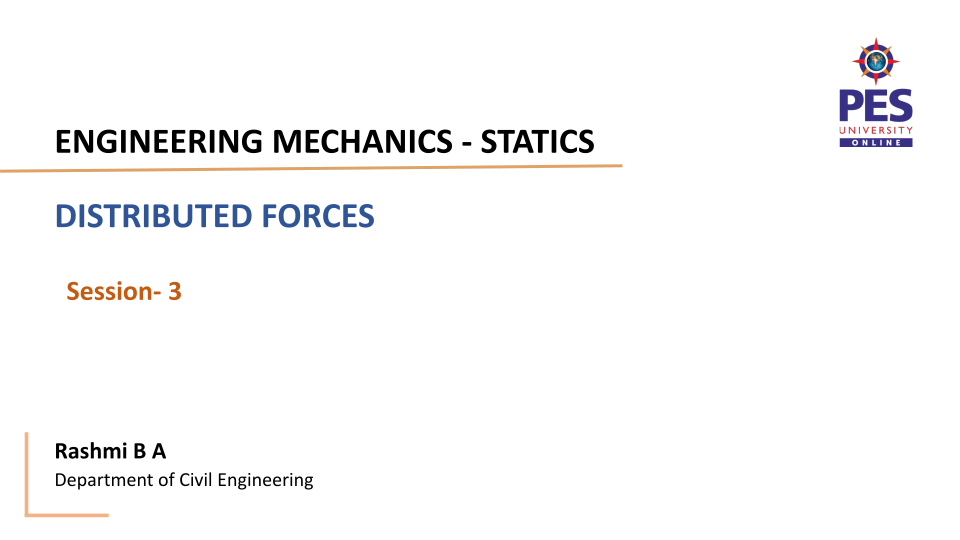
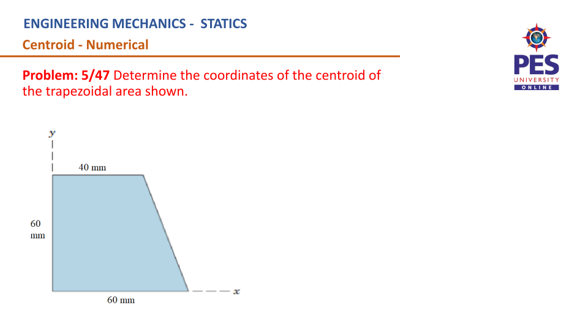
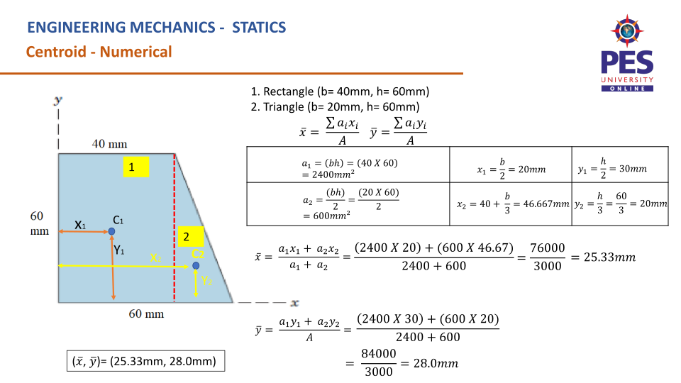
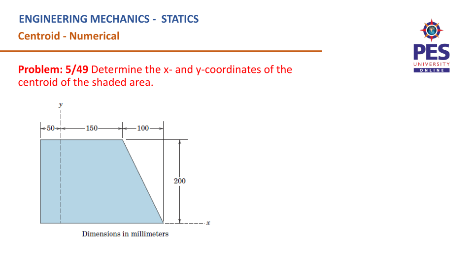
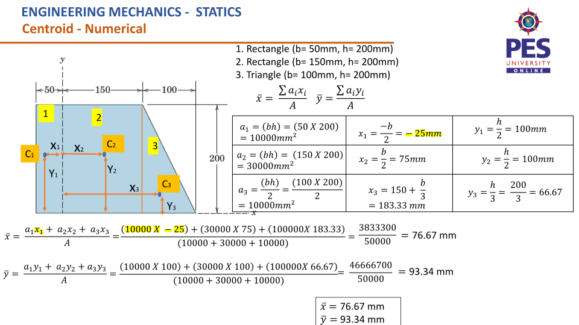
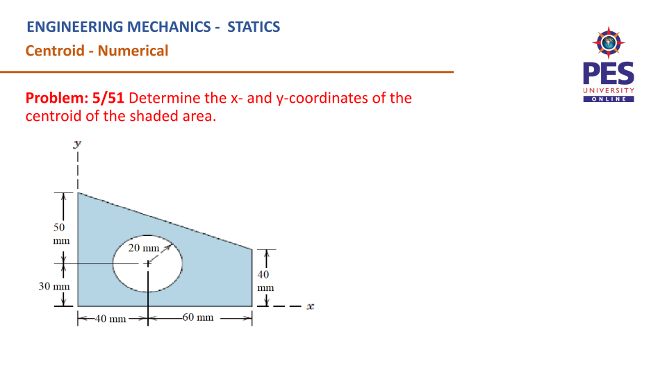
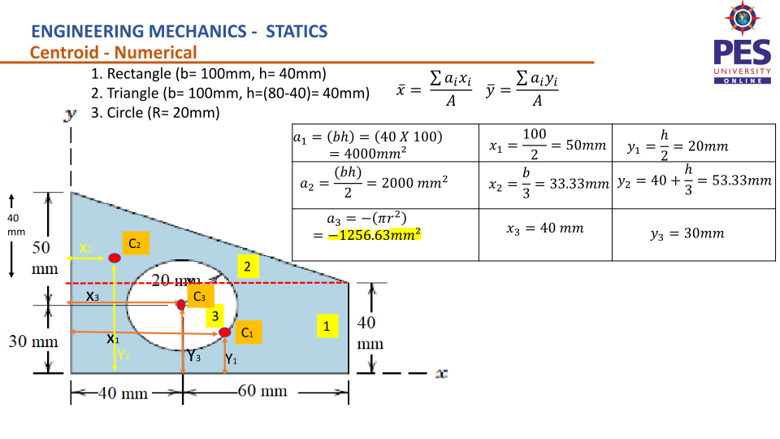
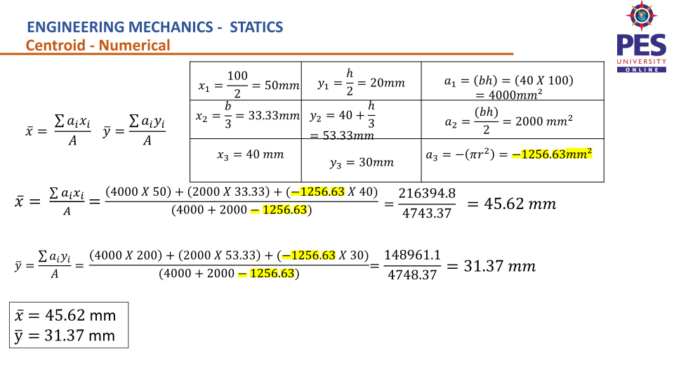

Important points and why
- Source slide page 1 (extracted text): ENGINEERING MECHANICS - STATICS Rashmi B A Department of Civil Engineering EV0000312 · EV0000313 · EV0000314
- Source slide page 2 (extracted text): ENGINEERING MECHANICS - STATICS DISTRIBUTED FORCES Session- 3 Rashmi B A Department of Civil Engineering EV0000315 · EV0000316 · EV0000317
- Source slide page 3 (extracted text): ENGINEERING MECHANICS - STATICS Centroid - Numerical Problem: 5/47 Determine the coordinates of the centroid of the trapezoidal area shown. EV0000318 · EV0000319 · EV0000320
- Source slide page 4 (extracted text): ENGINEERING MECHANICS - STATICS Centroid - Numerical 1. Rectangle (b= 40mm, h= 60mm) 2. Triangle (b= 20mm, h= 60mm) σ 𝑎𝑖𝑥𝑖 σ 𝑎𝑖𝑦𝑖 ҧ𝑥= ത𝑦= 𝐴 𝐴 𝑎1 = 𝑏ℎ= 40 𝑋60 𝑏 ℎ = = 30𝑚𝑚 1 𝑥1 = = 20𝑚𝑚 𝑦1 = 2400𝑚𝑚² 2 2 (𝑏ℎ) (20 𝑋60) 𝑏 ℎ 60 𝑎2 = = 2 2 𝑥2 = 40 + = 46.667𝑚𝑚𝑦2 = = = 20𝑚𝑚 3 3 3 = 600𝑚𝑚² x1 C1 2 Y1 𝑎1𝑥1 + 𝑎2𝑥2 2400 𝑋20 + (600 𝑋46.67) 76000 ҧ𝑥= = = = 25.33𝑚𝑚 x2 C2 𝑎1 + 𝑎2 2400 + 600 3000 Y2 2400 𝑋30 + (600 𝑋20) 𝑎1𝑦1 + 𝑎2𝑦2 ത𝑦= = 𝐴 2400 + 600 84000 (ҧ𝑥, ത𝑦)= (25.33mm, 28.0mm) = = 28.0𝑚𝑚 3000 EV0000321 · EV0000322 · EV0000323
- Source slide page 5 (extracted text): ENGINEERING MECHANICS - STATICS Centroid - Numerical Problem: 5/49 Determine the x- and y-coordinates of the centroid of the shaded area. EV0000324 · EV0000325 · EV0000326
- Source slide page 6 (extracted text): ENGINEERING MECHANICS - STATICS Centroid - Numerical 1. Rectangle (b= 50mm, h= 200mm) 2. Rectangle (b= 150mm, h= 200mm) 3. Triangle (b= 100mm, h= 200mm) σ 𝑎𝑖𝑥𝑖 σ 𝑎𝑖𝑦𝑖 ҧ𝑥= ത𝑦= 𝐴 𝐴 1 2 ℎ 𝑎1 = 𝑏ℎ= 50 𝑋200 −𝑏 𝑦1 = = 100𝑚𝑚 𝑥1 = = −25𝑚𝑚 2 = 10000𝑚𝑚² 2 x1 C2 3 x2 𝑏 ℎ C1 𝑎2 = 𝑏ℎ= 150 𝑋200 𝑥2 = = 75𝑚𝑚 𝑦2 = = 100𝑚𝑚 = 30000𝑚𝑚2 2 2 Y2 Y1 C3 (𝑏ℎ) (100 𝑋200) 𝑏 ℎ 200 x3 𝑎3 = = 𝑥3 = 150 + 𝑦3 = = = 66.67 2 2 3 3 3 Y3 = 10000𝑚𝑚² = 183.33 𝑚𝑚 𝑎1𝑥1 + 𝑎2𝑥2 + 𝑎3𝑥3 10000 𝑋−25 + 30000 𝑋75 + 100000𝑋183.33 3833300 ҧ𝑥= = = = 76.67 mm 𝐴 (10000 + 30000 + 10000) 50000 𝑎1𝑦1 + 𝑎2𝑦2 + 𝑎3𝑦3 10000 𝑋100 + 30000 𝑋100 + 100000𝑋66.67 46666700ത𝑦= = = = 93.34 mm 𝐴 (10000 + 30000 + 10000) 50000 ҧ𝑥= 76.67 mm ത𝑦= 93.34 mm EV0000327 · EV0000328 · EV0000329
- Source slide page 7 (extracted text): ENGINEERING MECHANICS - STATICS Centroid - Numerical Problem: 5/51 Determine the x- and y-coordinates of the centroid of the shaded area. EV0000330 · EV0000331 · EV0000332
- Source slide page 8 (extracted text): ENGINEERING MECHANICS - STATICS Centroid - Numerical 1. Rectangle (b= 100mm, h= 40mm) σ 𝑎𝑖𝑥𝑖 σ 𝑎𝑖𝑦𝑖 ҧ𝑥= ത𝑦= 2. Triangle (b= 100mm, h=(80-40)= 40mm) 𝐴 𝐴 3. Circle (R= 20mm) 100 ℎ 𝑎1 = 𝑏ℎ= 40 𝑋100 𝑥1 = = 50𝑚𝑚 𝑦1 = = 20𝑚𝑚 = 4000𝑚𝑚² 2 2 ℎ (𝑏ℎ) 𝑏 = 40 + = 53.33𝑚𝑚 𝑎2 = = 2000 𝑚𝑚2 𝑥2 = = 33.33𝑚𝑚𝑦2 3 2 3 40 𝑎3 = −𝜋𝑟2 mm 𝑥3 = 40 𝑚𝑚 = −1256.63𝑚𝑚² 𝑦3 = 30𝑚𝑚 x2 C2 2 Y1 x3 C3 3 1 C1 x1 Y2 Y3 Y1 EV0000333 · EV0000334 · EV0000335
- Source slide page 9 (extracted text): ENGINEERING MECHANICS - STATICS Centroid - Numerical ℎ 100 𝑎1 = 𝑏ℎ= 40 𝑋100 𝑦1 = = 20𝑚𝑚 𝑥1 = = 50𝑚𝑚 2 2 = 4000𝑚𝑚² 𝑏 ℎ (𝑏ℎ) 𝑥2 = = 33.33𝑚𝑚𝑦2 = 40 + = = 2000 𝑚𝑚2 σ 𝑎𝑖𝑥𝑖 σ 𝑎𝑖𝑦𝑖 3 3 𝑎2 ҧ𝑥= ത𝑦= 2 = 53.33𝑚𝑚 𝐴 𝐴 𝑥3 = 40 𝑚𝑚 𝑎3 = −𝜋𝑟2 = −1256.63𝑚𝑚² 𝑦3 = 30𝑚𝑚 σ 𝑎𝑖𝑥𝑖 4000 𝑋50 + 2000 𝑋33.33 + (−1256.63 𝑋40) 216394.8 ҧ𝑥= = = = 45.62 𝑚𝑚 𝐴 (4000 + 2000 −1256.63) 4743.37 σ 𝑎𝑖𝑦𝑖 4000 𝑋200 + 2000 𝑋53.33 + (−1256.63 𝑋30) 148961.1 ത𝑦= = = = 31.37 𝑚𝑚 𝐴 (4000 + 2000 −1256.63) 4748.37 ҧ𝑥= 45.62 mm തy = 31.37 mm EV0000336 · EV0000337 · EV0000338
- Source slide page 10 (extracted text): THANK YOU Rashmi B A Department of Civil Engineering rashmiba@pes.edu EV0000339 · EV0000340 · EV0000341
5CLASS 35 Centroid_ Numerical
This lesson is indexed from the source video titled CLASS 35 Centroid_ Numerical. Its complete timestamped transcript is preserved below in segment order. The original video path and content hash are recorded in datasets/lecture-corpus.json. Transcript text is source wording; it has not been silently corrected or rewritten. A candidate slide deck is grouped here according to the current matching score; the exact path and page locators are listed in the source evidence. EV0000058 · EV0000059
Graphs and diagrams
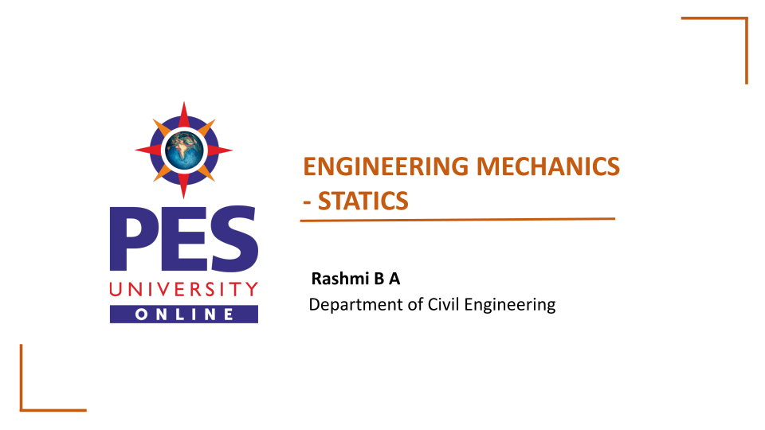
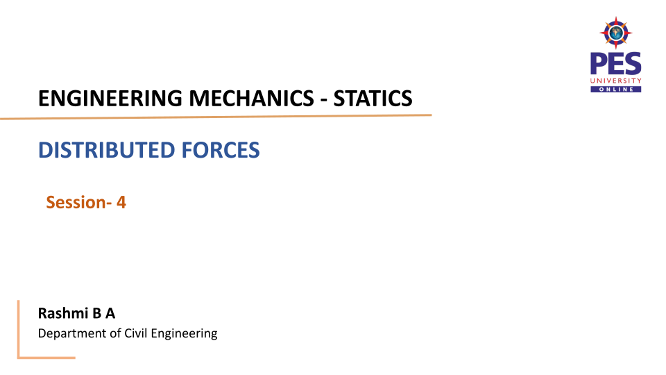
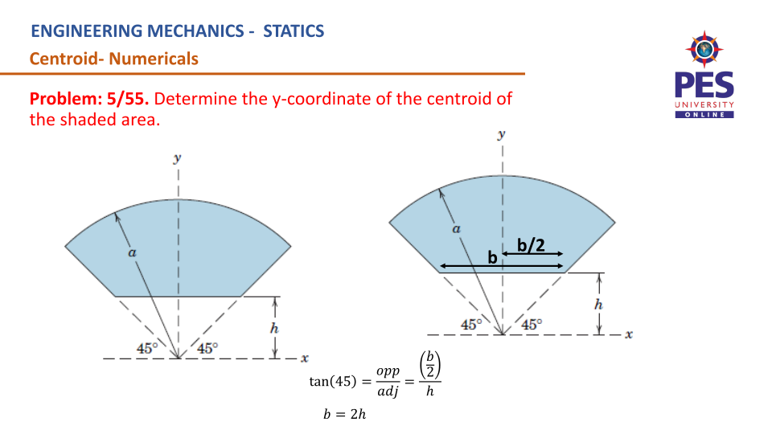
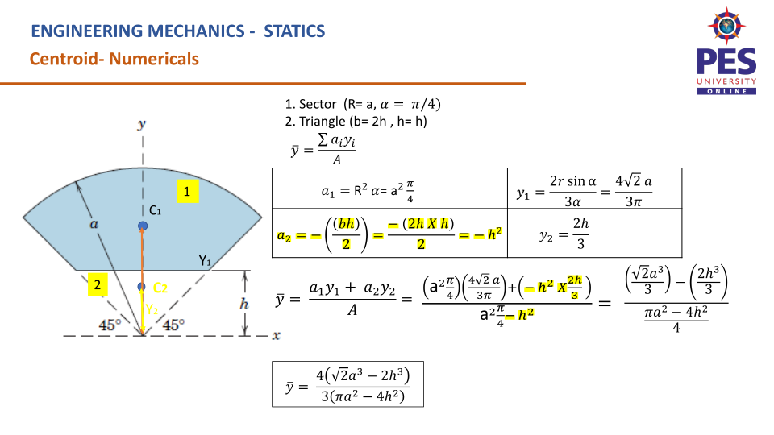
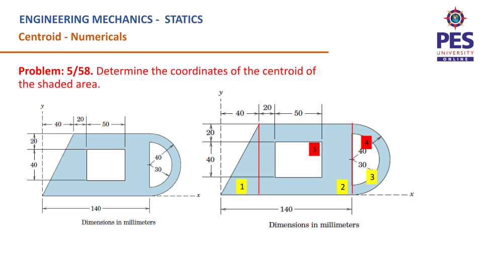
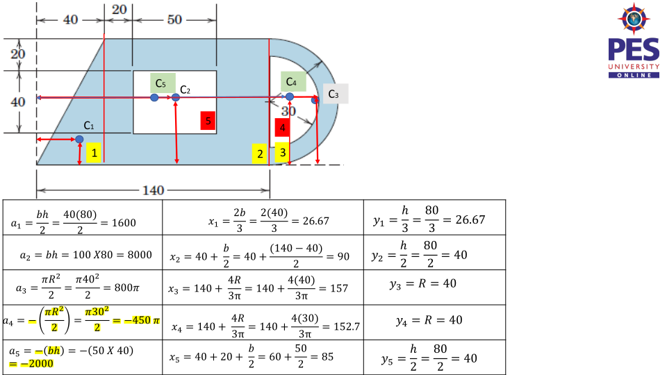
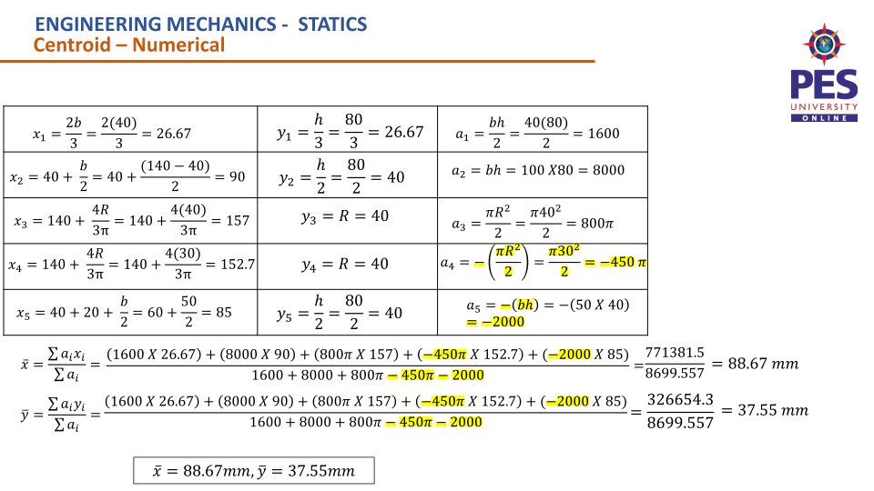

Important points and why
- Source slide page 1 (extracted text): ENGINEERING MECHANICS - STATICS Rashmi B A Department of Civil Engineering EV0000342 · EV0000343 · EV0000344
- Source slide page 2 (extracted text): ENGINEERING MECHANICS - STATICS DISTRIBUTED FORCES Session- 4 Rashmi B A Department of Civil Engineering EV0000345 · EV0000346 · EV0000347
- Source slide page 3 (extracted text): ENGINEERING MECHANICS - STATICS Centroid- Numericals Problem: 5/55. Determine the y-coordinate of the centroid of the shaded area. b/2 b 𝑏 𝑜𝑝𝑝 2 tan 45 = 𝑎𝑑𝑗= ℎ 𝑏= 2ℎ EV0000348 · EV0000349 · EV0000350
- Source slide page 4 (extracted text): ENGINEERING MECHANICS - STATICS Centroid- Numericals 1. Sector (R= a, 𝛼= 𝜋/4) 2. Triangle (b= 2h , h= h) σ 𝑎𝑖𝑦𝑖 ത𝑦= 𝐴 𝜋 2𝑟sin α 4 2 𝑎 1 𝑎1 = R2 𝛼= a2 𝑦1 = = 4 3𝛼 3𝜋 C1 𝑏ℎ −2ℎ𝑋ℎ 2ℎ 𝑎2 = − = = −ℎ2 𝑦2 = 2 2 3 Y1 2𝑎3 4 2 𝑎 −2ℎ3 + −ℎ2 𝑋2ℎ 3 3 2 C2 𝑎1𝑦1 + 𝑎2𝑦2 a2𝜋 ത𝑦= = 4 3𝜋 3 = Y2 𝐴 a2𝜋 𝜋𝑎2 −4ℎ2 4−ℎ2 4 4 2𝑎3 −2ℎ3 ത𝑦= 3 𝜋𝑎2 −4ℎ2 EV0000351 · EV0000352 · EV0000353
- Source slide page 5 (extracted text): ENGINEERING MECHANICS - STATICS Centroid - Numericals Problem: 5/58. Determine the coordinates of the centroid of the shaded area. 4 5 3 1 2 EV0000354 · EV0000355 · EV0000356
- Source slide page 6 (extracted text): C5 C4 C2 C3 5 C1 4 1 2 3 ℎ 80 𝑏ℎ 40(80) 2𝑏 2(40) 𝑎1 = = = 1600 𝑥1 = = = 26.67 𝑦1 = = = 26.67 2 2 3 3 3 3 𝑏 (140 −40) ℎ 80 𝑎2 = 𝑏ℎ= 100 𝑋80 = 8000 𝑥2 = 40 + = 40 + = 90 𝑦2 = = = 40 2 2 2 2 𝜋𝑅2 𝜋402 4𝑅 4(40) 𝑦3 = 𝑅= 40 𝑎3 = = = 800𝜋 𝑥3 = 140 + = 140 + = 157 2 2 3π 3π 𝜋302𝑎4 = −𝜋𝑅2 = = −450 𝜋 4𝑅 4(30) 𝑦4 = 𝑅= 40 2 2 𝑥4 = 140 + = 140 + = 152.7 3π 3π 𝑏 50 ℎ 80 𝑎5 = −𝑏ℎ= −50 𝑋40 𝑥5 = 40 + 20 + = 60 + = 85 𝑦5 = = = 40 = −2000 2 2 2 2 EV0000357 · EV0000358 · EV0000359
- Source slide page 7 (extracted text): ENGINEERING MECHANICS - STATICS Centroid – Numerical 2𝑏 2(40) ℎ 80 𝑏ℎ 40(80) 𝑥1 = = = 26.67 𝑦1 = = = 26.67 𝑎1 = = = 1600 3 3 3 3 2 2 𝑏 (140 −40) ℎ 80 𝑎2 = 𝑏ℎ= 100 𝑋80 = 8000𝑥2 = 40 + = 40 + = 90 𝑦2 = = = 40 2 2 2 2 4𝑅 4(40) 𝜋𝑅2 𝜋402 𝑦3 = 𝑅= 40 𝑥3 = 140 + = 140 + = 157 𝑎3 = = = 800𝜋 3π 3π 2 2 4𝑅 4(30) 𝜋302 −𝜋𝑅2 = = −450 𝜋𝑥4 = 140 + = 140 + = 152.7 𝑦4 = 𝑅= 40 𝑎4 = 3π 3π 2 2 𝑏 50 ℎ 80 𝑎5 = −𝑏ℎ= −50 𝑋40 𝑥5 = 40 + 20 + = 60 + = 85 𝑦5 = = = 40 2 2 2 2 = −2000 σ 𝑎𝑖𝑥𝑖 1600 𝑋26.67 + 8000 𝑋90 + 800𝜋𝑋157 + −450𝜋𝑋152.7 + (−2000 𝑋85) 771381.5 ҧ𝑥= = = = 88.67 𝑚𝑚 σ 𝑎𝑖 1600 + 8000 + 800𝜋−450𝜋−2000 8699.557 σ 𝑎𝑖𝑦𝑖 1600 𝑋26.67 + 8000 𝑋90 + 800𝜋𝑋157 + −450𝜋𝑋152.7 + (−2000 𝑋85) 326654.3 ത𝑦= = = = 37.55 𝑚𝑚 σ 𝑎𝑖 1600 + 8000 + 800𝜋−450𝜋−2000 8699.557 ҧ𝑥= 88.67𝑚𝑚, ത𝑦= 37.55𝑚𝑚 EV0000360 · EV0000361 · EV0000362
- Source slide page 8 (extracted text): THANK YOU Rashmi B A Department of Civil Engineering rashmiba@pes.edu EV0000363 · EV0000364 · EV0000365
6CLASS 29 Introduction to Beams
This lesson is indexed from the source video titled CLASS 29 Introduction to Beams. Its complete timestamped transcript is preserved below in segment order. The original video path and content hash are recorded in datasets/lecture-corpus.json. Transcript text is source wording; it has not been silently corrected or rewritten. No slide deck is assigned to this video; candidate slide sources remain separate in the unit master. EV0000070 · EV0000071
7CLASS 30 Beams_Numerical
This lesson is indexed from the source video titled CLASS 30 Beams_Numerical. Its complete timestamped transcript is preserved below in segment order. The original video path and content hash are recorded in datasets/lecture-corpus.json. Transcript text is source wording; it has not been silently corrected or rewritten. No slide deck is assigned to this video; candidate slide sources remain separate in the unit master. EV0000086 · EV0000087
8CLASS 31 Beams_Numerical
This lesson is indexed from the source video titled CLASS 31 Beams_Numerical. Its complete timestamped transcript is preserved below in segment order. The original video path and content hash are recorded in datasets/lecture-corpus.json. Transcript text is source wording; it has not been silently corrected or rewritten. No slide deck is assigned to this video; candidate slide sources remain separate in the unit master. EV0000102 · EV0000103
9CLASS 41.1 Beams_Numerical
This lesson is indexed from the source video titled CLASS 41.1 Beams_Numerical. Its complete timestamped transcript is preserved below in segment order. The original video path and content hash are recorded in datasets/lecture-corpus.json. Transcript text is source wording; it has not been silently corrected or rewritten. No slide deck is assigned to this video; candidate slide sources remain separate in the unit master. EV0000118 · EV0000119
10UE25CV141A_Unit 3_Class 53_AVSummary
This lesson is indexed from the source video titled UE25CV141A_Unit 3_Class 53_AVSummary. Its complete timestamped transcript is preserved below in segment order. The original video path and content hash are recorded in datasets/lecture-corpus.json. Transcript text is source wording; it has not been silently corrected or rewritten. A candidate slide deck is grouped here according to the current matching score; the exact path and page locators are listed in the source evidence. EV0000134 · EV0000135
Graphs and diagrams


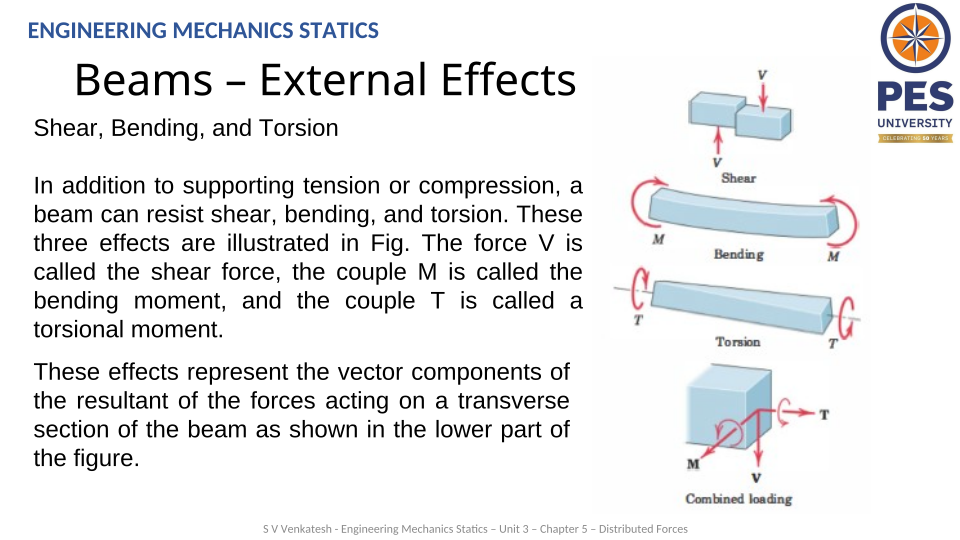
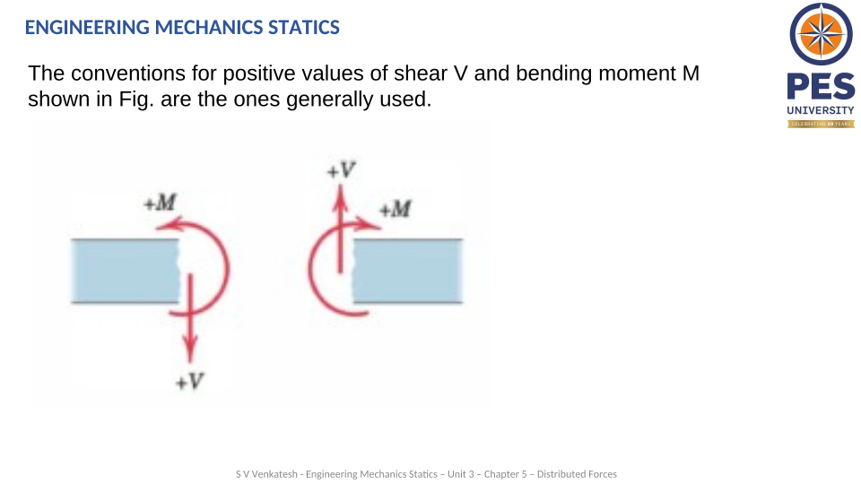
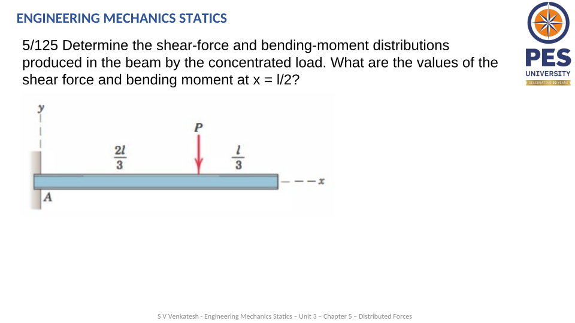
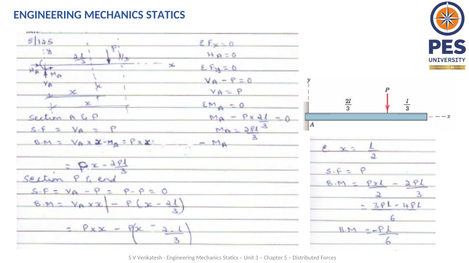
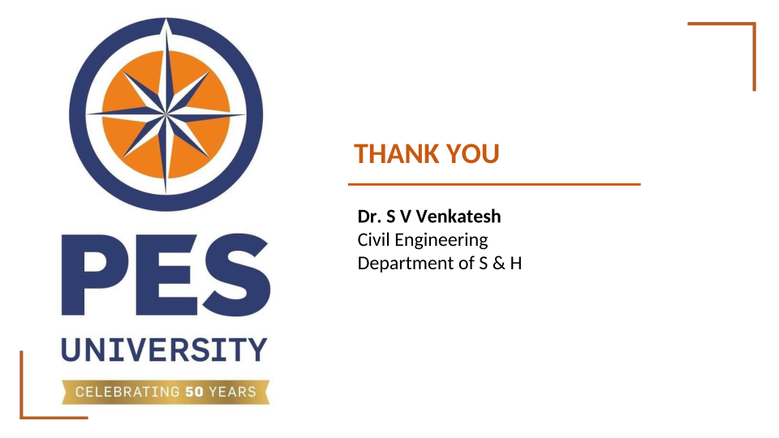
Important points and why
- Source slide page 1: no readable `.slides.md` text was extracted. The original rendered page is included as the adjacent source figure for visual inspection. EV0000453 · EV0000454 · EV0000455
- Source slide page 2 (extracted text): Engineering Mechanics Statics EIGHTH Edition SI Version J. L. Meriam and L. G. Kraige Unit 3 DISTRIBUTED FORCES Chapter 5 Beams external Effects Copyright © 2012 by John Wiley & Sons, Inc. All rights reserved. S V Venkatesh - Engineering Mechanics – Unit 3 – Chapter 5 – Distributed forces EV0000456 · EV0000457 · EV0000458
- Source slide page 3 (extracted text): ENGINEERING MECHANICS STATICS Beams – External Effects Shear, Bending, and Torsion In addition to supporting tension or compression, a beam can resist shear, bending, and torsion. These three effects are illustrated in Fig. The force V is called the shear force, the couple M is called the bending moment, and the couple T is called a torsional moment.These effects represent the vector components of the resultant of the forces acting on a transverse section of the beam as shown in the lower part of the figure. S V Venkatesh - Engineering Mechanics Statics – Unit 3 – Chapter 5 – Distributed Forces EV0000459 · EV0000460 · EV0000461
- Source slide page 4 (extracted text): ENGINEERING MECHANICS STATICS The conventions for positive values of shear V and bending moment M shown in Fig. are the ones generally used. S V Venkatesh - Engineering Mechanics Statics – Unit 3 – Chapter 5 – Distributed Forces EV0000462 · EV0000463 · EV0000464
- Source slide page 5 (extracted text): ENGINEERING MECHANICS STATICS 5/125 Determine the shear-force and bending-moment distributions produced in the beam by the concentrated load. What are the values of the shear force and bending moment at x = l/2? S V Venkatesh - Engineering Mechanics Statics – Unit 3 – Chapter 5 – Distributed Forces ## Page / slide 6 (OCR) ENGINEERING MECHANICS STATICS PES H凸二口 UNIVERSITY CELEBRATING50YEARS 23 3 中 5 2PL-4PL B.M S VVenkatesh-Engineering Mechanics Statics-Unit 3 - Chapter 5 - Distributed Forces ## Page / slide 7 (OCR) THANK YOU Dr. S V PES Venkatesh Civil Engineering Department of S & H UNIVERSITY CELEBRATING 5O YEARS EV0000465
- Source slide page 6: no readable `.slides.md` text was extracted. The original rendered page is included as the adjacent source figure for visual inspection. EV0000466
- Source slide page 7: no readable `.slides.md` text was extracted. The original rendered page is included as the adjacent source figure for visual inspection. EV0000467
11UE25CV141A_Unit 3_Class 54_AV Summary
This lesson is indexed from the source video titled UE25CV141A_Unit 3_Class 54_AV Summary. Its complete timestamped transcript is preserved below in segment order. The original video path and content hash are recorded in datasets/lecture-corpus.json. Transcript text is source wording; it has not been silently corrected or rewritten. A candidate slide deck is grouped here according to the current matching score; the exact path and page locators are listed in the source evidence. EV0000150 · EV0000151
Graphs and diagrams


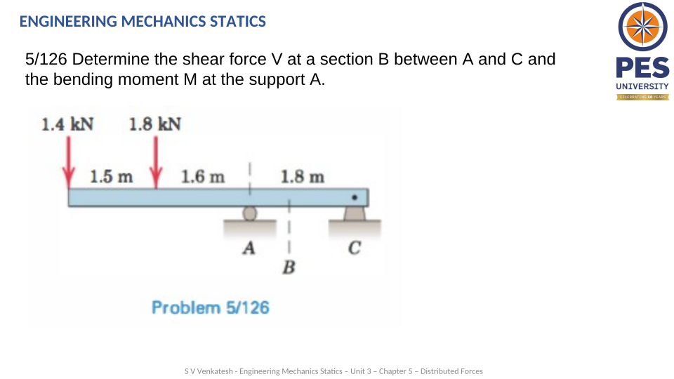
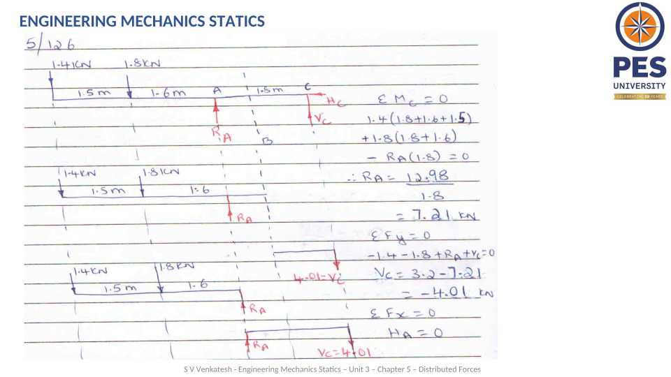
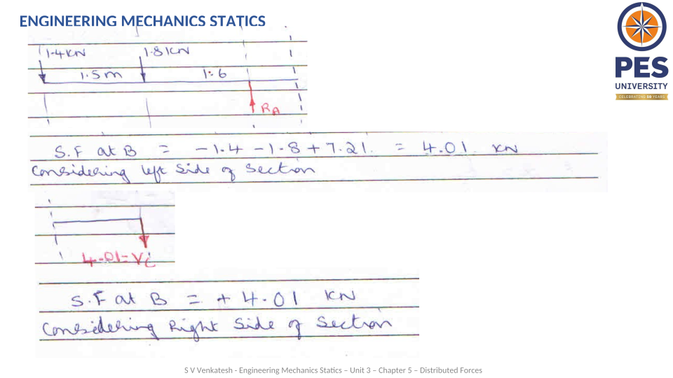
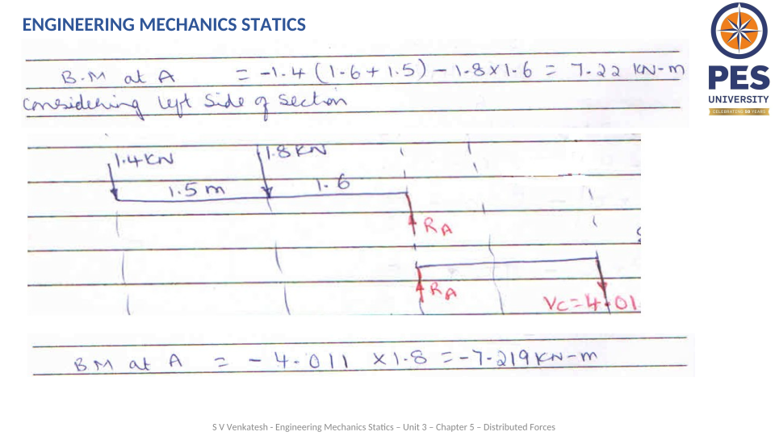
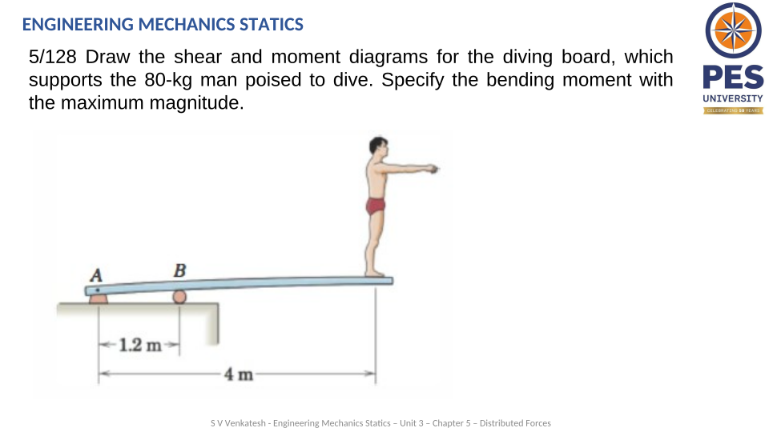
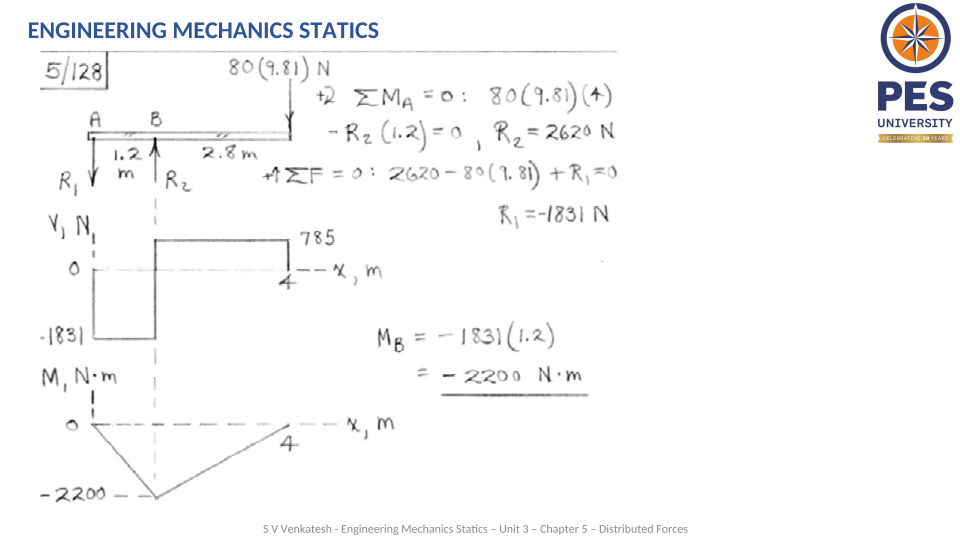

Important points and why
- Source slide page 1: no readable `.slides.md` text was extracted. The original rendered page is included as the adjacent source figure for visual inspection. EV0000468 · EV0000469 · EV0000470
- Source slide page 2 (extracted text): Engineering Mechanics Statics EIGHTH Edition SI Version J. L. Meriam and L. G. Kraige Unit 3 DISTRIBUTED FORCES Chapter 5 Beams Internal Effects Copyright © 2012 by John Wiley & Sons, Inc. All rights reserved. S V Venkatesh - Engineering Mechanics – Unit 3 – Chapter 5 – Distributed forces EV0000471 · EV0000472 · EV0000473
- Source slide page 3 (extracted text): ENGINEERING MECHANICS STATICS 5/126 Determine the shear force V at a section B between A and C and the bending moment M at the support A. S V Venkatesh - Engineering Mechanics Statics – Unit 3 – Chapter 5 – Distributed Forces ## Page / slide 4 (OCR) ENGINEERINGMECHANICSSTATICS 1Q 6 1.8KN PES CN UNIVERSITY 1.5m m CELEBRATING5OYEARS 1. 4(1.8+1.6+1.5) +1.8(1 8+1.6) RyC8) 二0 -462 18102 RA-1.98 S3 18 2 7. a1 rN -14-18+B+y=0 18N 14EN Nc32-1:Q1 1. 6 1.5m -40LEn Vc-4101 S V Venkatesh - Engineering Mechanics Statics - Unit 3 - Chapter 5 - Distributed Forces ## Page / slide 5 (OCR) ENGINEERING MECHANICS STATICS -462 18102 PES S3 1.6 UNIVERSITY CELEBRATING5OYEARS 114-18+1Q一. F.01 S.FatB SLu Sect c s←2B=+千O1 CZ SLU Stn Cmrderla S V Venkatesh - Engineering Mechanics Statics - Unit 3 - Chapter 5 - Distributed Forces ## Page / slide 6 (OCR) ENGINEERING MECHANICS STATICS (1-6 +1.5)--1-8x1-6 = 7. Qa 二-14 z-3 PES BMNA S& o Sectm CmsiduraUyr UNIVERSITY CELEBRATING5OYEARS 18P2 1.4EN 1.5m RA Vc-4101 x1.8 -7-Q19Kn-m BMaA S V Venkatesh - Engineering Mechanics Statics - Unit 3 - Chapter 5 - Distributed Forces EV0000474 · EV0000475 · EV0000476
- Source slide page 4: no readable `.slides.md` text was extracted. The original rendered page is included as the adjacent source figure for visual inspection. EV0000477 · EV0000478 · EV0000479
- Source slide page 5: no readable `.slides.md` text was extracted. The original rendered page is included as the adjacent source figure for visual inspection. EV0000480
- Source slide page 6: no readable `.slides.md` text was extracted. The original rendered page is included as the adjacent source figure for visual inspection. EV0000481
- Source slide page 7 (extracted text): ENGINEERING MECHANICS STATICS 5/128 Draw the shear and moment diagrams for the diving board, which supports the 80-kg man poised to dive. Specify the bending moment with the maximum magnitude. S V Venkatesh - Engineering Mechanics Statics – Unit 3 – Chapter 5 – Distributed Forces EV0000482
- Source slide page 8 (extracted text): ENGINEERING MECHANICS STATICS S V Venkatesh - Engineering Mechanics Statics – Unit 3 – Chapter 5 – Distributed Forces ## Page / slide 9 (OCR) THANK YOU Dr. S V PES Venkatesh Civil Engineering Department of S & H UNIVERSITY CELEBRATING 5O YEARS EV0000483
- Source slide page 9: no readable `.slides.md` text was extracted. The original rendered page is included as the adjacent source figure for visual inspection. EV0000484
12UE25CV141A_Unit 3_Class 55_AV Summary
This lesson is indexed from the source video titled UE25CV141A_Unit 3_Class 55_AV Summary. Its complete timestamped transcript is preserved below in segment order. The original video path and content hash are recorded in datasets/lecture-corpus.json. Transcript text is source wording; it has not been silently corrected or rewritten. A candidate slide deck is grouped here according to the current matching score; the exact path and page locators are listed in the source evidence. EV0000166 · EV0000167
Graphs and diagrams


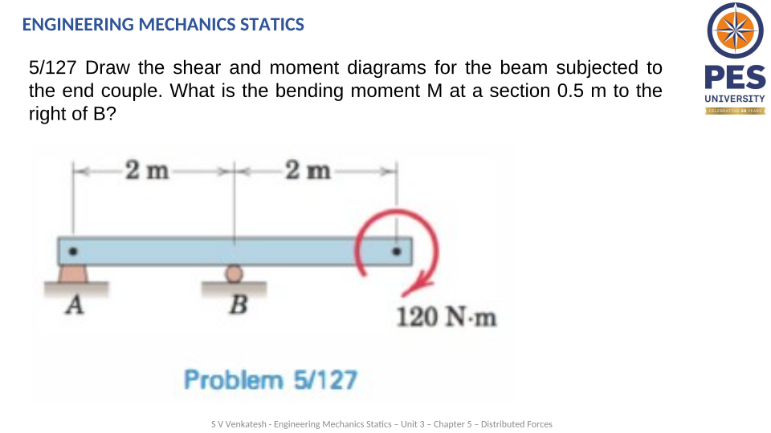
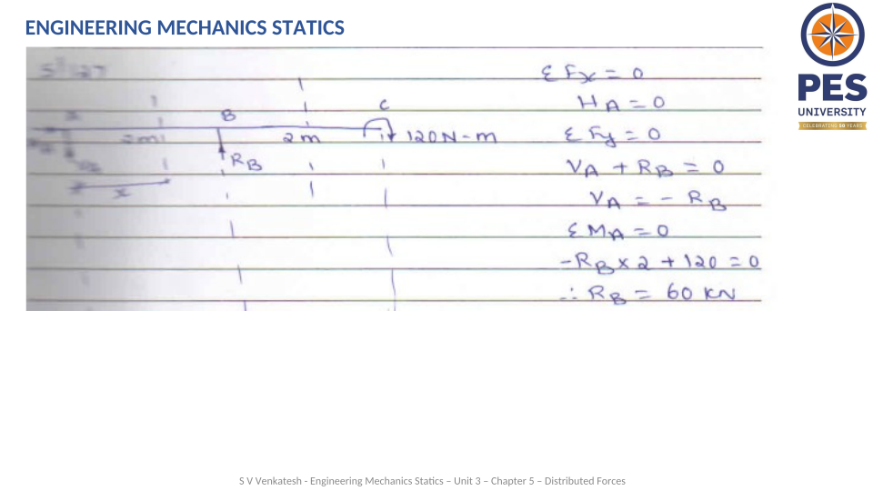
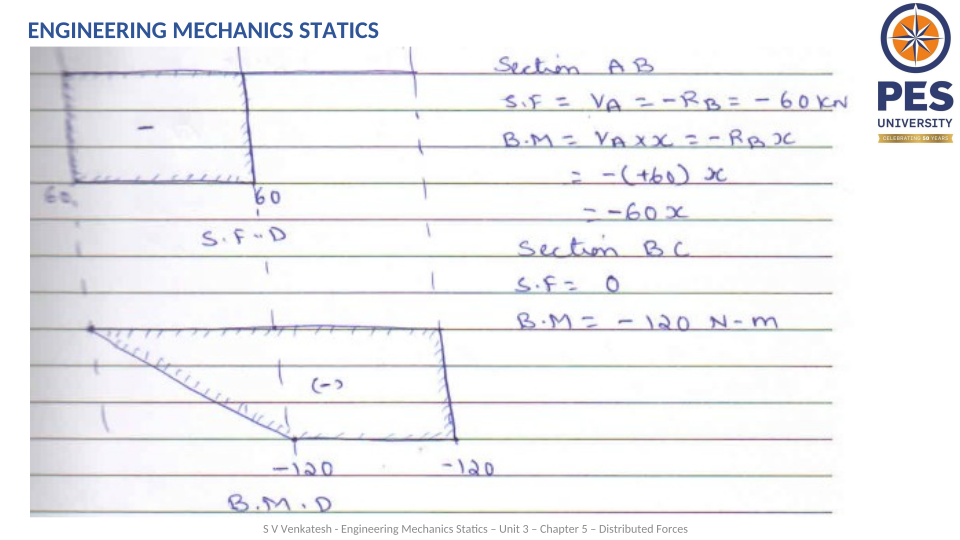
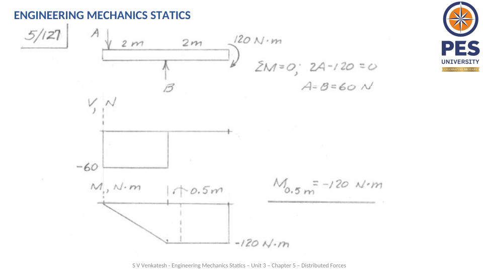
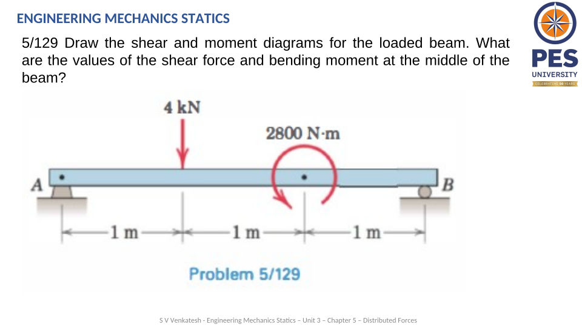
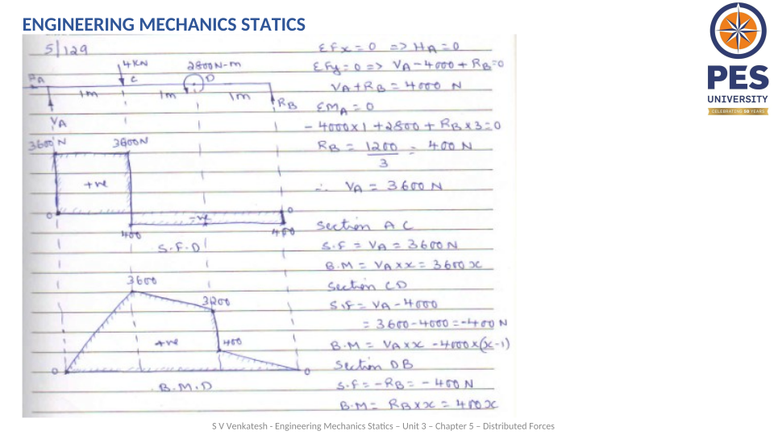
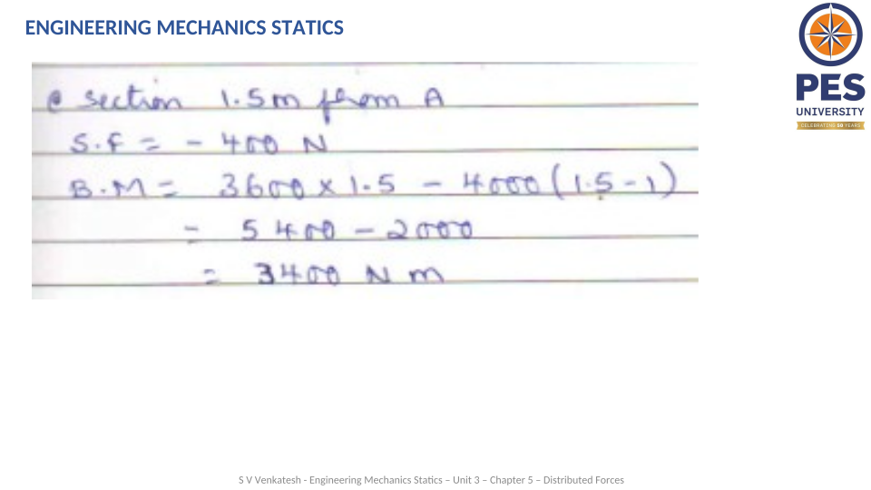
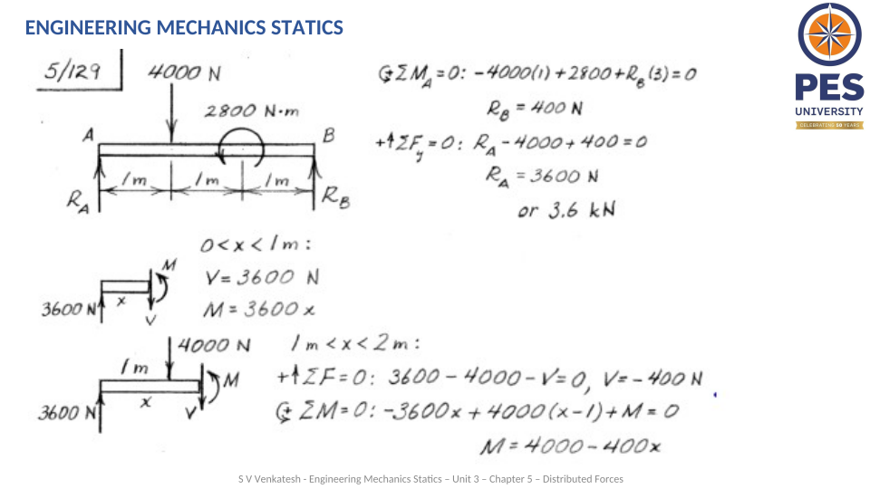
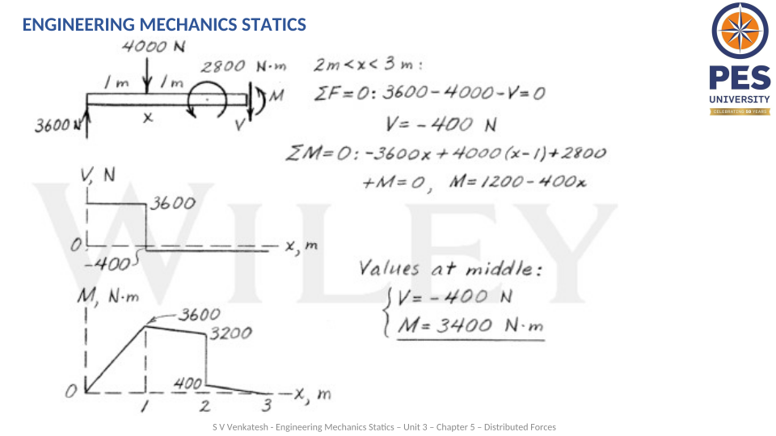

Important points and why
- Source slide page 1: no readable `.slides.md` text was extracted. The original rendered page is included as the adjacent source figure for visual inspection. EV0000485 · EV0000486 · EV0000487
- Source slide page 2 (extracted text): Engineering Mechanics Statics EIGHTH Edition SI Version J. L. Meriam and L. G. Kraige Unit 3 DISTRIBUTED FORCES Chapter 5 Beams Internal Effects Copyright © 2012 by John Wiley & Sons, Inc. All rights reserved. S V Venkatesh - Engineering Mechanics – Unit 3 – Chapter 5 – Distributed forces EV0000488 · EV0000489 · EV0000490
- Source slide page 3 (extracted text): ENGINEERING MECHANICS STATICS 5/127 Draw the shear and moment diagrams for the beam subjected to the end couple. What is the bending moment M at a section 0.5 m to the right of B? S V Venkatesh - Engineering Mechanics Statics – Unit 3 – Chapter 5 – Distributed Forces EV0000491 · EV0000492 · EV0000493
- Source slide page 4 (extracted text): ENGINEERING MECHANICS STATICS S V Venkatesh - Engineering Mechanics Statics – Unit 3 – Chapter 5 – Distributed Forces ## Page / slide 5 (OCR) ENGINEERINGMECHANICSSTATICS PES -R=-60KN VA UNIVERSITY B.M2YAXX2-RBOC CELEBRATING5OYEARS -（+b） S.F-D -150 S VVenkatesh-Engineering Mechanics Statics-Unit 3 - Chapter 5 - Distributed Forces ## Page / slide 6 (OCR) ENGINEERINGMECHANICSSTATICS 5/127 120N.m 2m 2m PES M=O:2A-120=U UNIVERSITY CELEBRATING50YEARS A=B=6ON -60 =-12oNm M.N-m ↑0.5m 0.5m -120N.m S V Venkatesh - Engineering Mechanics Statics - Unit 3 - Chapter 5 - Distributed Forces EV0000494 · EV0000495 · EV0000496
- Source slide page 5: no readable `.slides.md` text was extracted. The original rendered page is included as the adjacent source figure for visual inspection. EV0000497 · EV0000498 · EV0000499
- Source slide page 6: no readable `.slides.md` text was extracted. The original rendered page is included as the adjacent source figure for visual inspection. EV0000500 · EV0000501 · EV0000502
- Source slide page 7 (extracted text): ENGINEERING MECHANICS STATICS 5/129 Draw the shear and moment diagrams for the loaded beam. What are the values of the shear force and bending moment at the middle of the beam? S V Venkatesh - Engineering Mechanics Statics – Unit 3 – Chapter 5 – Distributed Forces EV0000503
- Source slide page 8 (extracted text): ENGINEERING MECHANICS STATICS S V Venkatesh - Engineering Mechanics Statics – Unit 3 – Chapter 5 – Distributed Forces EV0000504
- Source slide page 9 (extracted text): ENGINEERING MECHANICS STATICS S V Venkatesh - Engineering Mechanics Statics – Unit 3 – Chapter 5 – Distributed Forces ## Page / slide 10 (OCR) ENGINEERINGMECHANICSSTATICS 5/129 4000N G2M=0:-4000(1)+2800+R(3）=0 PES =400N 2800N.m 8 UNIVERSITY CELEBRATING50YEARS +2F=0:R-4000+400=0 =3600N or3.6kN 0<x</m: V=3600N 3600N M=3600x 4000N /m<x<2m: /m +↑2F=0:3600-4000-V=0,V=-400N X 3600N G2M=0:-3600x+4000（x-1)+M=D M=4000-400x S V Venkatesh - Engineering Mechanics Statics - Unit 3 - Chapter 5 - Distributed Forces ## Page / slide 11 (OCR) ENGINEERINGMECHANICSSTATICS 4000N 2800N.m 2m<x<3m： PES /m 2F=0:3600-4000-V=0 UNIVERSITY X CELEBRATING50YEARS 3600 V=-400N ∑M=0:-3600x+4000(x-1)+2800 +M=0.M=1200-400x 3600 400 Yaluesatmiddle: N-m V=-400N 3600 M=3400N-m 3200 400 2 S V Venkatesh - Engineering Mechanics Statics - Unit 3 - Chapter 5 - Distributed Forces ## Page / slide 12 (OCR) THANK YOU Dr. S V PES Venkatesh Civil Engineering Department of S & H UNIVERSITY CELEBRATING 5O YEARS EV0000505
- Source slide page 10: no readable `.slides.md` text was extracted. The original rendered page is included as the adjacent source figure for visual inspection. EV0000506
- Source slide page 11: no readable `.slides.md` text was extracted. The original rendered page is included as the adjacent source figure for visual inspection. EV0000507
- Source slide page 12: no readable `.slides.md` text was extracted. The original rendered page is included as the adjacent source figure for visual inspection. EV0000508
13UE26ME142A_Unit 3_Class 44.1_AV Summary
This lesson is indexed from the source video titled UE26ME142A_Unit 3_Class 44.1_AV Summary. Its complete timestamped transcript is preserved below in segment order. The original video path and content hash are recorded in datasets/lecture-corpus.json. Transcript text is source wording; it has not been silently corrected or rewritten. A candidate slide deck is grouped here according to the current matching score; the exact path and page locators are listed in the source evidence. EV0000186 · EV0000187
Graphs and diagrams

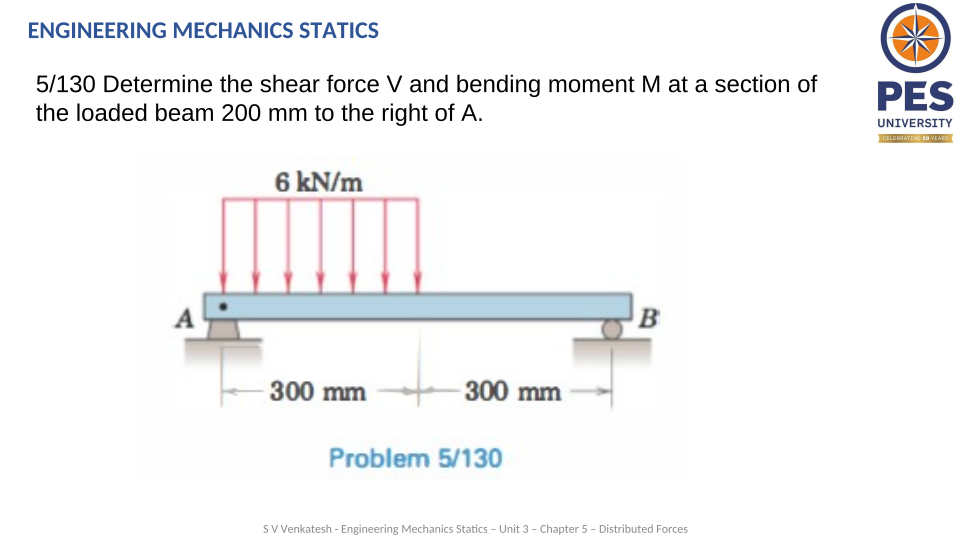
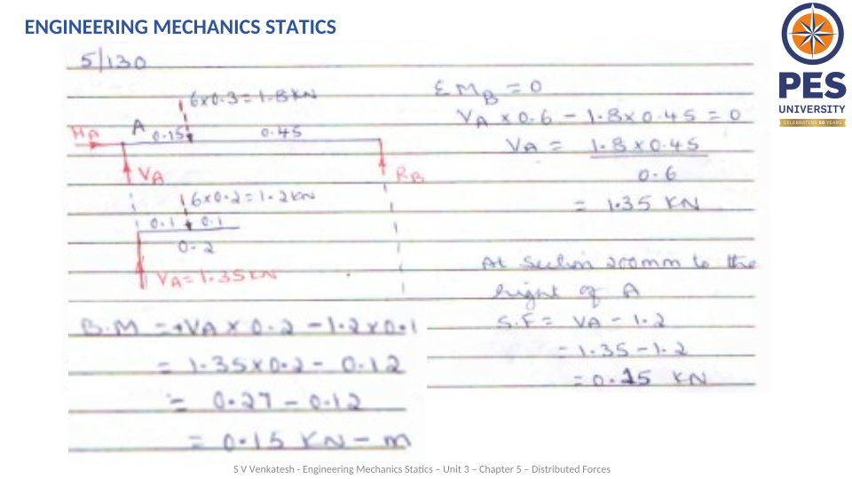
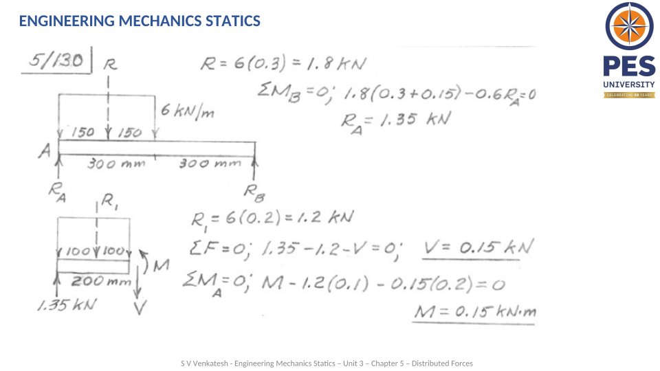
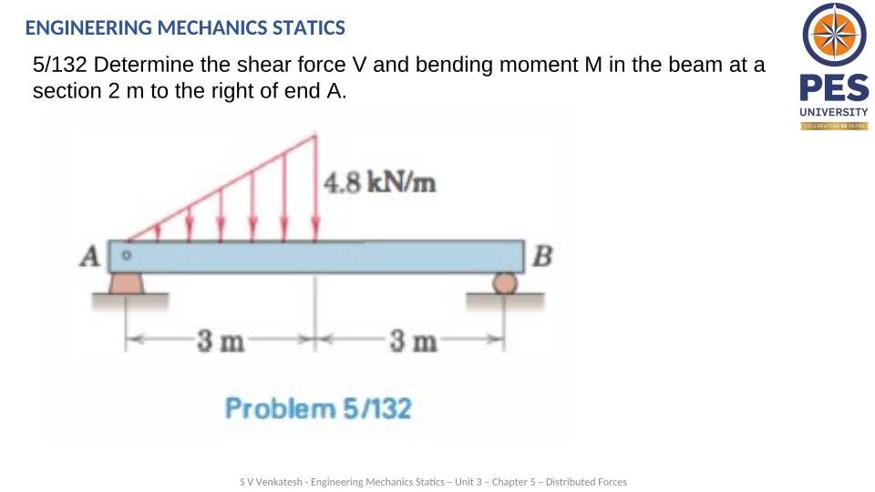
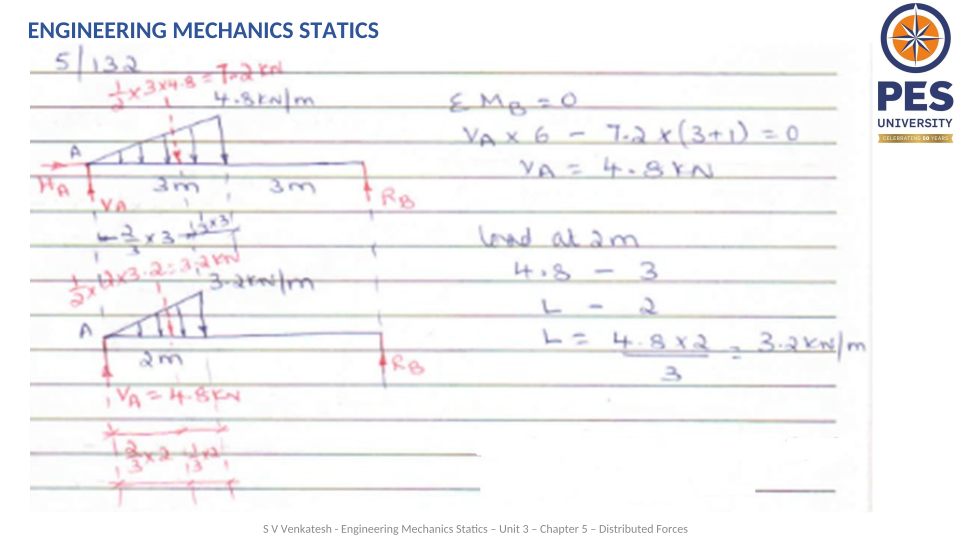
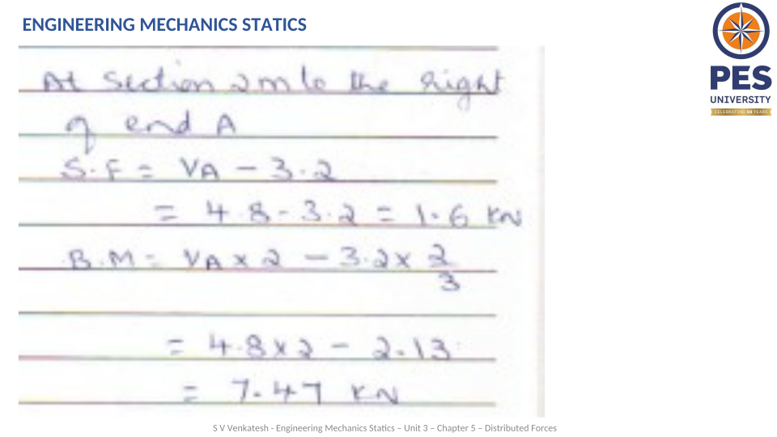
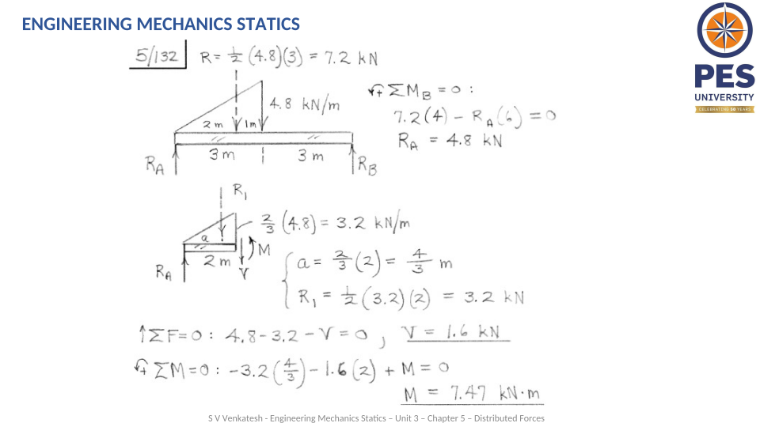

Important points and why
- Source slide page 1: no readable `.slides.md` text was extracted. The original rendered page is included as the adjacent source figure for visual inspection. EV0000509 · EV0000510 · EV0000511
- Source slide page 2 (extracted text): Engineering Mechanics Statics EIGHTH Edition SI Version J. L. Meriam and L. G. Kraige Unit 3 DISTRIBUTED FORCES Chapter 5 Beams Internal Effects Copyright © 2012 by John Wiley & Sons, Inc. All rights reserved. S V Venkatesh - Engineering Mechanics – Unit 3 – Chapter 5 – Distributed forces EV0000512 · EV0000513 · EV0000514
- Source slide page 3 (extracted text): ENGINEERING MECHANICS STATICS 5/130 Determine the shear force V and bending moment M at a section of the loaded beam 200 mm to the right of A. S V Venkatesh - Engineering Mechanics Statics – Unit 3 – Chapter 5 – Distributed Forces ## Page / slide 4 (OCR) ENGINEERINGMECHANICSSTATICS PES GX03AL-B1N UNIVERSITY CELEBRATING50YEARS 16x0.281.2 A303STON S V Venkatesh - Engineering Mechanics Statics - Unit 3 - Chapter 5 - Distributed Forces EV0000515 · EV0000516 · EV0000517
- Source slide page 4: no readable `.slides.md` text was extracted. The original rendered page is included as the adjacent source figure for visual inspection. EV0000518 · EV0000519 · EV0000520
- Source slide page 5 (extracted text): ENGINEERING MECHANICS STATICS S V Venkatesh - Engineering Mechanics Statics – Unit 3 – Chapter 5 – Distributed Forces EV0000521 · EV0000522 · EV0000523
- Source slide page 6 (extracted text): ENGINEERING MECHANICS STATICS 5/132 Determine the shear force V and bending moment M in the beam at a section 2 m to the right of end A. S V Venkatesh - Engineering Mechanics Statics – Unit 3 – Chapter 5 – Distributed Forces ## Page / slide 7 (OCR) ENGINEERINGMECHANICSSTATICS 132 x3x4.8=7 PES 4.82Nm VAx6-7.x(3+1)=0 UNIVERSITY CELEBRATING5OYEARS 4.8Y2 YA RP Ndaam 48 一 1x3.2:3.2m 8X2 3.2K RB VA=H-8EN S V Venkatesh - Engineering Mechanics Statics - Unit 3 - Chapter 5 - Distributed Forces EV0000524 · EV0000525 · EV0000526
- Source slide page 7: no readable `.slides.md` text was extracted. The original rendered page is included as the adjacent source figure for visual inspection. EV0000527
- Source slide page 8 (extracted text): ENGINEERING MECHANICS STATICS S V Venkatesh - Engineering Mechanics Statics – Unit 3 – Chapter 5 – Distributed Forces EV0000528
- Source slide page 9 (extracted text): ENGINEERING MECHANICS STATICS S V Venkatesh - Engineering Mechanics Statics – Unit 3 – Chapter 5 – Distributed Forces ## Page / slide 10 (OCR) THANK YOU Dr. S V PES Venkatesh Civil Engineering Department of S & H UNIVERSITY CELEBRATING 5O YEARS EV0000529
- Source slide page 10: no readable `.slides.md` text was extracted. The original rendered page is included as the adjacent source figure for visual inspection. EV0000530
14Source slide deck: Centroid
This entry preserves the complete slide deck titled Centroid as searchable extracted page text and page-faithful rendered images. Its association with a particular video is not confirmed; it remains a separate topic under Engineering Mechanics 1, Unit_03, to avoid an unsupported match. EV0000202 · EV0000203
Graphs and diagrams

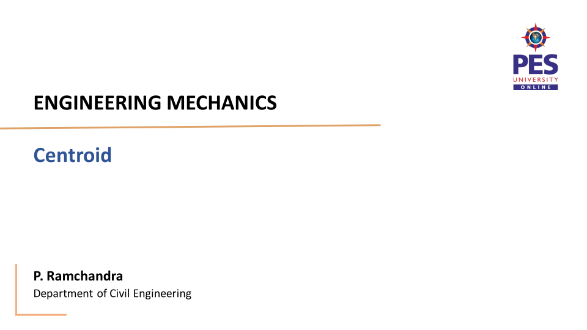
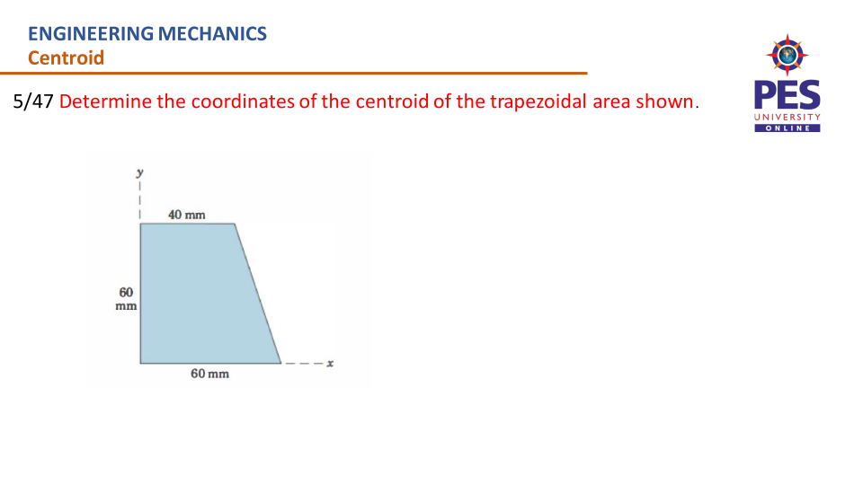
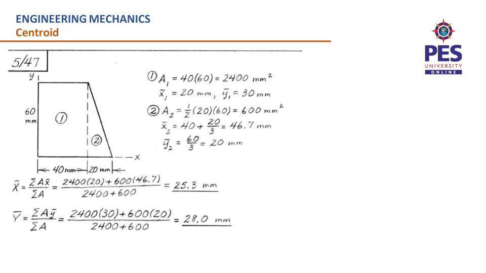
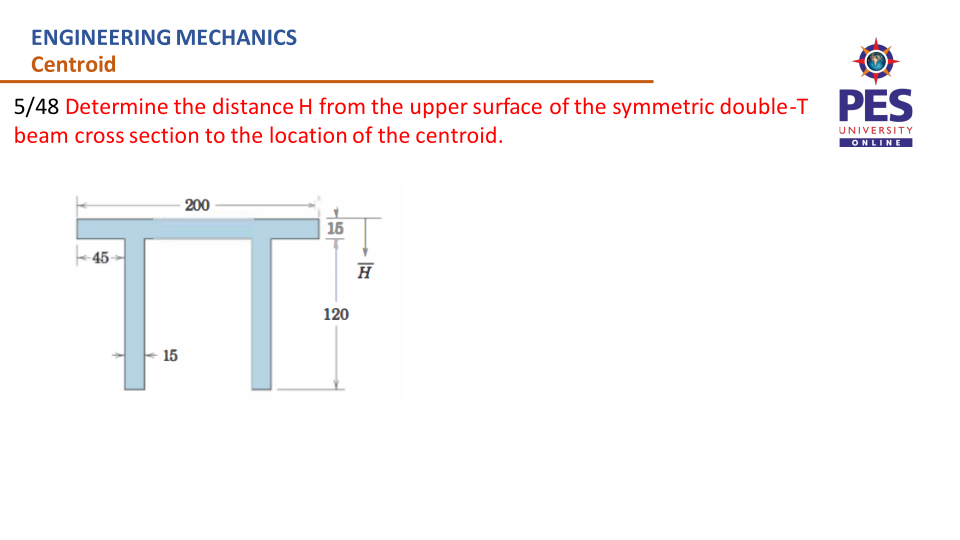
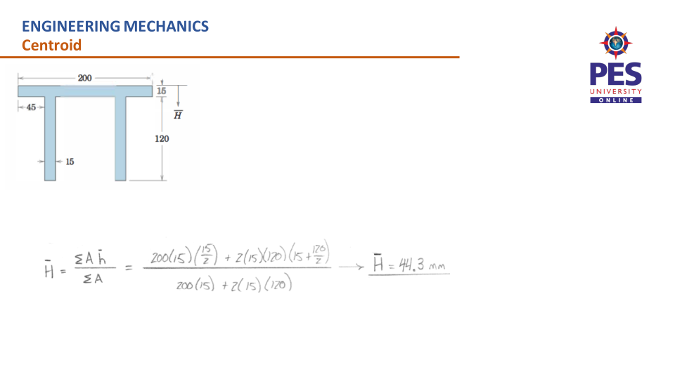
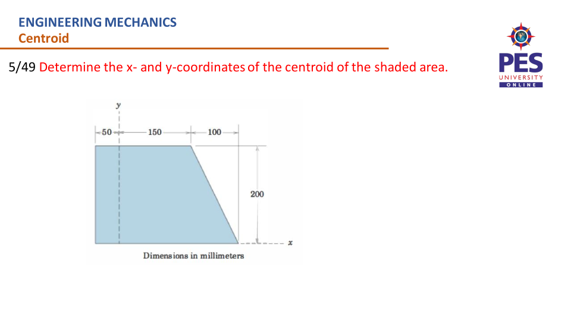
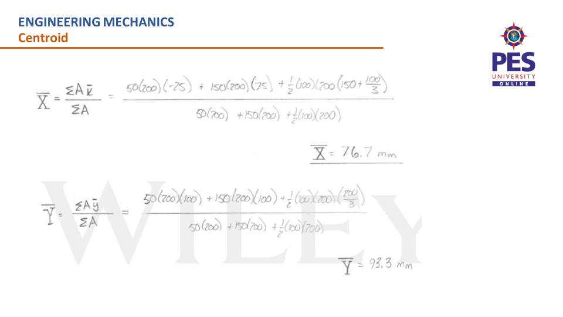
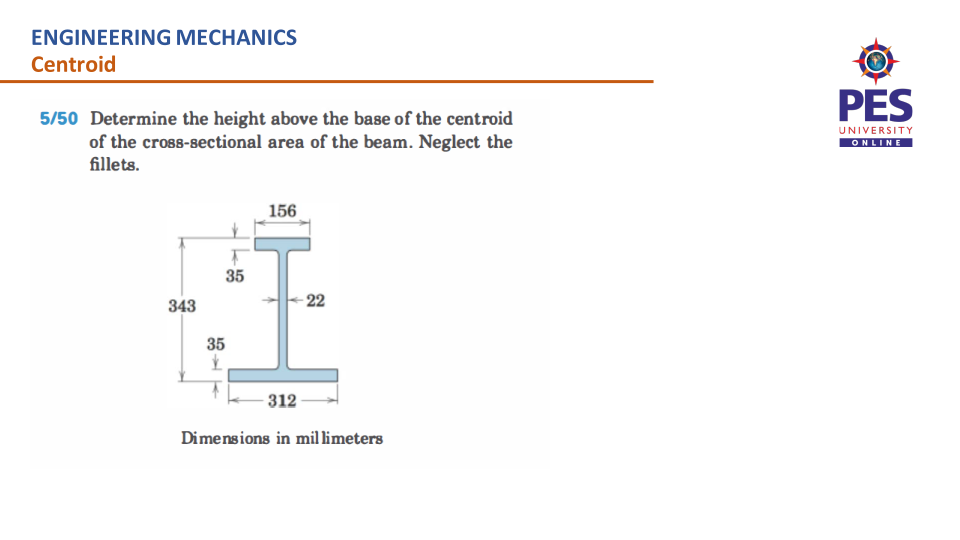
Important points and why
- Source slide page 1 (extracted text): ENGINEERING MECHANICS P. Ramchandra Department of Civil Engineering EV0000202 · EV0000203 · EV0000204
- Source slide page 2 (extracted text): ENGINEERING MECHANICS Centroid P. Ramchandra Department of Civil Engineering EV0000205 · EV0000206 · EV0000207
- Source slide page 3 (extracted text): ENGINEERING MECHANICS Centroid 5/47 Determine the coordinates of the centroid of the trapezoidal area shown. ## Page / slide 4 (OCR) ENGINEERING MECHANICS Centroid PES 5/47 UNIVERSITY ①A,=40(60)=2400mm ONLINE y 2 x,=20mm，g,=30mm 60 ②A2=(20)(60)=600mm 20=46.7mm mm x=40+ 3 2 60 =20mm 3 40mm>20mm 25.3mm EA 2400+600 =A=2400(30)+600(20) 28.0 mm ∑A 2400+600 EV0000208 · EV0000209 · EV0000210
- Source slide page 4: no readable `.slides.md` text was extracted. The original rendered page is included as the adjacent source figure for visual inspection. EV0000211 · EV0000212 · EV0000213
- Source slide page 5 (extracted text): ENGINEERING MECHANICS Centroid 5/48 Determine the distance H from the upper surface of the symmetric double-T beam cross section to the location of the centroid. ## Page / slide 6 (OCR) ENGINEERING MECHANICS Centroid PES 200 16 UNIVERSITY ONLINE 45 120 15 20015)(# + 2(1520)(5+2) ∑Ah H = 4.3 mm H ∑A 200(15) + Z( 15)(120) EV0000214 · EV0000215 · EV0000216
- Source slide page 6: no readable `.slides.md` text was extracted. The original rendered page is included as the adjacent source figure for visual inspection. EV0000217 · EV0000218 · EV0000219
- Source slide page 7 (extracted text): ENGINEERING MECHANICS Centroid 5/49 Determine the x- and y-coordinates of the centroid of the shaded area. ## Page / slide 8 (OCR) ENGINEERING MECHANICS Centroid PES 50（200)(-25)+ 150（20(5)+(100(20(50+) UNIVERSITY EAE ONLINE X EA 5D（200)+150（200)+（100X200) x=76.7mm 50（200（100)+1501200100)+（00X00） 700 EAg EA 50（200)+1501700)+（00700） =93.3mm ## Page / slide 9 (OCR) ENGINEERINGMECHANICS Centroid PES 5/50 Determine the height above the base of the centroid UNIVERSITY of the cross-sectional area of the beam. Neglect the ONLINE fillets. 156 35 ←22 343 35 312 Dimensions in mil limeters ## Page / slide 10 (OCR) ENGINEERING MECHANICS Centroid PES Comp. 2 Au mm UNIVERSITY mm mm ONLINE 312(35) 35 191100 2 273 273 (22) 35+ 1030000 2 156(35) 35 35+273+ 777 2 MA=22400 MAg =3 000 000 MA 3000000 133.9 mm ZA 22400 ## Page / slide 11 (OCR) ENGINEERINGMECHANICS Centroid PES 5/51 Determine the x-and y-coordinates of the centroid of theshadedarea. UNIVERSITY ONLINE 50 mm 20 mm 40 30 mm mm 40mm 60mm ## Page / slide 12 (OCR) ENGINEERING MECHANICS Centroid PES UNIVERSITY ONLINE 40mm ZAx 10mm 216(103) X 45.6 ZA mm 20mm 4740 30mm =ZAg 149.0(103) 40 60 =31.4 mm mm mm A 4740 Part A g Ax Ag (mm²) (mm) (mm) (mm3) (mm3) / 4000 50 20 200(10) 80(103) 100/3 40+ 40 2 2000 66.7(103) 106.7(103) 3 -(20²) 40 30 -50.3(10) -37.7(103) Totals 4740 216(103)149.0(103) ## Page / slide 13 (OCR) ENGINEERINGMECHANICS Centroid PES 5/55 Determine they-coordinateof thecentroid of the UNIVERSITY ONLINE shaded area. ## Page / slide 14 (OCR) ENGINEERING MECHANICS Centroid PES 5/55 Circular sector (full) ①: UNIVERSITY A 2 ONLINE 4a Sin 45° y a 3 T/4 A a 45 3T Trianguiar "hole A=h(2h) 2/4J2 a)-h（h) MAy_= α MA 4(a²-2h3 ↑a²_4h² 3 ## Page / slide 15 (OCR) ENGINEERING MECHANICS Centroid PES 5/56 Determine they-coordinateof thecentroidof the shaded area.The triangle isequilateral. UNIVERSITY ONLINE 20 40 60 4040 60 Dimensionsinmillimeters ## Page / slide 16 (OCR) ENGINEERING MECHANICS Centroid PES 5/56 UNIVERSITY ONLINE Equilateral MyA 822000 + 63.9mm ZA 12860 (mm 40 20 4o Component A mm y(mm) A mm Triangle 17320 57.7 106 Rectangle 3200 40 -128000 2semicircles3 1257 50,300 MA=12860 MyA=822000 ## Page / slide 17 (OCR) ENGINEERINGMECHANICS Centroid PES 5/57 Determine the x-and y-coordinates of the centroid UNIVERSITY oftheshadedarea. ONLINE 600 150 60° 400 60° 200 300 Dimensionsinmillimeters ## Page / slide 18 (OCR) ENGINEERING MECHANICS Centroid PES 600 UNIVERSITY ONLINE 60 200 300 SN60 400（G00(30)（150)(300+（50) T/3 EAY X EA 400l00)（150)² X=291mm Z00mm INSPECnON ## Page / slide 19 (OCR) ENGINEERINGMECHANICS Centroid PES 5/58 Determine the coordinates of the centroid of the UNIVERSITY shaded area. ONLINE 20 40 50 20 40 40 30 140 Dimensions in millimeters ## Page / slide 20 (OCR) ENGINEERING MECHANICS PES UNIVERSITY Centroid ONLINE Dim.inmm A,mm 2 y ,mm Ay,mm 2 2 g,mm Ag mm 4020K50 3 3 140（80)=11200 70 40 784x0 448×10 HO # 20 （40(0)=-1600 40 (80-53 3 3 3 4 =13.33 -21.3x10 -85.3x10 3 40 3 3 40(5)=-2000 8S 40 -170x10 -80x10 140 4(40) =157.0 3 800π 140+ 40 395×10 32000T 2 3T （30 4(30) 3 =157.7 140+ 40 -4S0T -Zlx10 -18000 3π 2 3 771x10 327×10 3 800 M 3 3 Ag 327×10 771×10 =37.Smm A X =88.7mm ZA 8700 EA 800 EV0000220
- Source slide page 8: no readable `.slides.md` text was extracted. The original rendered page is included as the adjacent source figure for visual inspection. EV0000221
- Source slide page 9: no readable `.slides.md` text was extracted. The original rendered page is included as the adjacent source figure for visual inspection. EV0000222
- Source slide page 10: no readable `.slides.md` text was extracted. The original rendered page is included as the adjacent source figure for visual inspection. EV0000223
- Source slide page 11: no readable `.slides.md` text was extracted. The original rendered page is included as the adjacent source figure for visual inspection. EV0000224
- Source slide page 12: no readable `.slides.md` text was extracted. The original rendered page is included as the adjacent source figure for visual inspection. EV0000225
- Source slide page 13: no readable `.slides.md` text was extracted. The original rendered page is included as the adjacent source figure for visual inspection. EV0000226
- Source slide page 14: no readable `.slides.md` text was extracted. The original rendered page is included as the adjacent source figure for visual inspection. EV0000227
- Source slide page 15: no readable `.slides.md` text was extracted. The original rendered page is included as the adjacent source figure for visual inspection. EV0000228
- Source slide page 16: no readable `.slides.md` text was extracted. The original rendered page is included as the adjacent source figure for visual inspection. EV0000229
- Source slide page 17: no readable `.slides.md` text was extracted. The original rendered page is included as the adjacent source figure for visual inspection. EV0000230
- Source slide page 18: no readable `.slides.md` text was extracted. The original rendered page is included as the adjacent source figure for visual inspection. EV0000231
- Source slide page 19: no readable `.slides.md` text was extracted. The original rendered page is included as the adjacent source figure for visual inspection. EV0000232
- Source slide page 20: no readable `.slides.md` text was extracted. The original rendered page is included as the adjacent source figure for visual inspection. EV0000233
- Source slide page 21 (extracted text): THANK YOU P. Ramchandra Department of Civil Engineering ramachandrap@pes.edu +91 9845347257 Extn 736 EV0000234
15Source slide deck: UE26ME142A Unit 3 Class 33 Lecture PPT
This entry preserves the complete slide deck titled UE26ME142A Unit 3 Class 33 Lecture PPT as searchable extracted page text and page-faithful rendered images. Its association with a particular video is not confirmed; it remains a separate topic under Engineering Mechanics 1, Unit_03, to avoid an unsupported match. EV0000235 · EV0000236
Graphs and diagrams


Important points and why
- Source slide page 1: no readable `.slides.md` text was extracted. The original rendered page is included as the adjacent source figure for visual inspection. EV0000235 · EV0000236 · EV0000237
- Source slide page 2 (extracted text): Engineering Mechanics Statics EIGHTH Edition SI Version J. L. Meriam and L. G. Kraige Unit 3 DISTRIBUTED FORCES Chapter 5 Centroid Copyright © 2012 by John Wiley & Sons, Inc. All rights reserved. S V Venkatesh - Engineering Mechanics – Unit 3 – Chapter 5 – Distributed forces EV0000238 · EV0000239 · EV0000240
- Source slide page 3 (extracted text): ENGINEERING MECHANICS STATICS Center of mass Center of gravity Principle or Body diagonal Diagonal Lamina Centroid - ẋ , ȳ Centroidal axis – xo, yo Reference axis – x, y S V Venkatesh - Engineering Mechanics Statics – Unit 3 – Chapter 5 – Distributed Forces EV0000241 · EV0000242 · EV0000243
- Source slide page 4 (extracted text): ENGINEERING MECHANICS STATICS S V Venkatesh - Engineering Mechanics Statics – Unit 3 – Chapter 5 – Distributed Forces EV0000244 · EV0000245 · EV0000246
- Source slide page 5 (extracted text): ENGINEERING MECHANICS STATICS Determine the Centroid for an “area of a circular sector”. Solution II. The area may also be covered by swinging a triangle of differential area about the vertex and through the total angle of the sector. This triangle, shown in the illustration, has an area dA = (r/2)(r dƟ), where higher- order terms are neglected. From the centroid of the triangular element of area is two-thirds of its altitude from its vertex, so that the x-coordinate to the centroid of the element is xc =2rcosƟ/3. Ax = ∫xc dA (r2α)x =-α ∫+α (2rcosƟ/3)(r/2)(r dƟ) = (2r3Sin α /3) x = (2r sin α) / (3 α) S V Venkatesh - Engineering Mechanics Statics – Unit 3 – Chapter 5 – Distributed Forces EV0000247 · EV0000248 · EV0000249
- Source slide page 6 (extracted text): ENGINEERING MECHANICS STATICS S V Venkatesh - Engineering Mechanics Statics – Unit 3 – Chapter 5 – Distributed Forces EV0000250 · EV0000251 · EV0000252
- Source slide page 7 (extracted text): ENGINEERING MECHANICS STATICS S V Venkatesh - Engineering Mechanics Statics – Unit 3 – Chapter 5 – Distributed Forces EV0000253 · EV0000254 · EV0000255
- Source slide page 8 (extracted text): ENGINEERING MECHANICS STATICS rmine the x and y - coordinates of the centroid of the shaded area. ΣA = 4000 + 2000 - ∏(202) = 4740 ΣA Ⴟ = 200(103) + 66.74(103) – 50.3(103) = 216(103) ΣA Ӯ = 80 (103) + 106.7(103) – 37.7(103) = 149.0(103) Ⴟ = ΣA Ⴟ / ΣA = 216(103) / 4740 = 45.60 mm Ӯ = ΣA Ӯ / ΣA = 149.0 (103) S V Venkatesh - Engineering Mechanics Statics/ 4740– Unit 3 – Chapter 5 – Distributed Forces EV0000256 · EV0000257 · EV0000258
- Source slide page 9 (extracted text): ENGINEERING MECHANICS STATICS S V Venkatesh - Engineering Mechanics Statics – Unit 3 – Chapter 5 – Distributed Forces EV0000259 · EV0000260 · EV0000261
- Source slide page 10 (extracted text): ENGINEERING MECHANICS STATICS S V Venkatesh - Engineering Mechanics Statics – Unit 3 – Chapter 5 – Distributed Forces EV0000262 · EV0000263 · EV0000264
- Source slide page 11 (extracted text): ENGINEERING MECHANICS STATICS S V Venkatesh - Engineering Mechanics Statics – Unit 3 – Chapter 5 – Distributed Forces EV0000265 · EV0000266 · EV0000267
- Source slide page 12 (extracted text): ENGINEERING MECHANICS STATICS S V Venkatesh - Engineering Mechanics Statics – Unit 3 – Chapter 5 – Distributed Forces EV0000268 · EV0000269 · EV0000270
- Source slide page 13 (extracted text): ENGINEERING MECHANICS STATICS S V Venkatesh - Engineering Mechanics Statics – Unit 3 – Chapter 5 – Distributed Forces EV0000271 · EV0000272 · EV0000273
- Source slide page 14 (extracted text): ENGINEERING MECHANICS STATICS S V Venkatesh - Engineering Mechanics Statics – Unit 3 – Chapter 5 – Distributed Forces EV0000274 · EV0000275 · EV0000276
- Source slide page 15 (extracted text): ENGINEERING MECHANICS STATICS S V Venkatesh - Engineering Mechanics Statics – Unit 3 – Chapter 5 – Distributed Forces ## Page / slide 16 (OCR) THANK YOU Dr. S V PES Venkatesh Civil Engineering Department of S & H UNIVERSITY CELEBRATING 5O YEARS EV0000277
- Source slide page 16: no readable `.slides.md` text was extracted. The original rendered page is included as the adjacent source figure for visual inspection. EV0000278
16Source slide deck: UE20CV101 UNIT 4 SESSION 2
This entry preserves the complete slide deck titled UE20CV101 UNIT 4 SESSION 2 as searchable extracted page text and page-faithful rendered images. Its association with a particular video is not confirmed; it remains a separate topic under Engineering Mechanics 1, Unit_03, to avoid an unsupported match. EV0000279 · EV0000280
Graphs and diagrams

Important points and why
- Source slide page 1 (extracted text): ENGINEERING MECHANICS - STATICS Rashmi B A Department of Civil Engineering EV0000279 · EV0000280 · EV0000281
- Source slide page 2 (extracted text): ENGINEERING MECHANICS - STATICS DISTRIBUTED FORCES Session- 2 Rashmi B A Department of Civil Engineering EV0000282 · EV0000283 · EV0000284
- Source slide page 3 (extracted text): ENGINEERING MECHANICS - STATICS Centroid Centroid of the area of a circular sector: 𝒙𝒄𝒅𝑨 Due to symmetry ഥ𝒚= 𝟎& ഥ𝒙= ----(1) 𝑨 Consider an element at a distance 𝑟𝑜from the centre O of a sector, radial width being 𝑑𝑟𝑜& bound by radii at 𝜃& (𝜃+ 𝑑𝜃) 𝑅2𝛼𝑑𝐴= 𝑟𝑜𝑑𝜃𝑑𝑟𝑜 𝑥𝑐= 𝑟𝑜𝑐𝑜𝑠𝜃 A= 𝑆𝑢𝑏𝑠𝑡𝑖𝑡𝑢𝑡𝑖𝑛𝑔𝑖𝑛𝑒𝑞𝑢𝑎𝑡𝑖𝑜𝑛1 2 +𝛼 𝑅3 𝑟𝑜cos(𝜃) 𝑟𝑜𝑑𝜃𝑑𝑟𝑜 2 𝑠𝑖𝑛𝛼 𝑅𝑟𝑜 𝑑𝑟𝑜𝑐𝑜𝑠𝜃𝑑𝜃ҧ𝑥= = −𝛼 0 3 𝐴 = 𝐴 𝐴 𝑅3 2 𝑠𝑖𝑛𝛼 2𝑅𝑠𝑖𝑛𝛼 3 = = 𝑅2 𝛼 3𝛼 𝟐𝑹𝒔𝒊𝒏𝜶 Here 𝛼is in radians. ഥ𝒙= & ഥ𝒚= 𝟎 𝟑𝜶 EV0000285 · EV0000286 · EV0000287
- Source slide page 4 (extracted text): ENGINEERING MECHANICS - STATICS Centroid Locate the centroid of the area of a semicircle 𝒚𝒄𝒅𝑨 Due to symmetry ഥ𝒙= 𝟎 & ഥ𝒚= ----(1) 𝑨 Consider an element at a distance 𝑟𝑜from the centre O of a semicircle, radial width being 𝑑𝑟𝑜& bound by radii at 𝜃& 𝜃+ 𝑑𝜃 𝜋𝑅2 𝑑𝐴= 𝑟𝑜𝑑𝜃𝑑𝑟𝑜 𝑦𝑐= 𝑟𝑜sin 𝜃 A= 𝑆𝑢𝑏𝑠𝑡𝑖𝑡𝑢𝑡𝑖𝑛𝑔𝑖𝑛𝑒𝑞𝑢𝑎𝑡𝑖𝑜𝑛1 2 2 2𝑅3 𝜋 2𝑅3 4𝑅 𝑟𝑜sin 𝜃𝑟𝑜𝑑𝜃𝑑𝑟𝑜 𝑅𝑟𝑜 𝑠𝑖𝑛𝜃𝑑𝜃𝑑𝑟𝑜 3 0 0 3 =ത𝑦= = = = 𝐴 𝜋𝑅2 3𝜋 𝐴 𝐴 2 𝟒𝑹 ഥ𝒙= 𝟎& ഥ𝒚= 𝟑𝝅 EV0000288 · EV0000289 · EV0000290
- Source slide page 5 (extracted text): ENGINEERING MECHANICS - STATICS Centroid y y 𝑏 ℎ ℎ h C ҧ𝑥= , ഥ𝑦= C ҧ𝑥= −𝑏 , ഥ𝑦= 2 2 2 2 x x b y x C ҧ𝑥= −𝑏 , ഥ𝑦= −ℎ 2 2 EV0000291 · EV0000292 · EV0000293
- Source slide page 6 (extracted text): ENGINEERING MECHANICS - STATICS Centroid y y ℎ ഥ𝑦= 𝑏 ℎ h h 3 , ഥ𝑦= ҧ𝑥= C C 3 3 x x b b y y x ℎ h C ҧ𝑥= −2𝑏 , ഥ𝑦= h ҧ𝑥= −2𝑏 , ഥ𝑦= −2ℎ 3 3 C 3 3 x b b EV0000294 · EV0000295 · EV0000296
- Source slide page 7 (extracted text): ENGINEERING MECHANICS - STATICS Centroid y y ҧ𝑥= 𝑅, ഥ𝑦= 𝑅 C C x ҧ𝑥= 0, ഥ𝑦= 0 R R x y y C x x R ҧ𝑥= −𝑅 , ഥ𝑦= 0 C R ഥ𝑦= 𝑅 ҧ𝑥= 0, EV0000297 · EV0000298 · EV0000299
- Source slide page 8 (extracted text): ENGINEERING MECHANICS - STATICS Centroid y 4𝑅 4𝑅 y ҧ𝑥= 𝑅, ഥ𝑦= ҧ𝑥= ഥ𝑦= 0 3𝜋 3𝜋, C x O R C O x y y O C x x C O ҧ𝑥= 𝑅, ഥ𝑦= −𝑅−4𝑅 ҧ𝑥= −𝑅−4𝑅 ഥ𝑦= 0 3𝜋 3𝜋, EV0000300 · EV0000301 · EV0000302
- Source slide page 9 (extracted text): ENGINEERING MECHANICS - STATICS Centroid y y O C x C x O 2𝑅𝑠𝑖𝑛𝛼 2𝑅𝑠𝑖𝑛𝛼 ҧ𝑥= 0 , ഥ𝑦= ҧ𝑥= , ഥ𝑦=0 3𝛼 3𝛼 EV0000303 · EV0000304 · EV0000305
- Source slide page 10 (extracted text): ENGINEERING MECHANICS - STATICS Centroid Composite Bodies And Figures; Approximations The area is divided into strips of width dx and variable height h. The area A of each strip, such as the one shown in red, is h dx and is multiplied by the coordinates 𝑥𝑐and 𝑦𝑐of its centroid to obtain the moments of the element of area. The sum of the moments for all strips divided by the total area of the strips will give the corresponding centroidal coordinate. A systematic tabulation of the results will permit an orderly evaluation of the total area σ 𝐴, the sums σ 𝐴𝑥𝑐and σ 𝐴𝑦𝑐, and the centroidal coordinates σ𝑖=1𝑖=𝑛𝑎𝑖𝑥𝑖 σ𝑖=1𝑖=𝑛𝑎𝑖𝑦𝑖 ҧ𝑥= ത𝑦= σ𝑖=1𝑖=𝑛𝑎𝑖= A σ𝑖=1𝑖=𝑛𝑎𝑖, σ𝑖=1𝑖=𝑛𝑎𝑖 EV0000306 · EV0000307 · EV0000308
- Source slide page 11 (extracted text): THANK YOU Rashmi B A Department of Civil Engineering rashmiba@pes.edu EV0000309 · EV0000310 · EV0000311
17Source slide deck: UE24CV141A Unit 3 Beams
This entry preserves the complete slide deck titled UE24CV141A Unit 3 Beams as searchable extracted page text and page-faithful rendered images. Its association with a particular video is not confirmed; it remains a separate topic under Engineering Mechanics 1, Unit_03, to avoid an unsupported match. EV0000366 · EV0000367
Graphs and diagrams


Important points and why
- Source slide page 1: no readable `.slides.md` text was extracted. The original rendered page is included as the adjacent source figure for visual inspection. EV0000366 · EV0000367 · EV0000368
- Source slide page 2 (extracted text): Engineering Mechanics Statics EIGHTH Edition SI Version J. L. Meriam and L. G. Kraige Unit 3 DISTRIBUTED FORCES Chapter 5 Beams external Effects Copyright © 2012 by John Wiley & Sons, Inc. All rights reserved. S V Venkatesh - Engineering Mechanics – Unit 3 – Chapter 5 – Distributed forces EV0000369 · EV0000370 · EV0000371
- Source slide page 3 (extracted text): ENGINEERING MECHANICS STATICS Types of Beams S V Venkatesh - Engineering Mechanics Statics – Unit 3 – Chapter 5 – Distributed Forces ## Page / slide 4 (OCR) ENGINEERINGMECHANICSSTATICS Types of PES loads UNIVERSITY CELEBRATING50YEARS w C D A B Figure5-19 JohnWiley&Sons,Inc.Allrightsreserved. S V Venkatesh - Engineering Mechanics Statics - Unit 3 - Chapter 5 - Distributed Forces EV0000372 · EV0000373 · EV0000374
- Source slide page 4: no readable `.slides.md` text was extracted. The original rendered page is included as the adjacent source figure for visual inspection. EV0000375
- Source slide page 5 (extracted text): ENGINEERING MECHANICS STATICS Types of loads S V Venkatesh - Engineering Mechanics Statics – Unit 3 – Chapter 5 – Distributed Forces ## Page / slide 6 (OCR) THANK YOU Dr. S V PES Venkatesh Civil Engineering Department of S & H UNIVERSITY CELEBRATING 5O YEARS EV0000376
- Source slide page 6: no readable `.slides.md` text was extracted. The original rendered page is included as the adjacent source figure for visual inspection. EV0000377
18Source slide deck: UE25CV141A Unit 3 Class 48 Lecture PPT
This entry preserves the complete slide deck titled UE25CV141A Unit 3 Class 48 Lecture PPT as searchable extracted page text and page-faithful rendered images. Its association with a particular video is not confirmed; it remains a separate topic under Engineering Mechanics 1, Unit_03, to avoid an unsupported match. EV0000378 · EV0000379
Graphs and diagrams


Important points and why
- Source slide page 1: no readable `.slides.md` text was extracted. The original rendered page is included as the adjacent source figure for visual inspection. EV0000378 · EV0000379 · EV0000380
- Source slide page 2 (extracted text): Engineering Mechanics Statics EIGHTH Edition SI Version J. L. Meriam and L. G. Kraige Unit 3 DISTRIBUTED FORCES Chapter 5 Beams external Effects Copyright © 2012 by John Wiley & Sons, Inc. All rights reserved. S V Venkatesh - Engineering Mechanics – Unit 3 – Chapter 5 – Distributed forces EV0000381 · EV0000382 · EV0000383
- Source slide page 3 (extracted text): ENGINEERING MECHANICS STATICS Types of Beams S V Venkatesh - Engineering Mechanics Statics – Unit 3 – Chapter 5 – Distributed Forces ## Page / slide 4 (OCR) ENGINEERINGMECHANICSSTATICS Types of PES loads UNIVERSITY CELEBRATING50YEARS w C D A B Figure5-19 JohnWiley&Sons,Inc.Allrightsreserved. S V Venkatesh - Engineering Mechanics Statics - Unit 3 - Chapter 5 - Distributed Forces EV0000384 · EV0000385 · EV0000386
- Source slide page 4: no readable `.slides.md` text was extracted. The original rendered page is included as the adjacent source figure for visual inspection. EV0000387
- Source slide page 5 (extracted text): ENGINEERING MECHANICS STATICS Types of loads S V Venkatesh - Engineering Mechanics Statics – Unit 3 – Chapter 5 – Distributed Forces ## Page / slide 6 (OCR) THANK YOU Dr. S V PES Venkatesh Civil Engineering Department of S & H UNIVERSITY CELEBRATING 5O YEARS EV0000388
- Source slide page 6: no readable `.slides.md` text was extracted. The original rendered page is included as the adjacent source figure for visual inspection. EV0000389
19Source slide deck: UE20CV101 UNIT 3 ONLINE SESSION 8
This entry preserves the complete slide deck titled UE20CV101 UNIT 3 ONLINE SESSION 8 as searchable extracted page text and page-faithful rendered images. Its association with a particular video is not confirmed; it remains a separate topic under Engineering Mechanics 1, Unit_03, to avoid an unsupported match. EV0000390 · EV0000391
Graphs and diagrams
Important points and why
- Source slide page 1 (extracted text): ENGINEERING MECANICS Rashmi B A Department of Civil Engineering EV0000390 · EV0000391 · EV0000392
- Source slide page 2 (extracted text): ENGINEERING MECANICS Beams Rashmi B A Department of Civil Engineering EV0000393 · EV0000394 · EV0000395
- Source slide page 3 (extracted text): ENGINEERING MECHANICS BEAMS 5/101 Determine the reactions at A and B for the beam subjected to the uniform load distribution. EV0000396 · EV0000397 · EV0000398
- Source slide page 4 (extracted text): ENGINEERING MECHANICS BEAMS R= w. l R= 6 X (300/1000)= 1.8 KN Applying conditions of equilibrium: Ax = 0 FBD of beam AB 1.8 KN B A Ax 150mm 150mm 300mm Ay RB EV0000399 · EV0000400 · EV0000401
- Source slide page 5 (extracted text): ENGINEERING MECHANICS Beams 5/103. Calculate the reactions at A and B for the beam loaded as shown. EV0000402 · EV0000403 · EV0000404
- Source slide page 6 (extracted text): ENGINEERING MECHANICS Beams R1= w. l = 400 X (8)= 3.2 KN 2 l/2 w.r.t A= 8/2 = 4m 1 R2 = w. l/2 = 400 X (6)/2= 1.2 KN l/3 w.r.t A = 6/2= 2m Applying conditions of equilibrium: FBD of beam AB Ax = 0 R2= 1.2 KN R1= 3.2 KN B A Ax 2 m 3m 1m 4 m Ay RB EV0000405 · EV0000406 · EV0000407
- Source slide page 7 (extracted text): THANK YOU Rashmi B A Department of Civil Engineering rashmiba@pes.edu EV0000408 · EV0000409 · EV0000410
20Source slide deck: UE20CV101 UNIT 3 ONLINE SESSION 9
This entry preserves the complete slide deck titled UE20CV101 UNIT 3 ONLINE SESSION 9 as searchable extracted page text and page-faithful rendered images. Its association with a particular video is not confirmed; it remains a separate topic under Engineering Mechanics 1, Unit_03, to avoid an unsupported match. EV0000411 · EV0000412
Graphs and diagrams


Important points and why
- Source slide page 1 (extracted text): ENGINEERING MECHANICS Rashmi B A Department of Civil Engineering EV0000411 · EV0000412 · EV0000413
- Source slide page 2 (extracted text): ENGINEERING MECHANICS STRUCTURES Rashmi B A Department of Civil Engineering EV0000414 · EV0000415 · EV0000416
- Source slide page 3 (extracted text): ENGINEERING MECHANICS BEAMS 5/105. Find the reaction at A due to the uniform loading and the applied couple. EV0000417 · EV0000418 · EV0000419
- Source slide page 4 (extracted text): ENGINEERING MECHANICS BEAMS RA= 6 KN Up MA= 3 KN.m CW EV0000420 · EV0000421 · EV0000422
- Source slide page 5 (extracted text): ENGINEERING MECHANICS BEAMS 5/116. For the beam and loading shown, determine the magnitude of the force F for which the vertical reactions at A and B are equal. With this value of F, compute the magnitude of the pin reaction at A. EV0000423 · EV0000424 · EV0000425
- Source slide page 6 (extracted text): ENGINEERING MECHANICS BEAMS F = 10.36 KN RA= 18.29 KN EV0000426 · EV0000427 · EV0000428
- Source slide page 7 (extracted text): THANK YOU Rashmi B A Department of Civil Engineering rashmiba@pes.edu EV0000429 · EV0000430 · EV0000431
21Source slide deck: UE26ME142A UNIT 3 ONLINE SESSION 41
This entry preserves the complete slide deck titled UE26ME142A UNIT 3 ONLINE SESSION 41 as searchable extracted page text and page-faithful rendered images. Its association with a particular video is not confirmed; it remains a separate topic under Engineering Mechanics 1, Unit_03, to avoid an unsupported match. EV0000432 · EV0000433
Graphs and diagrams


Important points and why
- Source slide page 1 (extracted text): ENGINEERING MECHANICS Rashmi B A Department of Civil Engineering EV0000432 · EV0000433 · EV0000434
- Source slide page 2 (extracted text): ENGINEERING MECHANICS STRUCTURES Rashmi B A Department of Civil Engineering EV0000435 · EV0000436 · EV0000437
- Source slide page 3 (extracted text): ENGINEERING MECHANICS Beams 5/107 Determine the reactions at A and B for the beam loaded as shown. 15KN-m EV0000438 · EV0000439 · EV0000440
- Source slide page 4 (extracted text): ENGINEERING MECHANICS BEAMS R= w. l R= 18 X (4)= 72 KN Applying conditions of equilibrium: Ax = 0 FBD of beam AB - 15 + ( RB x 4) - (72 x (2+2+2)) = 0 72KN RB = 111.75 KN B A + + -72 = 0Ax AY RB 2 m 2 m 2 m 2 m = 39.75KN RB AY Ay EV0000441 · EV0000442 · EV0000443
- Source slide page 5 (extracted text): ENGINEERING MECHANICS Beams 5/109. Determine the reactions at A, B, and D for the pair of beams connected by the ideal pin at C and subjected to the concentrated and distributed loads. EV0000444 · EV0000445 · EV0000446
- Source slide page 6 (extracted text): ENGINEERING MECHANICS Beams AX = 0 BY = 29.4KN AY = 12.96KN DY = 2.67KN EV0000447 · EV0000448 · EV0000449
- Source slide page 7 (extracted text): THANK YOU Rashmi B A Department of Civil Engineering rashmiba@pes.edu EV0000450 · EV0000451 · EV0000452
ASymbol glossary
| Symbol | Name | Meaning | Appears in |
|---|
BSources, coverage and gaps
| Source | Path | Use |
|---|---|---|
| Official unit catalogue | https://huggingface.co/buckets/alvin3y10/data/tree/pesuc/PESU_Materials/units.json | Official course/unit title and index. |
| CLASS 33 Introduction to Centroid transcript (JSON) | https://huggingface.co/buckets/alvin3y10/data/tree/pesuc/PESU_Materials/Sem-1/UE26ME142A_Engineering_Mechanics_1/Unit_03/AV_Summaries/033_CLASS_33_Introduction_to_Centroid__67dd96fa80cc7e7c.transcript.json | Full JSON sidecar. Normalized text similarity to canonical JSON: 1.0000; only the JSON segmentation supplies the displayed timestamps. |
| CLASS 33 Introduction to Centroid transcript (Markdown) | https://huggingface.co/buckets/alvin3y10/data/tree/pesuc/PESU_Materials/Sem-1/UE26ME142A_Engineering_Mechanics_1/Unit_03/AV_Summaries/033_CLASS_33_Introduction_to_Centroid__67dd96fa80cc7e7c.transcript.md | Full Markdown sidecar. Normalized text similarity to canonical JSON: 1.0000; only the JSON segmentation supplies the displayed timestamps. |
| CLASS 33 Introduction to Centroid transcript (plain text) | https://huggingface.co/buckets/alvin3y10/data/tree/pesuc/PESU_Materials/Sem-1/UE26ME142A_Engineering_Mechanics_1/Unit_03/AV_Summaries/033_CLASS_33_Introduction_to_Centroid__67dd96fa80cc7e7c.transcript.txt | Full plain text sidecar. Normalized text similarity to canonical JSON: 0.9993; only the JSON segmentation supplies the displayed timestamps. |
| CLASS 33 Introduction to Centroid transcript (SRT) | https://huggingface.co/buckets/alvin3y10/data/tree/pesuc/PESU_Materials/Sem-1/UE26ME142A_Engineering_Mechanics_1/Unit_03/AV_Summaries/033_CLASS_33_Introduction_to_Centroid__67dd96fa80cc7e7c.srt | Full SRT sidecar. Normalized text similarity to canonical JSON: 1.0000; only the JSON segmentation supplies the displayed timestamps. |
| CLASS 34 Location of the Centroid of a Sector & Semicircular Lamina transcript (JSON) | https://huggingface.co/buckets/alvin3y10/data/tree/pesuc/PESU_Materials/Sem-1/UE26ME142A_Engineering_Mechanics_1/Unit_03/AV_Summaries/034_CLASS_34_Location_of_the_Centroid_of_a_Sector_Semicircular_Lamina__3bf50905d5d6aee5.transcript.json | Full JSON sidecar. Normalized text similarity to canonical JSON: 1.0000; only the JSON segmentation supplies the displayed timestamps. |
| CLASS 34 Location of the Centroid of a Sector & Semicircular Lamina transcript (Markdown) | https://huggingface.co/buckets/alvin3y10/data/tree/pesuc/PESU_Materials/Sem-1/UE26ME142A_Engineering_Mechanics_1/Unit_03/AV_Summaries/034_CLASS_34_Location_of_the_Centroid_of_a_Sector_Semicircular_Lamina__3bf50905d5d6aee5.transcript.md | Full Markdown sidecar. Normalized text similarity to canonical JSON: 1.0000; only the JSON segmentation supplies the displayed timestamps. |
| CLASS 34 Location of the Centroid of a Sector & Semicircular Lamina transcript (plain text) | https://huggingface.co/buckets/alvin3y10/data/tree/pesuc/PESU_Materials/Sem-1/UE26ME142A_Engineering_Mechanics_1/Unit_03/AV_Summaries/034_CLASS_34_Location_of_the_Centroid_of_a_Sector_Semicircular_Lamina__3bf50905d5d6aee5.transcript.txt | Full plain text sidecar. Normalized text similarity to canonical JSON: 0.9984; only the JSON segmentation supplies the displayed timestamps. |
| CLASS 34 Location of the Centroid of a Sector & Semicircular Lamina transcript (SRT) | https://huggingface.co/buckets/alvin3y10/data/tree/pesuc/PESU_Materials/Sem-1/UE26ME142A_Engineering_Mechanics_1/Unit_03/AV_Summaries/034_CLASS_34_Location_of_the_Centroid_of_a_Sector_Semicircular_Lamina__3bf50905d5d6aee5.srt | Full SRT sidecar. Normalized text similarity to canonical JSON: 1.0000; only the JSON segmentation supplies the displayed timestamps. |
| CLASS 36 Centroid_ Numerical transcript (JSON) | https://huggingface.co/buckets/alvin3y10/data/tree/pesuc/PESU_Materials/Sem-1/UE26ME142A_Engineering_Mechanics_1/Unit_03/AV_Summaries/035_CLASS_36_Centroid__Numerical__8d2e6c9175d9d883.transcript.json | Full JSON sidecar. Normalized text similarity to canonical JSON: 1.0000; only the JSON segmentation supplies the displayed timestamps. |
| CLASS 36 Centroid_ Numerical transcript (Markdown) | https://huggingface.co/buckets/alvin3y10/data/tree/pesuc/PESU_Materials/Sem-1/UE26ME142A_Engineering_Mechanics_1/Unit_03/AV_Summaries/035_CLASS_36_Centroid__Numerical__8d2e6c9175d9d883.transcript.md | Full Markdown sidecar. Normalized text similarity to canonical JSON: 1.0000; only the JSON segmentation supplies the displayed timestamps. |
| CLASS 36 Centroid_ Numerical transcript (plain text) | https://huggingface.co/buckets/alvin3y10/data/tree/pesuc/PESU_Materials/Sem-1/UE26ME142A_Engineering_Mechanics_1/Unit_03/AV_Summaries/035_CLASS_36_Centroid__Numerical__8d2e6c9175d9d883.transcript.txt | Full plain text sidecar. Normalized text similarity to canonical JSON: 0.9993; only the JSON segmentation supplies the displayed timestamps. |
| CLASS 36 Centroid_ Numerical transcript (SRT) | https://huggingface.co/buckets/alvin3y10/data/tree/pesuc/PESU_Materials/Sem-1/UE26ME142A_Engineering_Mechanics_1/Unit_03/AV_Summaries/035_CLASS_36_Centroid__Numerical__8d2e6c9175d9d883.srt | Full SRT sidecar. Normalized text similarity to canonical JSON: 1.0000; only the JSON segmentation supplies the displayed timestamps. |
| CLASS 35 Centroid_ Numerical transcript (JSON) | https://huggingface.co/buckets/alvin3y10/data/tree/pesuc/PESU_Materials/Sem-1/UE26ME142A_Engineering_Mechanics_1/Unit_03/AV_Summaries/036_CLASS_35_Centroid__Numerical__6bf222208dbdadf5.transcript.json | Full JSON sidecar. Normalized text similarity to canonical JSON: 1.0000; only the JSON segmentation supplies the displayed timestamps. |
| CLASS 35 Centroid_ Numerical transcript (Markdown) | https://huggingface.co/buckets/alvin3y10/data/tree/pesuc/PESU_Materials/Sem-1/UE26ME142A_Engineering_Mechanics_1/Unit_03/AV_Summaries/036_CLASS_35_Centroid__Numerical__6bf222208dbdadf5.transcript.md | Full Markdown sidecar. Normalized text similarity to canonical JSON: 1.0000; only the JSON segmentation supplies the displayed timestamps. |
| CLASS 35 Centroid_ Numerical transcript (plain text) | https://huggingface.co/buckets/alvin3y10/data/tree/pesuc/PESU_Materials/Sem-1/UE26ME142A_Engineering_Mechanics_1/Unit_03/AV_Summaries/036_CLASS_35_Centroid__Numerical__6bf222208dbdadf5.transcript.txt | Full plain text sidecar. Normalized text similarity to canonical JSON: 0.9991; only the JSON segmentation supplies the displayed timestamps. |
| CLASS 35 Centroid_ Numerical transcript (SRT) | https://huggingface.co/buckets/alvin3y10/data/tree/pesuc/PESU_Materials/Sem-1/UE26ME142A_Engineering_Mechanics_1/Unit_03/AV_Summaries/036_CLASS_35_Centroid__Numerical__6bf222208dbdadf5.srt | Full SRT sidecar. Normalized text similarity to canonical JSON: 1.0000; only the JSON segmentation supplies the displayed timestamps. |
| CLASS 29 Introduction to Beams transcript (JSON) | https://huggingface.co/buckets/alvin3y10/data/tree/pesuc/PESU_Materials/Sem-1/UE26ME142A_Engineering_Mechanics_1/Unit_03/AV_Summaries/039_CLASS_29_Introduction_to_Beams__719328349228b241.transcript.json | Full JSON sidecar. Normalized text similarity to canonical JSON: 1.0000; only the JSON segmentation supplies the displayed timestamps. |
| CLASS 29 Introduction to Beams transcript (Markdown) | https://huggingface.co/buckets/alvin3y10/data/tree/pesuc/PESU_Materials/Sem-1/UE26ME142A_Engineering_Mechanics_1/Unit_03/AV_Summaries/039_CLASS_29_Introduction_to_Beams__719328349228b241.transcript.md | Full Markdown sidecar. Normalized text similarity to canonical JSON: 1.0000; only the JSON segmentation supplies the displayed timestamps. |
| CLASS 29 Introduction to Beams transcript (plain text) | https://huggingface.co/buckets/alvin3y10/data/tree/pesuc/PESU_Materials/Sem-1/UE26ME142A_Engineering_Mechanics_1/Unit_03/AV_Summaries/039_CLASS_29_Introduction_to_Beams__719328349228b241.transcript.txt | Full plain text sidecar. Normalized text similarity to canonical JSON: 0.9991; only the JSON segmentation supplies the displayed timestamps. |
| CLASS 29 Introduction to Beams transcript (SRT) | https://huggingface.co/buckets/alvin3y10/data/tree/pesuc/PESU_Materials/Sem-1/UE26ME142A_Engineering_Mechanics_1/Unit_03/AV_Summaries/039_CLASS_29_Introduction_to_Beams__719328349228b241.srt | Full SRT sidecar. Normalized text similarity to canonical JSON: 1.0000; only the JSON segmentation supplies the displayed timestamps. |
| CLASS 30 Beams_Numerical transcript (JSON) | https://huggingface.co/buckets/alvin3y10/data/tree/pesuc/PESU_Materials/Sem-1/UE26ME142A_Engineering_Mechanics_1/Unit_03/AV_Summaries/040_CLASS_30_Beams_Numerical__eba902d8efe49ef0.transcript.json | Full JSON sidecar. Normalized text similarity to canonical JSON: 1.0000; only the JSON segmentation supplies the displayed timestamps. |
| CLASS 30 Beams_Numerical transcript (Markdown) | https://huggingface.co/buckets/alvin3y10/data/tree/pesuc/PESU_Materials/Sem-1/UE26ME142A_Engineering_Mechanics_1/Unit_03/AV_Summaries/040_CLASS_30_Beams_Numerical__eba902d8efe49ef0.transcript.md | Full Markdown sidecar. Normalized text similarity to canonical JSON: 1.0000; only the JSON segmentation supplies the displayed timestamps. |
| CLASS 30 Beams_Numerical transcript (plain text) | https://huggingface.co/buckets/alvin3y10/data/tree/pesuc/PESU_Materials/Sem-1/UE26ME142A_Engineering_Mechanics_1/Unit_03/AV_Summaries/040_CLASS_30_Beams_Numerical__eba902d8efe49ef0.transcript.txt | Full plain text sidecar. Normalized text similarity to canonical JSON: 0.9995; only the JSON segmentation supplies the displayed timestamps. |
| CLASS 30 Beams_Numerical transcript (SRT) | https://huggingface.co/buckets/alvin3y10/data/tree/pesuc/PESU_Materials/Sem-1/UE26ME142A_Engineering_Mechanics_1/Unit_03/AV_Summaries/040_CLASS_30_Beams_Numerical__eba902d8efe49ef0.srt | Full SRT sidecar. Normalized text similarity to canonical JSON: 1.0000; only the JSON segmentation supplies the displayed timestamps. |
| CLASS 31 Beams_Numerical transcript (JSON) | https://huggingface.co/buckets/alvin3y10/data/tree/pesuc/PESU_Materials/Sem-1/UE26ME142A_Engineering_Mechanics_1/Unit_03/AV_Summaries/041_CLASS_31_Beams_Numerical__2ddd1ae1ec9c2c35.transcript.json | Full JSON sidecar. Normalized text similarity to canonical JSON: 1.0000; only the JSON segmentation supplies the displayed timestamps. |
| CLASS 31 Beams_Numerical transcript (Markdown) | https://huggingface.co/buckets/alvin3y10/data/tree/pesuc/PESU_Materials/Sem-1/UE26ME142A_Engineering_Mechanics_1/Unit_03/AV_Summaries/041_CLASS_31_Beams_Numerical__2ddd1ae1ec9c2c35.transcript.md | Full Markdown sidecar. Normalized text similarity to canonical JSON: 1.0000; only the JSON segmentation supplies the displayed timestamps. |
| CLASS 31 Beams_Numerical transcript (plain text) | https://huggingface.co/buckets/alvin3y10/data/tree/pesuc/PESU_Materials/Sem-1/UE26ME142A_Engineering_Mechanics_1/Unit_03/AV_Summaries/041_CLASS_31_Beams_Numerical__2ddd1ae1ec9c2c35.transcript.txt | Full plain text sidecar. Normalized text similarity to canonical JSON: 0.9994; only the JSON segmentation supplies the displayed timestamps. |
| CLASS 31 Beams_Numerical transcript (SRT) | https://huggingface.co/buckets/alvin3y10/data/tree/pesuc/PESU_Materials/Sem-1/UE26ME142A_Engineering_Mechanics_1/Unit_03/AV_Summaries/041_CLASS_31_Beams_Numerical__2ddd1ae1ec9c2c35.srt | Full SRT sidecar. Normalized text similarity to canonical JSON: 1.0000; only the JSON segmentation supplies the displayed timestamps. |
| CLASS 41.1 Beams_Numerical transcript (JSON) | https://huggingface.co/buckets/alvin3y10/data/tree/pesuc/PESU_Materials/Sem-1/UE26ME142A_Engineering_Mechanics_1/Unit_03/AV_Summaries/041_CLASS_41.1_Beams_Numerical__147becf694d21417.transcript.json | Full JSON sidecar. Normalized text similarity to canonical JSON: 1.0000; only the JSON segmentation supplies the displayed timestamps. |
| CLASS 41.1 Beams_Numerical transcript (Markdown) | https://huggingface.co/buckets/alvin3y10/data/tree/pesuc/PESU_Materials/Sem-1/UE26ME142A_Engineering_Mechanics_1/Unit_03/AV_Summaries/041_CLASS_41.1_Beams_Numerical__147becf694d21417.transcript.md | Full Markdown sidecar. Normalized text similarity to canonical JSON: 1.0000; only the JSON segmentation supplies the displayed timestamps. |
| CLASS 41.1 Beams_Numerical transcript (plain text) | https://huggingface.co/buckets/alvin3y10/data/tree/pesuc/PESU_Materials/Sem-1/UE26ME142A_Engineering_Mechanics_1/Unit_03/AV_Summaries/041_CLASS_41.1_Beams_Numerical__147becf694d21417.transcript.txt | Full plain text sidecar. Normalized text similarity to canonical JSON: 0.9993; only the JSON segmentation supplies the displayed timestamps. |
| CLASS 41.1 Beams_Numerical transcript (SRT) | https://huggingface.co/buckets/alvin3y10/data/tree/pesuc/PESU_Materials/Sem-1/UE26ME142A_Engineering_Mechanics_1/Unit_03/AV_Summaries/041_CLASS_41.1_Beams_Numerical__147becf694d21417.srt | Full SRT sidecar. Normalized text similarity to canonical JSON: 1.0000; only the JSON segmentation supplies the displayed timestamps. |
| UE25CV141A_Unit 3_Class 53_AVSummary transcript (JSON) | https://huggingface.co/buckets/alvin3y10/data/tree/pesuc/PESU_Materials/Sem-1/UE26ME142A_Engineering_Mechanics_1/Unit_03/AV_Summaries/042_UE25CV141A_Unit_3_Class_53_AVSummary__fb2a14ea9c91ccb3.transcript.json | Full JSON sidecar. Normalized text similarity to canonical JSON: 1.0000; only the JSON segmentation supplies the displayed timestamps. |
| UE25CV141A_Unit 3_Class 53_AVSummary transcript (Markdown) | https://huggingface.co/buckets/alvin3y10/data/tree/pesuc/PESU_Materials/Sem-1/UE26ME142A_Engineering_Mechanics_1/Unit_03/AV_Summaries/042_UE25CV141A_Unit_3_Class_53_AVSummary__fb2a14ea9c91ccb3.transcript.md | Full Markdown sidecar. Normalized text similarity to canonical JSON: 1.0000; only the JSON segmentation supplies the displayed timestamps. |
| UE25CV141A_Unit 3_Class 53_AVSummary transcript (plain text) | https://huggingface.co/buckets/alvin3y10/data/tree/pesuc/PESU_Materials/Sem-1/UE26ME142A_Engineering_Mechanics_1/Unit_03/AV_Summaries/042_UE25CV141A_Unit_3_Class_53_AVSummary__fb2a14ea9c91ccb3.transcript.txt | Full plain text sidecar. Normalized text similarity to canonical JSON: 0.9996; only the JSON segmentation supplies the displayed timestamps. |
| UE25CV141A_Unit 3_Class 53_AVSummary transcript (SRT) | https://huggingface.co/buckets/alvin3y10/data/tree/pesuc/PESU_Materials/Sem-1/UE26ME142A_Engineering_Mechanics_1/Unit_03/AV_Summaries/042_UE25CV141A_Unit_3_Class_53_AVSummary__fb2a14ea9c91ccb3.srt | Full SRT sidecar. Normalized text similarity to canonical JSON: 1.0000; only the JSON segmentation supplies the displayed timestamps. |
| UE25CV141A_Unit 3_Class 54_AV Summary transcript (JSON) | https://huggingface.co/buckets/alvin3y10/data/tree/pesuc/PESU_Materials/Sem-1/UE26ME142A_Engineering_Mechanics_1/Unit_03/AV_Summaries/043_UE25CV141A_Unit_3_Class_54_AV_Summary__912c9dc62b19aae7.transcript.json | Full JSON sidecar. Normalized text similarity to canonical JSON: 1.0000; only the JSON segmentation supplies the displayed timestamps. |
| UE25CV141A_Unit 3_Class 54_AV Summary transcript (Markdown) | https://huggingface.co/buckets/alvin3y10/data/tree/pesuc/PESU_Materials/Sem-1/UE26ME142A_Engineering_Mechanics_1/Unit_03/AV_Summaries/043_UE25CV141A_Unit_3_Class_54_AV_Summary__912c9dc62b19aae7.transcript.md | Full Markdown sidecar. Normalized text similarity to canonical JSON: 1.0000; only the JSON segmentation supplies the displayed timestamps. |
| UE25CV141A_Unit 3_Class 54_AV Summary transcript (plain text) | https://huggingface.co/buckets/alvin3y10/data/tree/pesuc/PESU_Materials/Sem-1/UE26ME142A_Engineering_Mechanics_1/Unit_03/AV_Summaries/043_UE25CV141A_Unit_3_Class_54_AV_Summary__912c9dc62b19aae7.transcript.txt | Full plain text sidecar. Normalized text similarity to canonical JSON: 0.9993; only the JSON segmentation supplies the displayed timestamps. |
| UE25CV141A_Unit 3_Class 54_AV Summary transcript (SRT) | https://huggingface.co/buckets/alvin3y10/data/tree/pesuc/PESU_Materials/Sem-1/UE26ME142A_Engineering_Mechanics_1/Unit_03/AV_Summaries/043_UE25CV141A_Unit_3_Class_54_AV_Summary__912c9dc62b19aae7.srt | Full SRT sidecar. Normalized text similarity to canonical JSON: 1.0000; only the JSON segmentation supplies the displayed timestamps. |
| UE25CV141A_Unit 3_Class 55_AV Summary transcript (JSON) | https://huggingface.co/buckets/alvin3y10/data/tree/pesuc/PESU_Materials/Sem-1/UE26ME142A_Engineering_Mechanics_1/Unit_03/AV_Summaries/044_UE25CV141A_Unit_3_Class_55_AV_Summary__292b04ba1e28ea04.transcript.json | Full JSON sidecar. Normalized text similarity to canonical JSON: 1.0000; only the JSON segmentation supplies the displayed timestamps. |
| UE25CV141A_Unit 3_Class 55_AV Summary transcript (Markdown) | https://huggingface.co/buckets/alvin3y10/data/tree/pesuc/PESU_Materials/Sem-1/UE26ME142A_Engineering_Mechanics_1/Unit_03/AV_Summaries/044_UE25CV141A_Unit_3_Class_55_AV_Summary__292b04ba1e28ea04.transcript.md | Full Markdown sidecar. Normalized text similarity to canonical JSON: 1.0000; only the JSON segmentation supplies the displayed timestamps. |
| UE25CV141A_Unit 3_Class 55_AV Summary transcript (plain text) | https://huggingface.co/buckets/alvin3y10/data/tree/pesuc/PESU_Materials/Sem-1/UE26ME142A_Engineering_Mechanics_1/Unit_03/AV_Summaries/044_UE25CV141A_Unit_3_Class_55_AV_Summary__292b04ba1e28ea04.transcript.txt | Full plain text sidecar. Normalized text similarity to canonical JSON: 0.9995; only the JSON segmentation supplies the displayed timestamps. |
| UE25CV141A_Unit 3_Class 55_AV Summary transcript (SRT) | https://huggingface.co/buckets/alvin3y10/data/tree/pesuc/PESU_Materials/Sem-1/UE26ME142A_Engineering_Mechanics_1/Unit_03/AV_Summaries/044_UE25CV141A_Unit_3_Class_55_AV_Summary__292b04ba1e28ea04.srt | Full SRT sidecar. Normalized text similarity to canonical JSON: 1.0000; only the JSON segmentation supplies the displayed timestamps. |
| UE26ME142A_Unit 3_Class 44.1_AV Summary transcript (JSON) | https://huggingface.co/buckets/alvin3y10/data/tree/pesuc/PESU_Materials/Sem-1/UE26ME142A_Engineering_Mechanics_1/Unit_03/AV_Summaries/044_UE26ME142A_Unit_3_Class_44.1_AV_Summary__02d4870a880196ad.transcript.json | Full JSON sidecar. Normalized text similarity to canonical JSON: 1.0000; only the JSON segmentation supplies the displayed timestamps. |
| UE26ME142A_Unit 3_Class 44.1_AV Summary transcript (Markdown) | https://huggingface.co/buckets/alvin3y10/data/tree/pesuc/PESU_Materials/Sem-1/UE26ME142A_Engineering_Mechanics_1/Unit_03/AV_Summaries/044_UE26ME142A_Unit_3_Class_44.1_AV_Summary__02d4870a880196ad.transcript.md | Full Markdown sidecar. Normalized text similarity to canonical JSON: 1.0000; only the JSON segmentation supplies the displayed timestamps. |
| UE26ME142A_Unit 3_Class 44.1_AV Summary transcript (plain text) | https://huggingface.co/buckets/alvin3y10/data/tree/pesuc/PESU_Materials/Sem-1/UE26ME142A_Engineering_Mechanics_1/Unit_03/AV_Summaries/044_UE26ME142A_Unit_3_Class_44.1_AV_Summary__02d4870a880196ad.transcript.txt | Full plain text sidecar. Normalized text similarity to canonical JSON: 0.9991; only the JSON segmentation supplies the displayed timestamps. |
| UE26ME142A_Unit 3_Class 44.1_AV Summary transcript (SRT) | https://huggingface.co/buckets/alvin3y10/data/tree/pesuc/PESU_Materials/Sem-1/UE26ME142A_Engineering_Mechanics_1/Unit_03/AV_Summaries/044_UE26ME142A_Unit_3_Class_44.1_AV_Summary__02d4870a880196ad.srt | Full SRT sidecar. Normalized text similarity to canonical JSON: 1.0000; only the JSON segmentation supplies the displayed timestamps. |
| Slide page text: Centroid | https://huggingface.co/buckets/alvin3y10/data/tree/pesuc/PESU_Materials/Sem-1/UE26ME142A_Engineering_Mechanics_1/Unit_03/Slides/033_Centroid__9f0e55503970de0e.slides.md | Complete extracted page text from the bucket's .slides.md sidecar. |
| Alternate extracted slide page text: Centroid | https://huggingface.co/buckets/alvin3y10/data/tree/pesuc/PESU_Materials/Sem-1/UE26ME142A_Engineering_Mechanics_1/Unit_03/Slides/033_Centroid__9f0e55503970de0e.slides.txt | The bucket's alternate .slides.txt text sidecar; content differences are kept as separate page points. |
| Page-render source for Centroid (converted PDF; original hash 6f51d7bc8a1daab8830750f6f5293f7b5339619f4152cedcb407c7e55a2b64f5) | https://huggingface.co/buckets/alvin3y10/data/tree/pesuc/PESU_Materials/Sem-1/UE26ME142A_Engineering_Mechanics_1/Unit_03/Slides/033_Centroid__9f0e55503970de0e.pdf | Page inventory and visual source for the rendered original deck; figure pages are derived from this local PDF. The original bucket path/hash are retained in datasets/content-index.json. |
| Slide page text: UE26ME142A Unit 3 Class 33 Lecture PPT | https://huggingface.co/buckets/alvin3y10/data/tree/pesuc/PESU_Materials/Sem-1/UE26ME142A_Engineering_Mechanics_1/Unit_03/Slides/033_UE26ME142A_Unit_3_Class_33_Lecture_PPT__ce948fc3cd6a59bf.slides.md | Complete extracted page text from the bucket's .slides.md sidecar. |
| Alternate extracted slide page text: UE26ME142A Unit 3 Class 33 Lecture PPT | https://huggingface.co/buckets/alvin3y10/data/tree/pesuc/PESU_Materials/Sem-1/UE26ME142A_Engineering_Mechanics_1/Unit_03/Slides/033_UE26ME142A_Unit_3_Class_33_Lecture_PPT__ce948fc3cd6a59bf.slides.txt | The bucket's alternate .slides.txt text sidecar; content differences are kept as separate page points. |
| Page-render source for UE26ME142A Unit 3 Class 33 Lecture PPT (converted PDF; original hash 21e5fd6df4dee659c3d04ed9736319637d645f4506f5cdc7a06008eb470938d4) | https://huggingface.co/buckets/alvin3y10/data/tree/pesuc/PESU_Materials/Sem-1/UE26ME142A_Engineering_Mechanics_1/Unit_03/Slides/033_UE26ME142A_Unit_3_Class_33_Lecture_PPT__ce948fc3cd6a59bf.ppt | Page inventory and visual source for the rendered original deck; figure pages are derived from this local PDF. The original bucket path/hash are retained in datasets/content-index.json. |
| Slide page text: UE20CV101 UNIT 4 SESSION 2 | https://huggingface.co/buckets/alvin3y10/data/tree/pesuc/PESU_Materials/Sem-1/UE26ME142A_Engineering_Mechanics_1/Unit_03/Slides/034_UE20CV101_UNIT_4__SESSION-2__70f5373bd98843ba.slides.md | Complete extracted page text from the bucket's .slides.md sidecar. |
| Alternate extracted slide page text: UE20CV101 UNIT 4 SESSION 2 | https://huggingface.co/buckets/alvin3y10/data/tree/pesuc/PESU_Materials/Sem-1/UE26ME142A_Engineering_Mechanics_1/Unit_03/Slides/034_UE20CV101_UNIT_4__SESSION-2__70f5373bd98843ba.slides.txt | The bucket's alternate .slides.txt text sidecar; content differences are kept as separate page points. |
| Page-render source for UE20CV101 UNIT 4 SESSION 2 (converted PDF; original hash 2637a5f5acfd6be279cbdc1ada5c369beec1a971e612312a6303ceb42b71ded8) | https://huggingface.co/buckets/alvin3y10/data/tree/pesuc/PESU_Materials/Sem-1/UE26ME142A_Engineering_Mechanics_1/Unit_03/Slides/034_UE20CV101_UNIT_4__SESSION-2__70f5373bd98843ba.pdf | Page inventory and visual source for the rendered original deck; figure pages are derived from this local PDF. The original bucket path/hash are retained in datasets/content-index.json. |
| Slide page text: UE20CV101 UNIT 4 SESSION 3 | https://huggingface.co/buckets/alvin3y10/data/tree/pesuc/PESU_Materials/Sem-1/UE26ME142A_Engineering_Mechanics_1/Unit_03/Slides/035_UE20CV101_UNIT_4__SESSION-3__50fa7f321184f351.slides.md | Complete extracted page text from the bucket's .slides.md sidecar. |
| Alternate extracted slide page text: UE20CV101 UNIT 4 SESSION 3 | https://huggingface.co/buckets/alvin3y10/data/tree/pesuc/PESU_Materials/Sem-1/UE26ME142A_Engineering_Mechanics_1/Unit_03/Slides/035_UE20CV101_UNIT_4__SESSION-3__50fa7f321184f351.slides.txt | The bucket's alternate .slides.txt text sidecar; content differences are kept as separate page points. |
| Page-render source for UE20CV101 UNIT 4 SESSION 3 (converted PDF; original hash 855d90c138ebd09ccd87444c3ca92bc80298d14585d21a759dab47f34f50f340) | https://huggingface.co/buckets/alvin3y10/data/tree/pesuc/PESU_Materials/Sem-1/UE26ME142A_Engineering_Mechanics_1/Unit_03/Slides/035_UE20CV101_UNIT_4__SESSION-3__50fa7f321184f351.pdf | Page inventory and visual source for the rendered original deck; figure pages are derived from this local PDF. The original bucket path/hash are retained in datasets/content-index.json. |
| Slide page text: UE20CV101 UNIT 4 SESSION 4 | https://huggingface.co/buckets/alvin3y10/data/tree/pesuc/PESU_Materials/Sem-1/UE26ME142A_Engineering_Mechanics_1/Unit_03/Slides/036_UE20CV101_UNIT_4__SESSION-4__f39bbd7029add5e8.slides.md | Complete extracted page text from the bucket's .slides.md sidecar. |
| Alternate extracted slide page text: UE20CV101 UNIT 4 SESSION 4 | https://huggingface.co/buckets/alvin3y10/data/tree/pesuc/PESU_Materials/Sem-1/UE26ME142A_Engineering_Mechanics_1/Unit_03/Slides/036_UE20CV101_UNIT_4__SESSION-4__f39bbd7029add5e8.slides.txt | The bucket's alternate .slides.txt text sidecar; content differences are kept as separate page points. |
| Page-render source for UE20CV101 UNIT 4 SESSION 4 (converted PDF; original hash 98aff97f5c1596c1d7d2a9a246bd2617a83cb4eb8293cdac8a7732f46224d2e5) | https://huggingface.co/buckets/alvin3y10/data/tree/pesuc/PESU_Materials/Sem-1/UE26ME142A_Engineering_Mechanics_1/Unit_03/Slides/036_UE20CV101_UNIT_4__SESSION-4__f39bbd7029add5e8.pdf | Page inventory and visual source for the rendered original deck; figure pages are derived from this local PDF. The original bucket path/hash are retained in datasets/content-index.json. |
| Slide page text: UE24CV141A Unit 3 Beams | https://huggingface.co/buckets/alvin3y10/data/tree/pesuc/PESU_Materials/Sem-1/UE26ME142A_Engineering_Mechanics_1/Unit_03/Slides/039_UE24CV141A__Unit_3_Beams__9fc34bbd5ca57988.slides.md | Complete extracted page text from the bucket's .slides.md sidecar. |
| Alternate extracted slide page text: UE24CV141A Unit 3 Beams | https://huggingface.co/buckets/alvin3y10/data/tree/pesuc/PESU_Materials/Sem-1/UE26ME142A_Engineering_Mechanics_1/Unit_03/Slides/039_UE24CV141A__Unit_3_Beams__9fc34bbd5ca57988.slides.txt | The bucket's alternate .slides.txt text sidecar; content differences are kept as separate page points. |
| Page-render source for UE24CV141A Unit 3 Beams (converted PDF; original hash ebb61d8de2a89dc7df0dd92e8f1b503458f063b51cbf37478c9aebffc2651e41) | https://huggingface.co/buckets/alvin3y10/data/tree/pesuc/PESU_Materials/Sem-1/UE26ME142A_Engineering_Mechanics_1/Unit_03/Slides/039_UE24CV141A__Unit_3_Beams__9fc34bbd5ca57988.ppt | Page inventory and visual source for the rendered original deck; figure pages are derived from this local PDF. The original bucket path/hash are retained in datasets/content-index.json. |
| Slide page text: UE25CV141A Unit 3 Class 48 Lecture PPT | https://huggingface.co/buckets/alvin3y10/data/tree/pesuc/PESU_Materials/Sem-1/UE26ME142A_Engineering_Mechanics_1/Unit_03/Slides/039_UE25CV141A_Unit_3_Class_48_Lecture_PPT__4d28f283532e284e.slides.md | Complete extracted page text from the bucket's .slides.md sidecar. |
| Alternate extracted slide page text: UE25CV141A Unit 3 Class 48 Lecture PPT | https://huggingface.co/buckets/alvin3y10/data/tree/pesuc/PESU_Materials/Sem-1/UE26ME142A_Engineering_Mechanics_1/Unit_03/Slides/039_UE25CV141A_Unit_3_Class_48_Lecture_PPT__4d28f283532e284e.slides.txt | The bucket's alternate .slides.txt text sidecar; content differences are kept as separate page points. |
| Page-render source for UE25CV141A Unit 3 Class 48 Lecture PPT (converted PDF; original hash ebb61d8de2a89dc7df0dd92e8f1b503458f063b51cbf37478c9aebffc2651e41) | https://huggingface.co/buckets/alvin3y10/data/tree/pesuc/PESU_Materials/Sem-1/UE26ME142A_Engineering_Mechanics_1/Unit_03/Slides/039_UE25CV141A_Unit_3_Class_48_Lecture_PPT__4d28f283532e284e.ppt | Page inventory and visual source for the rendered original deck; figure pages are derived from this local PDF. The original bucket path/hash are retained in datasets/content-index.json. |
| Slide page text: UE20CV101 UNIT 3 ONLINE SESSION 8 | https://huggingface.co/buckets/alvin3y10/data/tree/pesuc/PESU_Materials/Sem-1/UE26ME142A_Engineering_Mechanics_1/Unit_03/Slides/040_UE20CV101_UNIT-3__ONLINE_SESSION-_8__215a671018614683.slides.md | Complete extracted page text from the bucket's .slides.md sidecar. |
| Alternate extracted slide page text: UE20CV101 UNIT 3 ONLINE SESSION 8 | https://huggingface.co/buckets/alvin3y10/data/tree/pesuc/PESU_Materials/Sem-1/UE26ME142A_Engineering_Mechanics_1/Unit_03/Slides/040_UE20CV101_UNIT-3__ONLINE_SESSION-_8__215a671018614683.slides.txt | The bucket's alternate .slides.txt text sidecar; content differences are kept as separate page points. |
| Page-render source for UE20CV101 UNIT 3 ONLINE SESSION 8 (converted PDF; original hash 1ba5fc810a2d6b1882d2198242bbf43c152b21e3b65ae248aa8423782827ef48) | https://huggingface.co/buckets/alvin3y10/data/tree/pesuc/PESU_Materials/Sem-1/UE26ME142A_Engineering_Mechanics_1/Unit_03/Slides/040_UE20CV101_UNIT-3__ONLINE_SESSION-_8__215a671018614683.pdf | Page inventory and visual source for the rendered original deck; figure pages are derived from this local PDF. The original bucket path/hash are retained in datasets/content-index.json. |
| Slide page text: UE20CV101 UNIT 3 ONLINE SESSION 9 | https://huggingface.co/buckets/alvin3y10/data/tree/pesuc/PESU_Materials/Sem-1/UE26ME142A_Engineering_Mechanics_1/Unit_03/Slides/041_UE20CV101_UNIT-3__ONLINE_SESSION-_9__1c0ade18519c2896.slides.md | Complete extracted page text from the bucket's .slides.md sidecar. |
| Alternate extracted slide page text: UE20CV101 UNIT 3 ONLINE SESSION 9 | https://huggingface.co/buckets/alvin3y10/data/tree/pesuc/PESU_Materials/Sem-1/UE26ME142A_Engineering_Mechanics_1/Unit_03/Slides/041_UE20CV101_UNIT-3__ONLINE_SESSION-_9__1c0ade18519c2896.slides.txt | The bucket's alternate .slides.txt text sidecar; content differences are kept as separate page points. |
| Page-render source for UE20CV101 UNIT 3 ONLINE SESSION 9 (converted PDF; original hash 0b4358b69167fcc42fb2884667d9299882cabd80425a2a68535a12554f7ac094) | https://huggingface.co/buckets/alvin3y10/data/tree/pesuc/PESU_Materials/Sem-1/UE26ME142A_Engineering_Mechanics_1/Unit_03/Slides/041_UE20CV101_UNIT-3__ONLINE_SESSION-_9__1c0ade18519c2896.pdf | Page inventory and visual source for the rendered original deck; figure pages are derived from this local PDF. The original bucket path/hash are retained in datasets/content-index.json. |
| Slide page text: UE26ME142A UNIT 3 ONLINE SESSION 41 | https://huggingface.co/buckets/alvin3y10/data/tree/pesuc/PESU_Materials/Sem-1/UE26ME142A_Engineering_Mechanics_1/Unit_03/Slides/041_UE26ME142A_UNIT-3__ONLINE_SESSION-_41__78ba18f903784e2b.slides.md | Complete extracted page text from the bucket's .slides.md sidecar. |
| Alternate extracted slide page text: UE26ME142A UNIT 3 ONLINE SESSION 41 | https://huggingface.co/buckets/alvin3y10/data/tree/pesuc/PESU_Materials/Sem-1/UE26ME142A_Engineering_Mechanics_1/Unit_03/Slides/041_UE26ME142A_UNIT-3__ONLINE_SESSION-_41__78ba18f903784e2b.slides.txt | The bucket's alternate .slides.txt text sidecar; content differences are kept as separate page points. |
| Page-render source for UE26ME142A UNIT 3 ONLINE SESSION 41 (converted PDF; original hash d50b5f40928a41599890eee7efc577bfe0f2f9c52818f0c722a071108930895e) | https://huggingface.co/buckets/alvin3y10/data/tree/pesuc/PESU_Materials/Sem-1/UE26ME142A_Engineering_Mechanics_1/Unit_03/Slides/041_UE26ME142A_UNIT-3__ONLINE_SESSION-_41__78ba18f903784e2b.pdf | Page inventory and visual source for the rendered original deck; figure pages are derived from this local PDF. The original bucket path/hash are retained in datasets/content-index.json. |
| Slide page text: UE25CV141A Unit 3 Class 53 Lecture PPT | https://huggingface.co/buckets/alvin3y10/data/tree/pesuc/PESU_Materials/Sem-1/UE26ME142A_Engineering_Mechanics_1/Unit_03/Slides/042_UE25CV141A_Unit_3_Class_53_Lecture_PPT__c20af5d61d14aaf0.slides.md | Complete extracted page text from the bucket's .slides.md sidecar. |
| Alternate extracted slide page text: UE25CV141A Unit 3 Class 53 Lecture PPT | https://huggingface.co/buckets/alvin3y10/data/tree/pesuc/PESU_Materials/Sem-1/UE26ME142A_Engineering_Mechanics_1/Unit_03/Slides/042_UE25CV141A_Unit_3_Class_53_Lecture_PPT__c20af5d61d14aaf0.slides.txt | The bucket's alternate .slides.txt text sidecar; content differences are kept as separate page points. |
| Page-render source for UE25CV141A Unit 3 Class 53 Lecture PPT (converted PDF; original hash 764f7c39a17dfafc7dee861f13a669ecec990a216b3bc40402cf6930874a3d6b) | https://huggingface.co/buckets/alvin3y10/data/tree/pesuc/PESU_Materials/Sem-1/UE26ME142A_Engineering_Mechanics_1/Unit_03/Slides/042_UE25CV141A_Unit_3_Class_53_Lecture_PPT__c20af5d61d14aaf0.ppt | Page inventory and visual source for the rendered original deck; figure pages are derived from this local PDF. The original bucket path/hash are retained in datasets/content-index.json. |
| Slide page text: UE25CV141A Unit 3 Class 54 Lecture PPT | https://huggingface.co/buckets/alvin3y10/data/tree/pesuc/PESU_Materials/Sem-1/UE26ME142A_Engineering_Mechanics_1/Unit_03/Slides/043_UE25CV141A_Unit_3_Class_54_Lecture_PPT__c7db1f404daea47d.slides.md | Complete extracted page text from the bucket's .slides.md sidecar. |
| Alternate extracted slide page text: UE25CV141A Unit 3 Class 54 Lecture PPT | https://huggingface.co/buckets/alvin3y10/data/tree/pesuc/PESU_Materials/Sem-1/UE26ME142A_Engineering_Mechanics_1/Unit_03/Slides/043_UE25CV141A_Unit_3_Class_54_Lecture_PPT__c7db1f404daea47d.slides.txt | The bucket's alternate .slides.txt text sidecar; content differences are kept as separate page points. |
| Page-render source for UE25CV141A Unit 3 Class 54 Lecture PPT (converted PDF; original hash a2b0aaf2ea90e653a4f79c8bbbf71b30fabe0cca15e221d3cdbee88b44728b9d) | https://huggingface.co/buckets/alvin3y10/data/tree/pesuc/PESU_Materials/Sem-1/UE26ME142A_Engineering_Mechanics_1/Unit_03/Slides/043_UE25CV141A_Unit_3_Class_54_Lecture_PPT__c7db1f404daea47d.ppt | Page inventory and visual source for the rendered original deck; figure pages are derived from this local PDF. The original bucket path/hash are retained in datasets/content-index.json. |
| Slide page text: UE25CV141A Unit 3 Class 55 Lecture PPT | https://huggingface.co/buckets/alvin3y10/data/tree/pesuc/PESU_Materials/Sem-1/UE26ME142A_Engineering_Mechanics_1/Unit_03/Slides/044_UE25CV141A_Unit_3_Class_55_Lecture_PPT__741ad989a632bc04.slides.md | Complete extracted page text from the bucket's .slides.md sidecar. |
| Alternate extracted slide page text: UE25CV141A Unit 3 Class 55 Lecture PPT | https://huggingface.co/buckets/alvin3y10/data/tree/pesuc/PESU_Materials/Sem-1/UE26ME142A_Engineering_Mechanics_1/Unit_03/Slides/044_UE25CV141A_Unit_3_Class_55_Lecture_PPT__741ad989a632bc04.slides.txt | The bucket's alternate .slides.txt text sidecar; content differences are kept as separate page points. |
| Page-render source for UE25CV141A Unit 3 Class 55 Lecture PPT (converted PDF; original hash ab718cce2de3498ea99fc0ee34a3028cc61a5fd54dd151458ff8a2936eac7ef2) | https://huggingface.co/buckets/alvin3y10/data/tree/pesuc/PESU_Materials/Sem-1/UE26ME142A_Engineering_Mechanics_1/Unit_03/Slides/044_UE25CV141A_Unit_3_Class_55_Lecture_PPT__741ad989a632bc04.ppt | Page inventory and visual source for the rendered original deck; figure pages are derived from this local PDF. The original bucket path/hash are retained in datasets/content-index.json. |
| Slide page text: UE26ME142A Unit 3 Class 44.1 Lecture PPT | https://huggingface.co/buckets/alvin3y10/data/tree/pesuc/PESU_Materials/Sem-1/UE26ME142A_Engineering_Mechanics_1/Unit_03/Slides/044_UE26ME142A_Unit_3_Class_44.1_Lecture_PPT__068ee897e4f8117e.slides.md | Complete extracted page text from the bucket's .slides.md sidecar. |
| Alternate extracted slide page text: UE26ME142A Unit 3 Class 44.1 Lecture PPT | https://huggingface.co/buckets/alvin3y10/data/tree/pesuc/PESU_Materials/Sem-1/UE26ME142A_Engineering_Mechanics_1/Unit_03/Slides/044_UE26ME142A_Unit_3_Class_44.1_Lecture_PPT__068ee897e4f8117e.slides.txt | The bucket's alternate .slides.txt text sidecar; content differences are kept as separate page points. |
| Page-render source for UE26ME142A Unit 3 Class 44.1 Lecture PPT (converted PDF; original hash 2ef2625de901226124ab0b819e8dc0e27969ca67ff246d04970156ac6728792a) | https://huggingface.co/buckets/alvin3y10/data/tree/pesuc/PESU_Materials/Sem-1/UE26ME142A_Engineering_Mechanics_1/Unit_03/Slides/044_UE26ME142A_Unit_3_Class_44.1_Lecture_PPT__068ee897e4f8117e.ppt | Page inventory and visual source for the rendered original deck; figure pages are derived from this local PDF. The original bucket path/hash are retained in datasets/content-index.json. |
Historical question-source excerpts are shown only when a page has a strong text-based unit match. They are source references, not new solutions or exam predictions.
Known gaps, conflicts and corrections
- 15 rendered pages in 033_Centroid__9f0e55503970de0e.slides.md have no readable `.slides.md` text; their original page images are included.
- 2 rendered pages in 033_UE26ME142A_Unit_3_Class_33_Lecture_PPT__ce948fc3cd6a59bf.slides.md have no readable `.slides.md` text; their original page images are included.
- 3 rendered pages in 039_UE24CV141A__Unit_3_Beams__9fc34bbd5ca57988.slides.md have no readable `.slides.md` text; their original page images are included.
- 3 rendered pages in 039_UE25CV141A_Unit_3_Class_48_Lecture_PPT__4d28f283532e284e.slides.md have no readable `.slides.md` text; their original page images are included.
- 3 rendered pages in 042_UE25CV141A_Unit_3_Class_53_Lecture_PPT__c20af5d61d14aaf0.slides.md have no readable `.slides.md` text; their original page images are included.
- 5 rendered pages in 043_UE25CV141A_Unit_3_Class_54_Lecture_PPT__c7db1f404daea47d.slides.md have no readable `.slides.md` text; their original page images are included.
- 6 rendered pages in 044_UE25CV141A_Unit_3_Class_55_Lecture_PPT__741ad989a632bc04.slides.md have no readable `.slides.md` text; their original page images are included.
- 4 rendered pages in 044_UE26ME142A_Unit_3_Class_44.1_Lecture_PPT__068ee897e4f8117e.slides.md have no readable `.slides.md` text; their original page images are included.
- No historical archive question page met the unit-match candidate threshold; all subject-level and ambiguous pages remain in datasets/question-archive.json.
- 6 video-to-slide associations were not promoted to a match. Candidate rankings are listed in the transcript corpus and video-slide-matches.csv; the slide decks appear separately.
- 1 transcript segments have low ASR confidence; they are flagged with timestamps in the transcript blocks and indexed in the corpus.
- This is a visibly labelled source-preservation draft. Human page-level semantic and visual review is not complete; no unsupported subject summary or formula correction is claimed.
- The 19.26 GiB MP4 files remain hosted on Hugging Face; the full video path/hash and transcript coverage are indexed. The full audio/video was not watched end-to-end.
- Formula candidates are machine-extracted text with source locators; use the adjacent original slide page and the formula index before treating a candidate as an authoritative equation.
Coverage
Every inventoried source unit has an explicit coverage decision. Covered means reviewed and mapped to content; exclusions and gaps remain visible.
| Evidence | Source unit | Status | Decision |
|---|---|---|---|
| EV0000001 | SRC00001/catalogue | covered | Unit title and index copied from the official units.json catalogue; human content review is pending. |
| EV0000002 | SRC00002/t000000-000299 | covered | Timestamp interval t000000-000299; canonical segment IDs s0001 to s0021. Sidecar variants compare at similarity 1.0000; verbatim transcript text is included in the linked note. This is a source-coverage check, not an audiovisual fact check. |
| EV0000003 | SRC00003/t000000-000299 | covered | Timestamp interval t000000-000299; canonical segment IDs s0001 to s0021. Sidecar variants compare at similarity 1.0000; verbatim transcript text is included in the linked note. This is a source-coverage check, not an audiovisual fact check. |
| EV0000004 | SRC00004/t000000-000299 | covered | Timestamp interval t000000-000299; canonical segment IDs s0001 to s0021. Sidecar variants compare at similarity 0.9993; verbatim transcript text is included in the linked note. This is a source-coverage check, not an audiovisual fact check. |
| EV0000005 | SRC00005/t000000-000299 | covered | Timestamp interval t000000-000299; canonical segment IDs s0001 to s0021. Sidecar variants compare at similarity 1.0000; verbatim transcript text is included in the linked note. This is a source-coverage check, not an audiovisual fact check. |
| EV0000006 | SRC00002/t000300-000599 | covered | Timestamp interval t000300-000599; canonical segment IDs s0022 to s0043. Sidecar variants compare at similarity 1.0000; verbatim transcript text is included in the linked note. This is a source-coverage check, not an audiovisual fact check. |
| EV0000007 | SRC00003/t000300-000599 | covered | Timestamp interval t000300-000599; canonical segment IDs s0022 to s0043. Sidecar variants compare at similarity 1.0000; verbatim transcript text is included in the linked note. This is a source-coverage check, not an audiovisual fact check. |
| EV0000008 | SRC00004/t000300-000599 | covered | Timestamp interval t000300-000599; canonical segment IDs s0022 to s0043. Sidecar variants compare at similarity 0.9993; verbatim transcript text is included in the linked note. This is a source-coverage check, not an audiovisual fact check. |
| EV0000009 | SRC00005/t000300-000599 | covered | Timestamp interval t000300-000599; canonical segment IDs s0022 to s0043. Sidecar variants compare at similarity 1.0000; verbatim transcript text is included in the linked note. This is a source-coverage check, not an audiovisual fact check. |
| EV0000010 | SRC00002/t000600-000899 | covered | Timestamp interval t000600-000899; canonical segment IDs s0044 to s0065. Sidecar variants compare at similarity 1.0000; verbatim transcript text is included in the linked note. This is a source-coverage check, not an audiovisual fact check. |
| EV0000011 | SRC00003/t000600-000899 | covered | Timestamp interval t000600-000899; canonical segment IDs s0044 to s0065. Sidecar variants compare at similarity 1.0000; verbatim transcript text is included in the linked note. This is a source-coverage check, not an audiovisual fact check. |
| EV0000012 | SRC00004/t000600-000899 | covered | Timestamp interval t000600-000899; canonical segment IDs s0044 to s0065. Sidecar variants compare at similarity 0.9993; verbatim transcript text is included in the linked note. This is a source-coverage check, not an audiovisual fact check. |
| EV0000013 | SRC00005/t000600-000899 | covered | Timestamp interval t000600-000899; canonical segment IDs s0044 to s0065. Sidecar variants compare at similarity 1.0000; verbatim transcript text is included in the linked note. This is a source-coverage check, not an audiovisual fact check. |
| EV0000014 | SRC00002/t000900-001199 | covered | Timestamp interval t000900-001199; canonical segment IDs s0066 to s0085. Sidecar variants compare at similarity 1.0000; verbatim transcript text is included in the linked note. This is a source-coverage check, not an audiovisual fact check. |
| EV0000015 | SRC00003/t000900-001199 | covered | Timestamp interval t000900-001199; canonical segment IDs s0066 to s0085. Sidecar variants compare at similarity 1.0000; verbatim transcript text is included in the linked note. This is a source-coverage check, not an audiovisual fact check. |
| EV0000016 | SRC00004/t000900-001199 | covered | Timestamp interval t000900-001199; canonical segment IDs s0066 to s0085. Sidecar variants compare at similarity 0.9993; verbatim transcript text is included in the linked note. This is a source-coverage check, not an audiovisual fact check. |
| EV0000017 | SRC00005/t000900-001199 | covered | Timestamp interval t000900-001199; canonical segment IDs s0066 to s0085. Sidecar variants compare at similarity 1.0000; verbatim transcript text is included in the linked note. This is a source-coverage check, not an audiovisual fact check. |
| EV0000018 | SRC00002/t001200-001499 | covered | Timestamp interval t001200-001499; canonical segment IDs s0086 to s0098. Sidecar variants compare at similarity 1.0000; verbatim transcript text is included in the linked note. This is a source-coverage check, not an audiovisual fact check. |
| EV0000019 | SRC00003/t001200-001499 | covered | Timestamp interval t001200-001499; canonical segment IDs s0086 to s0098. Sidecar variants compare at similarity 1.0000; verbatim transcript text is included in the linked note. This is a source-coverage check, not an audiovisual fact check. |
| EV0000020 | SRC00004/t001200-001499 | covered | Timestamp interval t001200-001499; canonical segment IDs s0086 to s0098. Sidecar variants compare at similarity 0.9993; verbatim transcript text is included in the linked note. This is a source-coverage check, not an audiovisual fact check. |
| EV0000021 | SRC00005/t001200-001499 | covered | Timestamp interval t001200-001499; canonical segment IDs s0086 to s0098. Sidecar variants compare at similarity 1.0000; verbatim transcript text is included in the linked note. This is a source-coverage check, not an audiovisual fact check. |
| EV0000022 | SRC00006/t000000-000299 | covered | Timestamp interval t000000-000299; canonical segment IDs s0001 to s0022. Sidecar variants compare at similarity 1.0000; verbatim transcript text is included in the linked note. This is a source-coverage check, not an audiovisual fact check. |
| EV0000023 | SRC00007/t000000-000299 | covered | Timestamp interval t000000-000299; canonical segment IDs s0001 to s0022. Sidecar variants compare at similarity 1.0000; verbatim transcript text is included in the linked note. This is a source-coverage check, not an audiovisual fact check. |
| EV0000024 | SRC00008/t000000-000299 | covered | Timestamp interval t000000-000299; canonical segment IDs s0001 to s0022. Sidecar variants compare at similarity 0.9984; verbatim transcript text is included in the linked note. This is a source-coverage check, not an audiovisual fact check. |
| EV0000025 | SRC00009/t000000-000299 | covered | Timestamp interval t000000-000299; canonical segment IDs s0001 to s0022. Sidecar variants compare at similarity 1.0000; verbatim transcript text is included in the linked note. This is a source-coverage check, not an audiovisual fact check. |
| EV0000026 | SRC00006/t000300-000599 | covered | Timestamp interval t000300-000599; canonical segment IDs s0023 to s0043. Sidecar variants compare at similarity 1.0000; verbatim transcript text is included in the linked note. This is a source-coverage check, not an audiovisual fact check. |
| EV0000027 | SRC00007/t000300-000599 | covered | Timestamp interval t000300-000599; canonical segment IDs s0023 to s0043. Sidecar variants compare at similarity 1.0000; verbatim transcript text is included in the linked note. This is a source-coverage check, not an audiovisual fact check. |
| EV0000028 | SRC00008/t000300-000599 | covered | Timestamp interval t000300-000599; canonical segment IDs s0023 to s0043. Sidecar variants compare at similarity 0.9984; verbatim transcript text is included in the linked note. This is a source-coverage check, not an audiovisual fact check. |
| EV0000029 | SRC00009/t000300-000599 | covered | Timestamp interval t000300-000599; canonical segment IDs s0023 to s0043. Sidecar variants compare at similarity 1.0000; verbatim transcript text is included in the linked note. This is a source-coverage check, not an audiovisual fact check. |
| EV0000030 | SRC00006/t000600-000899 | covered | Timestamp interval t000600-000899; canonical segment IDs s0044 to s0063. Sidecar variants compare at similarity 1.0000; verbatim transcript text is included in the linked note. This is a source-coverage check, not an audiovisual fact check. |
| EV0000031 | SRC00007/t000600-000899 | covered | Timestamp interval t000600-000899; canonical segment IDs s0044 to s0063. Sidecar variants compare at similarity 1.0000; verbatim transcript text is included in the linked note. This is a source-coverage check, not an audiovisual fact check. |
| EV0000032 | SRC00008/t000600-000899 | covered | Timestamp interval t000600-000899; canonical segment IDs s0044 to s0063. Sidecar variants compare at similarity 0.9984; verbatim transcript text is included in the linked note. This is a source-coverage check, not an audiovisual fact check. |
| EV0000033 | SRC00009/t000600-000899 | covered | Timestamp interval t000600-000899; canonical segment IDs s0044 to s0063. Sidecar variants compare at similarity 1.0000; verbatim transcript text is included in the linked note. This is a source-coverage check, not an audiovisual fact check. |
| EV0000034 | SRC00006/t000900-001199 | covered | Timestamp interval t000900-001199; canonical segment IDs s0064 to s0083. Sidecar variants compare at similarity 1.0000; verbatim transcript text is included in the linked note. This is a source-coverage check, not an audiovisual fact check. |
| EV0000035 | SRC00007/t000900-001199 | covered | Timestamp interval t000900-001199; canonical segment IDs s0064 to s0083. Sidecar variants compare at similarity 1.0000; verbatim transcript text is included in the linked note. This is a source-coverage check, not an audiovisual fact check. |
| EV0000036 | SRC00008/t000900-001199 | covered | Timestamp interval t000900-001199; canonical segment IDs s0064 to s0083. Sidecar variants compare at similarity 0.9984; verbatim transcript text is included in the linked note. This is a source-coverage check, not an audiovisual fact check. |
| EV0000037 | SRC00009/t000900-001199 | covered | Timestamp interval t000900-001199; canonical segment IDs s0064 to s0083. Sidecar variants compare at similarity 1.0000; verbatim transcript text is included in the linked note. This is a source-coverage check, not an audiovisual fact check. |
| EV0000038 | SRC00006/t001200-001499 | covered | Timestamp interval t001200-001499; canonical segment IDs s0084 to s0086. Sidecar variants compare at similarity 1.0000; verbatim transcript text is included in the linked note. This is a source-coverage check, not an audiovisual fact check. |
| EV0000039 | SRC00007/t001200-001499 | covered | Timestamp interval t001200-001499; canonical segment IDs s0084 to s0086. Sidecar variants compare at similarity 1.0000; verbatim transcript text is included in the linked note. This is a source-coverage check, not an audiovisual fact check. |
| EV0000040 | SRC00008/t001200-001499 | covered | Timestamp interval t001200-001499; canonical segment IDs s0084 to s0086. Sidecar variants compare at similarity 0.9984; verbatim transcript text is included in the linked note. This is a source-coverage check, not an audiovisual fact check. |
| EV0000041 | SRC00009/t001200-001499 | covered | Timestamp interval t001200-001499; canonical segment IDs s0084 to s0086. Sidecar variants compare at similarity 1.0000; verbatim transcript text is included in the linked note. This is a source-coverage check, not an audiovisual fact check. |
| EV0000042 | SRC00010/t000000-000299 | covered | Timestamp interval t000000-000299; canonical segment IDs s0001 to s0022. Sidecar variants compare at similarity 1.0000; verbatim transcript text is included in the linked note. This is a source-coverage check, not an audiovisual fact check. |
| EV0000043 | SRC00011/t000000-000299 | covered | Timestamp interval t000000-000299; canonical segment IDs s0001 to s0022. Sidecar variants compare at similarity 1.0000; verbatim transcript text is included in the linked note. This is a source-coverage check, not an audiovisual fact check. |
| EV0000044 | SRC00012/t000000-000299 | covered | Timestamp interval t000000-000299; canonical segment IDs s0001 to s0022. Sidecar variants compare at similarity 0.9993; verbatim transcript text is included in the linked note. This is a source-coverage check, not an audiovisual fact check. |
| EV0000045 | SRC00013/t000000-000299 | covered | Timestamp interval t000000-000299; canonical segment IDs s0001 to s0022. Sidecar variants compare at similarity 1.0000; verbatim transcript text is included in the linked note. This is a source-coverage check, not an audiovisual fact check. |
| EV0000046 | SRC00010/t000300-000599 | covered | Timestamp interval t000300-000599; canonical segment IDs s0023 to s0041. Sidecar variants compare at similarity 1.0000; verbatim transcript text is included in the linked note. This is a source-coverage check, not an audiovisual fact check. |
| EV0000047 | SRC00011/t000300-000599 | covered | Timestamp interval t000300-000599; canonical segment IDs s0023 to s0041. Sidecar variants compare at similarity 1.0000; verbatim transcript text is included in the linked note. This is a source-coverage check, not an audiovisual fact check. |
| EV0000048 | SRC00012/t000300-000599 | covered | Timestamp interval t000300-000599; canonical segment IDs s0023 to s0041. Sidecar variants compare at similarity 0.9993; verbatim transcript text is included in the linked note. This is a source-coverage check, not an audiovisual fact check. |
| EV0000049 | SRC00013/t000300-000599 | covered | Timestamp interval t000300-000599; canonical segment IDs s0023 to s0041. Sidecar variants compare at similarity 1.0000; verbatim transcript text is included in the linked note. This is a source-coverage check, not an audiovisual fact check. |
| EV0000050 | SRC00010/t000600-000899 | covered | Timestamp interval t000600-000899; canonical segment IDs s0042 to s0062. Sidecar variants compare at similarity 1.0000; verbatim transcript text is included in the linked note. This is a source-coverage check, not an audiovisual fact check. |
| EV0000051 | SRC00011/t000600-000899 | covered | Timestamp interval t000600-000899; canonical segment IDs s0042 to s0062. Sidecar variants compare at similarity 1.0000; verbatim transcript text is included in the linked note. This is a source-coverage check, not an audiovisual fact check. |
| EV0000052 | SRC00012/t000600-000899 | covered | Timestamp interval t000600-000899; canonical segment IDs s0042 to s0062. Sidecar variants compare at similarity 0.9993; verbatim transcript text is included in the linked note. This is a source-coverage check, not an audiovisual fact check. |
| EV0000053 | SRC00013/t000600-000899 | covered | Timestamp interval t000600-000899; canonical segment IDs s0042 to s0062. Sidecar variants compare at similarity 1.0000; verbatim transcript text is included in the linked note. This is a source-coverage check, not an audiovisual fact check. |
| EV0000054 | SRC00010/t000900-001199 | covered | Timestamp interval t000900-001199; canonical segment IDs s0063 to s0084. Sidecar variants compare at similarity 1.0000; verbatim transcript text is included in the linked note. This is a source-coverage check, not an audiovisual fact check. |
| EV0000055 | SRC00011/t000900-001199 | covered | Timestamp interval t000900-001199; canonical segment IDs s0063 to s0084. Sidecar variants compare at similarity 1.0000; verbatim transcript text is included in the linked note. This is a source-coverage check, not an audiovisual fact check. |
| EV0000056 | SRC00012/t000900-001199 | covered | Timestamp interval t000900-001199; canonical segment IDs s0063 to s0084. Sidecar variants compare at similarity 0.9993; verbatim transcript text is included in the linked note. This is a source-coverage check, not an audiovisual fact check. |
| EV0000057 | SRC00013/t000900-001199 | covered | Timestamp interval t000900-001199; canonical segment IDs s0063 to s0084. Sidecar variants compare at similarity 1.0000; verbatim transcript text is included in the linked note. This is a source-coverage check, not an audiovisual fact check. |
| EV0000058 | SRC00014/t000000-000299 | covered | Timestamp interval t000000-000299; canonical segment IDs s0001 to s0020. Sidecar variants compare at similarity 1.0000; verbatim transcript text is included in the linked note. This is a source-coverage check, not an audiovisual fact check. |
| EV0000059 | SRC00015/t000000-000299 | covered | Timestamp interval t000000-000299; canonical segment IDs s0001 to s0020. Sidecar variants compare at similarity 1.0000; verbatim transcript text is included in the linked note. This is a source-coverage check, not an audiovisual fact check. |
| EV0000060 | SRC00016/t000000-000299 | covered | Timestamp interval t000000-000299; canonical segment IDs s0001 to s0020. Sidecar variants compare at similarity 0.9991; verbatim transcript text is included in the linked note. This is a source-coverage check, not an audiovisual fact check. |
| EV0000061 | SRC00017/t000000-000299 | covered | Timestamp interval t000000-000299; canonical segment IDs s0001 to s0020. Sidecar variants compare at similarity 1.0000; verbatim transcript text is included in the linked note. This is a source-coverage check, not an audiovisual fact check. |
| EV0000062 | SRC00014/t000300-000599 | covered | Timestamp interval t000300-000599; canonical segment IDs s0021 to s0043. Sidecar variants compare at similarity 1.0000; verbatim transcript text is included in the linked note. This is a source-coverage check, not an audiovisual fact check. |
| EV0000063 | SRC00015/t000300-000599 | covered | Timestamp interval t000300-000599; canonical segment IDs s0021 to s0043. Sidecar variants compare at similarity 1.0000; verbatim transcript text is included in the linked note. This is a source-coverage check, not an audiovisual fact check. |
| EV0000064 | SRC00016/t000300-000599 | covered | Timestamp interval t000300-000599; canonical segment IDs s0021 to s0043. Sidecar variants compare at similarity 0.9991; verbatim transcript text is included in the linked note. This is a source-coverage check, not an audiovisual fact check. |
| EV0000065 | SRC00017/t000300-000599 | covered | Timestamp interval t000300-000599; canonical segment IDs s0021 to s0043. Sidecar variants compare at similarity 1.0000; verbatim transcript text is included in the linked note. This is a source-coverage check, not an audiovisual fact check. |
| EV0000066 | SRC00014/t000600-000899 | covered | Timestamp interval t000600-000899; canonical segment IDs s0044 to s0064. Sidecar variants compare at similarity 1.0000; verbatim transcript text is included in the linked note. This is a source-coverage check, not an audiovisual fact check. |
| EV0000067 | SRC00015/t000600-000899 | covered | Timestamp interval t000600-000899; canonical segment IDs s0044 to s0064. Sidecar variants compare at similarity 1.0000; verbatim transcript text is included in the linked note. This is a source-coverage check, not an audiovisual fact check. |
| EV0000068 | SRC00016/t000600-000899 | covered | Timestamp interval t000600-000899; canonical segment IDs s0044 to s0064. Sidecar variants compare at similarity 0.9991; verbatim transcript text is included in the linked note. This is a source-coverage check, not an audiovisual fact check. |
| EV0000069 | SRC00017/t000600-000899 | covered | Timestamp interval t000600-000899; canonical segment IDs s0044 to s0064. Sidecar variants compare at similarity 1.0000; verbatim transcript text is included in the linked note. This is a source-coverage check, not an audiovisual fact check. |
| EV0000070 | SRC00018/t000000-000299 | covered | Timestamp interval t000000-000299; canonical segment IDs s0001 to s0022. Sidecar variants compare at similarity 1.0000; verbatim transcript text is included in the linked note. This is a source-coverage check, not an audiovisual fact check. |
| EV0000071 | SRC00019/t000000-000299 | covered | Timestamp interval t000000-000299; canonical segment IDs s0001 to s0022. Sidecar variants compare at similarity 1.0000; verbatim transcript text is included in the linked note. This is a source-coverage check, not an audiovisual fact check. |
| EV0000072 | SRC00020/t000000-000299 | covered | Timestamp interval t000000-000299; canonical segment IDs s0001 to s0022. Sidecar variants compare at similarity 0.9991; verbatim transcript text is included in the linked note. This is a source-coverage check, not an audiovisual fact check. |
| EV0000073 | SRC00021/t000000-000299 | covered | Timestamp interval t000000-000299; canonical segment IDs s0001 to s0022. Sidecar variants compare at similarity 1.0000; verbatim transcript text is included in the linked note. This is a source-coverage check, not an audiovisual fact check. |
| EV0000074 | SRC00018/t000300-000599 | covered | Timestamp interval t000300-000599; canonical segment IDs s0023 to s0041. Sidecar variants compare at similarity 1.0000; verbatim transcript text is included in the linked note. This is a source-coverage check, not an audiovisual fact check. |
| EV0000075 | SRC00019/t000300-000599 | covered | Timestamp interval t000300-000599; canonical segment IDs s0023 to s0041. Sidecar variants compare at similarity 1.0000; verbatim transcript text is included in the linked note. This is a source-coverage check, not an audiovisual fact check. |
| EV0000076 | SRC00020/t000300-000599 | covered | Timestamp interval t000300-000599; canonical segment IDs s0023 to s0041. Sidecar variants compare at similarity 0.9991; verbatim transcript text is included in the linked note. This is a source-coverage check, not an audiovisual fact check. |
| EV0000077 | SRC00021/t000300-000599 | covered | Timestamp interval t000300-000599; canonical segment IDs s0023 to s0041. Sidecar variants compare at similarity 1.0000; verbatim transcript text is included in the linked note. This is a source-coverage check, not an audiovisual fact check. |
| EV0000078 | SRC00018/t000600-000899 | covered | Timestamp interval t000600-000899; canonical segment IDs s0042 to s0062. Sidecar variants compare at similarity 1.0000; verbatim transcript text is included in the linked note. This is a source-coverage check, not an audiovisual fact check. |
| EV0000079 | SRC00019/t000600-000899 | covered | Timestamp interval t000600-000899; canonical segment IDs s0042 to s0062. Sidecar variants compare at similarity 1.0000; verbatim transcript text is included in the linked note. This is a source-coverage check, not an audiovisual fact check. |
| EV0000080 | SRC00020/t000600-000899 | covered | Timestamp interval t000600-000899; canonical segment IDs s0042 to s0062. Sidecar variants compare at similarity 0.9991; verbatim transcript text is included in the linked note. This is a source-coverage check, not an audiovisual fact check. |
| EV0000081 | SRC00021/t000600-000899 | covered | Timestamp interval t000600-000899; canonical segment IDs s0042 to s0062. Sidecar variants compare at similarity 1.0000; verbatim transcript text is included in the linked note. This is a source-coverage check, not an audiovisual fact check. |
| EV0000082 | SRC00018/t000900-001199 | covered | Timestamp interval t000900-001199; canonical segment IDs s0063 to s0071. Sidecar variants compare at similarity 1.0000; verbatim transcript text is included in the linked note. This is a source-coverage check, not an audiovisual fact check. |
| EV0000083 | SRC00019/t000900-001199 | covered | Timestamp interval t000900-001199; canonical segment IDs s0063 to s0071. Sidecar variants compare at similarity 1.0000; verbatim transcript text is included in the linked note. This is a source-coverage check, not an audiovisual fact check. |
| EV0000084 | SRC00020/t000900-001199 | covered | Timestamp interval t000900-001199; canonical segment IDs s0063 to s0071. Sidecar variants compare at similarity 0.9991; verbatim transcript text is included in the linked note. This is a source-coverage check, not an audiovisual fact check. |
| EV0000085 | SRC00021/t000900-001199 | covered | Timestamp interval t000900-001199; canonical segment IDs s0063 to s0071. Sidecar variants compare at similarity 1.0000; verbatim transcript text is included in the linked note. This is a source-coverage check, not an audiovisual fact check. |
| EV0000086 | SRC00022/t000000-000299 | covered | Timestamp interval t000000-000299; canonical segment IDs s0001 to s0021. Sidecar variants compare at similarity 1.0000; verbatim transcript text is included in the linked note. This is a source-coverage check, not an audiovisual fact check. |
| EV0000087 | SRC00023/t000000-000299 | covered | Timestamp interval t000000-000299; canonical segment IDs s0001 to s0021. Sidecar variants compare at similarity 1.0000; verbatim transcript text is included in the linked note. This is a source-coverage check, not an audiovisual fact check. |
| EV0000088 | SRC00024/t000000-000299 | covered | Timestamp interval t000000-000299; canonical segment IDs s0001 to s0021. Sidecar variants compare at similarity 0.9995; verbatim transcript text is included in the linked note. This is a source-coverage check, not an audiovisual fact check. |
| EV0000089 | SRC00025/t000000-000299 | covered | Timestamp interval t000000-000299; canonical segment IDs s0001 to s0021. Sidecar variants compare at similarity 1.0000; verbatim transcript text is included in the linked note. This is a source-coverage check, not an audiovisual fact check. |
| EV0000090 | SRC00022/t000300-000599 | covered | Timestamp interval t000300-000599; canonical segment IDs s0022 to s0039. Sidecar variants compare at similarity 1.0000; verbatim transcript text is included in the linked note. This is a source-coverage check, not an audiovisual fact check. |
| EV0000091 | SRC00023/t000300-000599 | covered | Timestamp interval t000300-000599; canonical segment IDs s0022 to s0039. Sidecar variants compare at similarity 1.0000; verbatim transcript text is included in the linked note. This is a source-coverage check, not an audiovisual fact check. |
| EV0000092 | SRC00024/t000300-000599 | covered | Timestamp interval t000300-000599; canonical segment IDs s0022 to s0039. Sidecar variants compare at similarity 0.9995; verbatim transcript text is included in the linked note. This is a source-coverage check, not an audiovisual fact check. |
| EV0000093 | SRC00025/t000300-000599 | covered | Timestamp interval t000300-000599; canonical segment IDs s0022 to s0039. Sidecar variants compare at similarity 1.0000; verbatim transcript text is included in the linked note. This is a source-coverage check, not an audiovisual fact check. |
| EV0000094 | SRC00022/t000600-000899 | covered | Timestamp interval t000600-000899; canonical segment IDs s0040 to s0057. Sidecar variants compare at similarity 1.0000; verbatim transcript text is included in the linked note. This is a source-coverage check, not an audiovisual fact check. |
| EV0000095 | SRC00023/t000600-000899 | covered | Timestamp interval t000600-000899; canonical segment IDs s0040 to s0057. Sidecar variants compare at similarity 1.0000; verbatim transcript text is included in the linked note. This is a source-coverage check, not an audiovisual fact check. |
| EV0000096 | SRC00024/t000600-000899 | covered | Timestamp interval t000600-000899; canonical segment IDs s0040 to s0057. Sidecar variants compare at similarity 0.9995; verbatim transcript text is included in the linked note. This is a source-coverage check, not an audiovisual fact check. |
| EV0000097 | SRC00025/t000600-000899 | covered | Timestamp interval t000600-000899; canonical segment IDs s0040 to s0057. Sidecar variants compare at similarity 1.0000; verbatim transcript text is included in the linked note. This is a source-coverage check, not an audiovisual fact check. |
| EV0000098 | SRC00022/t000900-001199 | covered | Timestamp interval t000900-001199; canonical segment IDs s0058 to s0072. Sidecar variants compare at similarity 1.0000; verbatim transcript text is included in the linked note. This is a source-coverage check, not an audiovisual fact check. |
| EV0000099 | SRC00023/t000900-001199 | covered | Timestamp interval t000900-001199; canonical segment IDs s0058 to s0072. Sidecar variants compare at similarity 1.0000; verbatim transcript text is included in the linked note. This is a source-coverage check, not an audiovisual fact check. |
| EV0000100 | SRC00024/t000900-001199 | covered | Timestamp interval t000900-001199; canonical segment IDs s0058 to s0072. Sidecar variants compare at similarity 0.9995; verbatim transcript text is included in the linked note. This is a source-coverage check, not an audiovisual fact check. |
| EV0000101 | SRC00025/t000900-001199 | covered | Timestamp interval t000900-001199; canonical segment IDs s0058 to s0072. Sidecar variants compare at similarity 1.0000; verbatim transcript text is included in the linked note. This is a source-coverage check, not an audiovisual fact check. |
| EV0000102 | SRC00026/t000000-000299 | covered | Timestamp interval t000000-000299; canonical segment IDs s0001 to s0021. Sidecar variants compare at similarity 1.0000; verbatim transcript text is included in the linked note. This is a source-coverage check, not an audiovisual fact check. |
| EV0000103 | SRC00027/t000000-000299 | covered | Timestamp interval t000000-000299; canonical segment IDs s0001 to s0021. Sidecar variants compare at similarity 1.0000; verbatim transcript text is included in the linked note. This is a source-coverage check, not an audiovisual fact check. |
| EV0000104 | SRC00028/t000000-000299 | covered | Timestamp interval t000000-000299; canonical segment IDs s0001 to s0021. Sidecar variants compare at similarity 0.9994; verbatim transcript text is included in the linked note. This is a source-coverage check, not an audiovisual fact check. |
| EV0000105 | SRC00029/t000000-000299 | covered | Timestamp interval t000000-000299; canonical segment IDs s0001 to s0021. Sidecar variants compare at similarity 1.0000; verbatim transcript text is included in the linked note. This is a source-coverage check, not an audiovisual fact check. |
| EV0000106 | SRC00026/t000300-000599 | covered | Timestamp interval t000300-000599; canonical segment IDs s0022 to s0042. Sidecar variants compare at similarity 1.0000; verbatim transcript text is included in the linked note. This is a source-coverage check, not an audiovisual fact check. |
| EV0000107 | SRC00027/t000300-000599 | covered | Timestamp interval t000300-000599; canonical segment IDs s0022 to s0042. Sidecar variants compare at similarity 1.0000; verbatim transcript text is included in the linked note. This is a source-coverage check, not an audiovisual fact check. |
| EV0000108 | SRC00028/t000300-000599 | covered | Timestamp interval t000300-000599; canonical segment IDs s0022 to s0042. Sidecar variants compare at similarity 0.9994; verbatim transcript text is included in the linked note. This is a source-coverage check, not an audiovisual fact check. |
| EV0000109 | SRC00029/t000300-000599 | covered | Timestamp interval t000300-000599; canonical segment IDs s0022 to s0042. Sidecar variants compare at similarity 1.0000; verbatim transcript text is included in the linked note. This is a source-coverage check, not an audiovisual fact check. |
| EV0000110 | SRC00026/t000600-000899 | covered | Timestamp interval t000600-000899; canonical segment IDs s0043 to s0059. Sidecar variants compare at similarity 1.0000; verbatim transcript text is included in the linked note. This is a source-coverage check, not an audiovisual fact check. |
| EV0000111 | SRC00027/t000600-000899 | covered | Timestamp interval t000600-000899; canonical segment IDs s0043 to s0059. Sidecar variants compare at similarity 1.0000; verbatim transcript text is included in the linked note. This is a source-coverage check, not an audiovisual fact check. |
| EV0000112 | SRC00028/t000600-000899 | covered | Timestamp interval t000600-000899; canonical segment IDs s0043 to s0059. Sidecar variants compare at similarity 0.9994; verbatim transcript text is included in the linked note. This is a source-coverage check, not an audiovisual fact check. |
| EV0000113 | SRC00029/t000600-000899 | covered | Timestamp interval t000600-000899; canonical segment IDs s0043 to s0059. Sidecar variants compare at similarity 1.0000; verbatim transcript text is included in the linked note. This is a source-coverage check, not an audiovisual fact check. |
| EV0000114 | SRC00026/t000900-001199 | covered | Timestamp interval t000900-001199; canonical segment IDs s0060 to s0067. Sidecar variants compare at similarity 1.0000; verbatim transcript text is included in the linked note. This is a source-coverage check, not an audiovisual fact check. |
| EV0000115 | SRC00027/t000900-001199 | covered | Timestamp interval t000900-001199; canonical segment IDs s0060 to s0067. Sidecar variants compare at similarity 1.0000; verbatim transcript text is included in the linked note. This is a source-coverage check, not an audiovisual fact check. |
| EV0000116 | SRC00028/t000900-001199 | covered | Timestamp interval t000900-001199; canonical segment IDs s0060 to s0067. Sidecar variants compare at similarity 0.9994; verbatim transcript text is included in the linked note. This is a source-coverage check, not an audiovisual fact check. |
| EV0000117 | SRC00029/t000900-001199 | covered | Timestamp interval t000900-001199; canonical segment IDs s0060 to s0067. Sidecar variants compare at similarity 1.0000; verbatim transcript text is included in the linked note. This is a source-coverage check, not an audiovisual fact check. |
| EV0000118 | SRC00030/t000000-000299 | covered | Timestamp interval t000000-000299; canonical segment IDs s0001 to s0021. Sidecar variants compare at similarity 1.0000; verbatim transcript text is included in the linked note. This is a source-coverage check, not an audiovisual fact check. |
| EV0000119 | SRC00031/t000000-000299 | covered | Timestamp interval t000000-000299; canonical segment IDs s0001 to s0021. Sidecar variants compare at similarity 1.0000; verbatim transcript text is included in the linked note. This is a source-coverage check, not an audiovisual fact check. |
| EV0000120 | SRC00032/t000000-000299 | covered | Timestamp interval t000000-000299; canonical segment IDs s0001 to s0021. Sidecar variants compare at similarity 0.9993; verbatim transcript text is included in the linked note. This is a source-coverage check, not an audiovisual fact check. |
| EV0000121 | SRC00033/t000000-000299 | covered | Timestamp interval t000000-000299; canonical segment IDs s0001 to s0021. Sidecar variants compare at similarity 1.0000; verbatim transcript text is included in the linked note. This is a source-coverage check, not an audiovisual fact check. |
| EV0000122 | SRC00030/t000300-000599 | covered | Timestamp interval t000300-000599; canonical segment IDs s0022 to s0041. Sidecar variants compare at similarity 1.0000; verbatim transcript text is included in the linked note. This is a source-coverage check, not an audiovisual fact check. |
| EV0000123 | SRC00031/t000300-000599 | covered | Timestamp interval t000300-000599; canonical segment IDs s0022 to s0041. Sidecar variants compare at similarity 1.0000; verbatim transcript text is included in the linked note. This is a source-coverage check, not an audiovisual fact check. |
| EV0000124 | SRC00032/t000300-000599 | covered | Timestamp interval t000300-000599; canonical segment IDs s0022 to s0041. Sidecar variants compare at similarity 0.9993; verbatim transcript text is included in the linked note. This is a source-coverage check, not an audiovisual fact check. |
| EV0000125 | SRC00033/t000300-000599 | covered | Timestamp interval t000300-000599; canonical segment IDs s0022 to s0041. Sidecar variants compare at similarity 1.0000; verbatim transcript text is included in the linked note. This is a source-coverage check, not an audiovisual fact check. |
| EV0000126 | SRC00030/t000600-000899 | covered | Timestamp interval t000600-000899; canonical segment IDs s0042 to s0060. Sidecar variants compare at similarity 1.0000; verbatim transcript text is included in the linked note. This is a source-coverage check, not an audiovisual fact check. |
| EV0000127 | SRC00031/t000600-000899 | covered | Timestamp interval t000600-000899; canonical segment IDs s0042 to s0060. Sidecar variants compare at similarity 1.0000; verbatim transcript text is included in the linked note. This is a source-coverage check, not an audiovisual fact check. |
| EV0000128 | SRC00032/t000600-000899 | covered | Timestamp interval t000600-000899; canonical segment IDs s0042 to s0060. Sidecar variants compare at similarity 0.9993; verbatim transcript text is included in the linked note. This is a source-coverage check, not an audiovisual fact check. |
| EV0000129 | SRC00033/t000600-000899 | covered | Timestamp interval t000600-000899; canonical segment IDs s0042 to s0060. Sidecar variants compare at similarity 1.0000; verbatim transcript text is included in the linked note. This is a source-coverage check, not an audiovisual fact check. |
| EV0000130 | SRC00030/t000900-001199 | covered | Timestamp interval t000900-001199; canonical segment IDs s0061 to s0067. Sidecar variants compare at similarity 1.0000; verbatim transcript text is included in the linked note. This is a source-coverage check, not an audiovisual fact check. |
| EV0000131 | SRC00031/t000900-001199 | covered | Timestamp interval t000900-001199; canonical segment IDs s0061 to s0067. Sidecar variants compare at similarity 1.0000; verbatim transcript text is included in the linked note. This is a source-coverage check, not an audiovisual fact check. |
| EV0000132 | SRC00032/t000900-001199 | covered | Timestamp interval t000900-001199; canonical segment IDs s0061 to s0067. Sidecar variants compare at similarity 0.9993; verbatim transcript text is included in the linked note. This is a source-coverage check, not an audiovisual fact check. |
| EV0000133 | SRC00033/t000900-001199 | covered | Timestamp interval t000900-001199; canonical segment IDs s0061 to s0067. Sidecar variants compare at similarity 1.0000; verbatim transcript text is included in the linked note. This is a source-coverage check, not an audiovisual fact check. |
| EV0000134 | SRC00034/t000000-000299 | covered | Timestamp interval t000000-000299; canonical segment IDs s0001 to s0019. Sidecar variants compare at similarity 1.0000; verbatim transcript text is included in the linked note. This is a source-coverage check, not an audiovisual fact check. |
| EV0000135 | SRC00035/t000000-000299 | covered | Timestamp interval t000000-000299; canonical segment IDs s0001 to s0019. Sidecar variants compare at similarity 1.0000; verbatim transcript text is included in the linked note. This is a source-coverage check, not an audiovisual fact check. |
| EV0000136 | SRC00036/t000000-000299 | covered | Timestamp interval t000000-000299; canonical segment IDs s0001 to s0019. Sidecar variants compare at similarity 0.9996; verbatim transcript text is included in the linked note. This is a source-coverage check, not an audiovisual fact check. |
| EV0000137 | SRC00037/t000000-000299 | covered | Timestamp interval t000000-000299; canonical segment IDs s0001 to s0019. Sidecar variants compare at similarity 1.0000; verbatim transcript text is included in the linked note. This is a source-coverage check, not an audiovisual fact check. |
| EV0000138 | SRC00034/t000300-000599 | covered | Timestamp interval t000300-000599; canonical segment IDs s0020 to s0038. Sidecar variants compare at similarity 1.0000; verbatim transcript text is included in the linked note. This is a source-coverage check, not an audiovisual fact check. |
| EV0000139 | SRC00035/t000300-000599 | covered | Timestamp interval t000300-000599; canonical segment IDs s0020 to s0038. Sidecar variants compare at similarity 1.0000; verbatim transcript text is included in the linked note. This is a source-coverage check, not an audiovisual fact check. |
| EV0000140 | SRC00036/t000300-000599 | covered | Timestamp interval t000300-000599; canonical segment IDs s0020 to s0038. Sidecar variants compare at similarity 0.9996; verbatim transcript text is included in the linked note. This is a source-coverage check, not an audiovisual fact check. |
| EV0000141 | SRC00037/t000300-000599 | covered | Timestamp interval t000300-000599; canonical segment IDs s0020 to s0038. Sidecar variants compare at similarity 1.0000; verbatim transcript text is included in the linked note. This is a source-coverage check, not an audiovisual fact check. |
| EV0000142 | SRC00034/t000600-000899 | covered | Timestamp interval t000600-000899; canonical segment IDs s0039 to s0058. Sidecar variants compare at similarity 1.0000; verbatim transcript text is included in the linked note. This is a source-coverage check, not an audiovisual fact check. |
| EV0000143 | SRC00035/t000600-000899 | covered | Timestamp interval t000600-000899; canonical segment IDs s0039 to s0058. Sidecar variants compare at similarity 1.0000; verbatim transcript text is included in the linked note. This is a source-coverage check, not an audiovisual fact check. |
| EV0000144 | SRC00036/t000600-000899 | covered | Timestamp interval t000600-000899; canonical segment IDs s0039 to s0058. Sidecar variants compare at similarity 0.9996; verbatim transcript text is included in the linked note. This is a source-coverage check, not an audiovisual fact check. |
| EV0000145 | SRC00037/t000600-000899 | covered | Timestamp interval t000600-000899; canonical segment IDs s0039 to s0058. Sidecar variants compare at similarity 1.0000; verbatim transcript text is included in the linked note. This is a source-coverage check, not an audiovisual fact check. |
| EV0000146 | SRC00034/t000900-001199 | covered | Timestamp interval t000900-001199; canonical segment IDs s0059 to s0076. Sidecar variants compare at similarity 1.0000; verbatim transcript text is included in the linked note. This is a source-coverage check, not an audiovisual fact check. |
| EV0000147 | SRC00035/t000900-001199 | covered | Timestamp interval t000900-001199; canonical segment IDs s0059 to s0076. Sidecar variants compare at similarity 1.0000; verbatim transcript text is included in the linked note. This is a source-coverage check, not an audiovisual fact check. |
| EV0000148 | SRC00036/t000900-001199 | covered | Timestamp interval t000900-001199; canonical segment IDs s0059 to s0076. Sidecar variants compare at similarity 0.9996; verbatim transcript text is included in the linked note. This is a source-coverage check, not an audiovisual fact check. |
| EV0000149 | SRC00037/t000900-001199 | covered | Timestamp interval t000900-001199; canonical segment IDs s0059 to s0076. Sidecar variants compare at similarity 1.0000; verbatim transcript text is included in the linked note. This is a source-coverage check, not an audiovisual fact check. |
| EV0000150 | SRC00038/t000000-000299 | covered | Timestamp interval t000000-000299; canonical segment IDs s0001 to s0020. Sidecar variants compare at similarity 1.0000; verbatim transcript text is included in the linked note. This is a source-coverage check, not an audiovisual fact check. |
| EV0000151 | SRC00039/t000000-000299 | covered | Timestamp interval t000000-000299; canonical segment IDs s0001 to s0020. Sidecar variants compare at similarity 1.0000; verbatim transcript text is included in the linked note. This is a source-coverage check, not an audiovisual fact check. |
| EV0000152 | SRC00040/t000000-000299 | covered | Timestamp interval t000000-000299; canonical segment IDs s0001 to s0020. Sidecar variants compare at similarity 0.9993; verbatim transcript text is included in the linked note. This is a source-coverage check, not an audiovisual fact check. |
| EV0000153 | SRC00041/t000000-000299 | covered | Timestamp interval t000000-000299; canonical segment IDs s0001 to s0020. Sidecar variants compare at similarity 1.0000; verbatim transcript text is included in the linked note. This is a source-coverage check, not an audiovisual fact check. |
| EV0000154 | SRC00038/t000300-000599 | covered | Timestamp interval t000300-000599; canonical segment IDs s0021 to s0039. Sidecar variants compare at similarity 1.0000; verbatim transcript text is included in the linked note. This is a source-coverage check, not an audiovisual fact check. |
| EV0000155 | SRC00039/t000300-000599 | covered | Timestamp interval t000300-000599; canonical segment IDs s0021 to s0039. Sidecar variants compare at similarity 1.0000; verbatim transcript text is included in the linked note. This is a source-coverage check, not an audiovisual fact check. |
| EV0000156 | SRC00040/t000300-000599 | covered | Timestamp interval t000300-000599; canonical segment IDs s0021 to s0039. Sidecar variants compare at similarity 0.9993; verbatim transcript text is included in the linked note. This is a source-coverage check, not an audiovisual fact check. |
| EV0000157 | SRC00041/t000300-000599 | covered | Timestamp interval t000300-000599; canonical segment IDs s0021 to s0039. Sidecar variants compare at similarity 1.0000; verbatim transcript text is included in the linked note. This is a source-coverage check, not an audiovisual fact check. |
| EV0000158 | SRC00038/t000600-000899 | covered | Timestamp interval t000600-000899; canonical segment IDs s0040 to s0059. Sidecar variants compare at similarity 1.0000; verbatim transcript text is included in the linked note. This is a source-coverage check, not an audiovisual fact check. |
| EV0000159 | SRC00039/t000600-000899 | covered | Timestamp interval t000600-000899; canonical segment IDs s0040 to s0059. Sidecar variants compare at similarity 1.0000; verbatim transcript text is included in the linked note. This is a source-coverage check, not an audiovisual fact check. |
| EV0000160 | SRC00040/t000600-000899 | covered | Timestamp interval t000600-000899; canonical segment IDs s0040 to s0059. Sidecar variants compare at similarity 0.9993; verbatim transcript text is included in the linked note. This is a source-coverage check, not an audiovisual fact check. |
| EV0000161 | SRC00041/t000600-000899 | covered | Timestamp interval t000600-000899; canonical segment IDs s0040 to s0059. Sidecar variants compare at similarity 1.0000; verbatim transcript text is included in the linked note. This is a source-coverage check, not an audiovisual fact check. |
| EV0000162 | SRC00038/t000900-001199 | covered | Timestamp interval t000900-001199; canonical segment IDs s0060 to s0071. Sidecar variants compare at similarity 1.0000; verbatim transcript text is included in the linked note. This is a source-coverage check, not an audiovisual fact check. |
| EV0000163 | SRC00039/t000900-001199 | covered | Timestamp interval t000900-001199; canonical segment IDs s0060 to s0071. Sidecar variants compare at similarity 1.0000; verbatim transcript text is included in the linked note. This is a source-coverage check, not an audiovisual fact check. |
| EV0000164 | SRC00040/t000900-001199 | covered | Timestamp interval t000900-001199; canonical segment IDs s0060 to s0071. Sidecar variants compare at similarity 0.9993; verbatim transcript text is included in the linked note. This is a source-coverage check, not an audiovisual fact check. |
| EV0000165 | SRC00041/t000900-001199 | covered | Timestamp interval t000900-001199; canonical segment IDs s0060 to s0071. Sidecar variants compare at similarity 1.0000; verbatim transcript text is included in the linked note. This is a source-coverage check, not an audiovisual fact check. |
| EV0000166 | SRC00042/t000000-000299 | covered | Timestamp interval t000000-000299; canonical segment IDs s0001 to s0021. Sidecar variants compare at similarity 1.0000; verbatim transcript text is included in the linked note. This is a source-coverage check, not an audiovisual fact check. |
| EV0000167 | SRC00043/t000000-000299 | covered | Timestamp interval t000000-000299; canonical segment IDs s0001 to s0021. Sidecar variants compare at similarity 1.0000; verbatim transcript text is included in the linked note. This is a source-coverage check, not an audiovisual fact check. |
| EV0000168 | SRC00044/t000000-000299 | covered | Timestamp interval t000000-000299; canonical segment IDs s0001 to s0021. Sidecar variants compare at similarity 0.9995; verbatim transcript text is included in the linked note. This is a source-coverage check, not an audiovisual fact check. |
| EV0000169 | SRC00045/t000000-000299 | covered | Timestamp interval t000000-000299; canonical segment IDs s0001 to s0021. Sidecar variants compare at similarity 1.0000; verbatim transcript text is included in the linked note. This is a source-coverage check, not an audiovisual fact check. |
| EV0000170 | SRC00042/t000300-000599 | covered | Timestamp interval t000300-000599; canonical segment IDs s0022 to s0040. Sidecar variants compare at similarity 1.0000; verbatim transcript text is included in the linked note. This is a source-coverage check, not an audiovisual fact check. |
| EV0000171 | SRC00043/t000300-000599 | covered | Timestamp interval t000300-000599; canonical segment IDs s0022 to s0040. Sidecar variants compare at similarity 1.0000; verbatim transcript text is included in the linked note. This is a source-coverage check, not an audiovisual fact check. |
| EV0000172 | SRC00044/t000300-000599 | covered | Timestamp interval t000300-000599; canonical segment IDs s0022 to s0040. Sidecar variants compare at similarity 0.9995; verbatim transcript text is included in the linked note. This is a source-coverage check, not an audiovisual fact check. |
| EV0000173 | SRC00045/t000300-000599 | covered | Timestamp interval t000300-000599; canonical segment IDs s0022 to s0040. Sidecar variants compare at similarity 1.0000; verbatim transcript text is included in the linked note. This is a source-coverage check, not an audiovisual fact check. |
| EV0000174 | SRC00042/t000600-000899 | covered | Timestamp interval t000600-000899; canonical segment IDs s0041 to s0060. Sidecar variants compare at similarity 1.0000; verbatim transcript text is included in the linked note. This is a source-coverage check, not an audiovisual fact check. |
| EV0000175 | SRC00043/t000600-000899 | covered | Timestamp interval t000600-000899; canonical segment IDs s0041 to s0060. Sidecar variants compare at similarity 1.0000; verbatim transcript text is included in the linked note. This is a source-coverage check, not an audiovisual fact check. |
| EV0000176 | SRC00044/t000600-000899 | covered | Timestamp interval t000600-000899; canonical segment IDs s0041 to s0060. Sidecar variants compare at similarity 0.9995; verbatim transcript text is included in the linked note. This is a source-coverage check, not an audiovisual fact check. |
| EV0000177 | SRC00045/t000600-000899 | covered | Timestamp interval t000600-000899; canonical segment IDs s0041 to s0060. Sidecar variants compare at similarity 1.0000; verbatim transcript text is included in the linked note. This is a source-coverage check, not an audiovisual fact check. |
| EV0000178 | SRC00042/t000900-001199 | covered | Timestamp interval t000900-001199; canonical segment IDs s0061 to s0080. Sidecar variants compare at similarity 1.0000; verbatim transcript text is included in the linked note. This is a source-coverage check, not an audiovisual fact check. |
| EV0000179 | SRC00043/t000900-001199 | covered | Timestamp interval t000900-001199; canonical segment IDs s0061 to s0080. Sidecar variants compare at similarity 1.0000; verbatim transcript text is included in the linked note. This is a source-coverage check, not an audiovisual fact check. |
| EV0000180 | SRC00044/t000900-001199 | covered | Timestamp interval t000900-001199; canonical segment IDs s0061 to s0080. Sidecar variants compare at similarity 0.9995; verbatim transcript text is included in the linked note. This is a source-coverage check, not an audiovisual fact check. |
| EV0000181 | SRC00045/t000900-001199 | covered | Timestamp interval t000900-001199; canonical segment IDs s0061 to s0080. Sidecar variants compare at similarity 1.0000; verbatim transcript text is included in the linked note. This is a source-coverage check, not an audiovisual fact check. |
| EV0000182 | SRC00042/t001200-001499 | covered | Timestamp interval t001200-001499; canonical segment IDs s0081 to s0086. Sidecar variants compare at similarity 1.0000; verbatim transcript text is included in the linked note. This is a source-coverage check, not an audiovisual fact check. |
| EV0000183 | SRC00043/t001200-001499 | covered | Timestamp interval t001200-001499; canonical segment IDs s0081 to s0086. Sidecar variants compare at similarity 1.0000; verbatim transcript text is included in the linked note. This is a source-coverage check, not an audiovisual fact check. |
| EV0000184 | SRC00044/t001200-001499 | covered | Timestamp interval t001200-001499; canonical segment IDs s0081 to s0086. Sidecar variants compare at similarity 0.9995; verbatim transcript text is included in the linked note. This is a source-coverage check, not an audiovisual fact check. |
| EV0000185 | SRC00045/t001200-001499 | covered | Timestamp interval t001200-001499; canonical segment IDs s0081 to s0086. Sidecar variants compare at similarity 1.0000; verbatim transcript text is included in the linked note. This is a source-coverage check, not an audiovisual fact check. |
| EV0000186 | SRC00046/t000000-000299 | covered | Timestamp interval t000000-000299; canonical segment IDs s0001 to s0021. Sidecar variants compare at similarity 1.0000; verbatim transcript text is included in the linked note. This is a source-coverage check, not an audiovisual fact check. |
| EV0000187 | SRC00047/t000000-000299 | covered | Timestamp interval t000000-000299; canonical segment IDs s0001 to s0021. Sidecar variants compare at similarity 1.0000; verbatim transcript text is included in the linked note. This is a source-coverage check, not an audiovisual fact check. |
| EV0000188 | SRC00048/t000000-000299 | covered | Timestamp interval t000000-000299; canonical segment IDs s0001 to s0021. Sidecar variants compare at similarity 0.9991; verbatim transcript text is included in the linked note. This is a source-coverage check, not an audiovisual fact check. |
| EV0000189 | SRC00049/t000000-000299 | covered | Timestamp interval t000000-000299; canonical segment IDs s0001 to s0021. Sidecar variants compare at similarity 1.0000; verbatim transcript text is included in the linked note. This is a source-coverage check, not an audiovisual fact check. |
| EV0000190 | SRC00046/t000300-000599 | covered | Timestamp interval t000300-000599; canonical segment IDs s0022 to s0039. Sidecar variants compare at similarity 1.0000; verbatim transcript text is included in the linked note. This is a source-coverage check, not an audiovisual fact check. |
| EV0000191 | SRC00047/t000300-000599 | covered | Timestamp interval t000300-000599; canonical segment IDs s0022 to s0039. Sidecar variants compare at similarity 1.0000; verbatim transcript text is included in the linked note. This is a source-coverage check, not an audiovisual fact check. |
| EV0000192 | SRC00048/t000300-000599 | covered | Timestamp interval t000300-000599; canonical segment IDs s0022 to s0039. Sidecar variants compare at similarity 0.9991; verbatim transcript text is included in the linked note. This is a source-coverage check, not an audiovisual fact check. |
| EV0000193 | SRC00049/t000300-000599 | covered | Timestamp interval t000300-000599; canonical segment IDs s0022 to s0039. Sidecar variants compare at similarity 1.0000; verbatim transcript text is included in the linked note. This is a source-coverage check, not an audiovisual fact check. |
| EV0000194 | SRC00046/t000600-000899 | covered | Timestamp interval t000600-000899; canonical segment IDs s0040 to s0060. Sidecar variants compare at similarity 1.0000; verbatim transcript text is included in the linked note. This is a source-coverage check, not an audiovisual fact check. |
| EV0000195 | SRC00047/t000600-000899 | covered | Timestamp interval t000600-000899; canonical segment IDs s0040 to s0060. Sidecar variants compare at similarity 1.0000; verbatim transcript text is included in the linked note. This is a source-coverage check, not an audiovisual fact check. |
| EV0000196 | SRC00048/t000600-000899 | covered | Timestamp interval t000600-000899; canonical segment IDs s0040 to s0060. Sidecar variants compare at similarity 0.9991; verbatim transcript text is included in the linked note. This is a source-coverage check, not an audiovisual fact check. |
| EV0000197 | SRC00049/t000600-000899 | covered | Timestamp interval t000600-000899; canonical segment IDs s0040 to s0060. Sidecar variants compare at similarity 1.0000; verbatim transcript text is included in the linked note. This is a source-coverage check, not an audiovisual fact check. |
| EV0000198 | SRC00046/t000900-001199 | covered | Timestamp interval t000900-001199; canonical segment IDs s0061 to s0072. Sidecar variants compare at similarity 1.0000; verbatim transcript text is included in the linked note. This is a source-coverage check, not an audiovisual fact check. |
| EV0000199 | SRC00047/t000900-001199 | covered | Timestamp interval t000900-001199; canonical segment IDs s0061 to s0072. Sidecar variants compare at similarity 1.0000; verbatim transcript text is included in the linked note. This is a source-coverage check, not an audiovisual fact check. |
| EV0000200 | SRC00048/t000900-001199 | covered | Timestamp interval t000900-001199; canonical segment IDs s0061 to s0072. Sidecar variants compare at similarity 0.9991; verbatim transcript text is included in the linked note. This is a source-coverage check, not an audiovisual fact check. |
| EV0000201 | SRC00049/t000900-001199 | covered | Timestamp interval t000900-001199; canonical segment IDs s0061 to s0072. Sidecar variants compare at similarity 1.0000; verbatim transcript text is included in the linked note. This is a source-coverage check, not an audiovisual fact check. |
| EV0000202 | SRC00050/p1 | covered | Extracted slide page 1 from pesuc/PESU_Materials/Sem-1/UE26ME142A_Engineering_Mechanics_1/Unit_03/Slides/033_Centroid__9f0e55503970de0e.slides.md; original page is also embedded when the source render is available. Human subject review is pending. |
| EV0000203 | SRC00052/p1 | covered | Original slide page 1 rendered from pesuc/PESU_Materials/Sem-1/UE26ME142A_Engineering_Mechanics_1/Unit_03/Slides/033_Centroid__9f0e55503970de0e.pdf; visual page included as vector figure. Human layout/content review is pending. |
| EV0000204 | SRC00051/p1 | covered | Alternate extracted slide text page 1; normalized text matches the .slides.md page. Human comparison is pending. |
| EV0000205 | SRC00050/p2 | covered | Extracted slide page 2 from pesuc/PESU_Materials/Sem-1/UE26ME142A_Engineering_Mechanics_1/Unit_03/Slides/033_Centroid__9f0e55503970de0e.slides.md; original page is also embedded when the source render is available. Human subject review is pending. |
| EV0000206 | SRC00052/p2 | covered | Original slide page 2 rendered from pesuc/PESU_Materials/Sem-1/UE26ME142A_Engineering_Mechanics_1/Unit_03/Slides/033_Centroid__9f0e55503970de0e.pdf; visual page included as vector figure. Human layout/content review is pending. |
| EV0000207 | SRC00051/p2 | covered | Alternate extracted slide text page 2; normalized text matches the .slides.md page. Human comparison is pending. |
| EV0000208 | SRC00050/p3 | covered | Extracted slide page 3 from pesuc/PESU_Materials/Sem-1/UE26ME142A_Engineering_Mechanics_1/Unit_03/Slides/033_Centroid__9f0e55503970de0e.slides.md; original page is also embedded when the source render is available. Human subject review is pending. |
| EV0000209 | SRC00052/p3 | covered | Original slide page 3 rendered from pesuc/PESU_Materials/Sem-1/UE26ME142A_Engineering_Mechanics_1/Unit_03/Slides/033_Centroid__9f0e55503970de0e.pdf; visual page included as vector figure. Human layout/content review is pending. |
| EV0000210 | SRC00051/p3 | covered | Alternate extracted slide text page 3; normalized text matches the .slides.md page. Human comparison is pending. |
| EV0000211 | SRC00050/p4 | covered | Extracted slide page 4 from pesuc/PESU_Materials/Sem-1/UE26ME142A_Engineering_Mechanics_1/Unit_03/Slides/033_Centroid__9f0e55503970de0e.slides.md; original page is also embedded when the source render is available. Human subject review is pending. |
| EV0000212 | SRC00052/p4 | covered | Original slide page 4 rendered from pesuc/PESU_Materials/Sem-1/UE26ME142A_Engineering_Mechanics_1/Unit_03/Slides/033_Centroid__9f0e55503970de0e.pdf; visual page included as vector figure. Human layout/content review is pending. |
| EV0000213 | SRC00051/p4 | covered | Alternate extracted slide text page 4; text differs from or is absent in the .slides.md page; alternate text is preserved separately. Human comparison is pending. |
| EV0000214 | SRC00050/p5 | covered | Extracted slide page 5 from pesuc/PESU_Materials/Sem-1/UE26ME142A_Engineering_Mechanics_1/Unit_03/Slides/033_Centroid__9f0e55503970de0e.slides.md; original page is also embedded when the source render is available. Human subject review is pending. |
| EV0000215 | SRC00052/p5 | covered | Original slide page 5 rendered from pesuc/PESU_Materials/Sem-1/UE26ME142A_Engineering_Mechanics_1/Unit_03/Slides/033_Centroid__9f0e55503970de0e.pdf; visual page included as vector figure. Human layout/content review is pending. |
| EV0000216 | SRC00051/p5 | covered | Alternate extracted slide text page 5; normalized text matches the .slides.md page. Human comparison is pending. |
| EV0000217 | SRC00050/p6 | covered | Extracted slide page 6 from pesuc/PESU_Materials/Sem-1/UE26ME142A_Engineering_Mechanics_1/Unit_03/Slides/033_Centroid__9f0e55503970de0e.slides.md; original page is also embedded when the source render is available. Human subject review is pending. |
| EV0000218 | SRC00052/p6 | covered | Original slide page 6 rendered from pesuc/PESU_Materials/Sem-1/UE26ME142A_Engineering_Mechanics_1/Unit_03/Slides/033_Centroid__9f0e55503970de0e.pdf; visual page included as vector figure. Human layout/content review is pending. |
| EV0000219 | SRC00051/p6 | covered | Alternate extracted slide text page 6; text differs from or is absent in the .slides.md page; alternate text is preserved separately. Human comparison is pending. |
| EV0000220 | SRC00052/p7 | covered | Original slide page 7 rendered from pesuc/PESU_Materials/Sem-1/UE26ME142A_Engineering_Mechanics_1/Unit_03/Slides/033_Centroid__9f0e55503970de0e.pdf; visual page included as vector figure. Human layout/content review is pending. |
| EV0000221 | SRC00052/p8 | covered | Original slide page 8 rendered from pesuc/PESU_Materials/Sem-1/UE26ME142A_Engineering_Mechanics_1/Unit_03/Slides/033_Centroid__9f0e55503970de0e.pdf; visual page included as vector figure. Human layout/content review is pending. |
| EV0000222 | SRC00052/p9 | covered | Original slide page 9 rendered from pesuc/PESU_Materials/Sem-1/UE26ME142A_Engineering_Mechanics_1/Unit_03/Slides/033_Centroid__9f0e55503970de0e.pdf; visual page included as vector figure. Human layout/content review is pending. |
| EV0000223 | SRC00052/p10 | covered | Original slide page 10 rendered from pesuc/PESU_Materials/Sem-1/UE26ME142A_Engineering_Mechanics_1/Unit_03/Slides/033_Centroid__9f0e55503970de0e.pdf; visual page included as vector figure. Human layout/content review is pending. |
| EV0000224 | SRC00052/p11 | covered | Original slide page 11 rendered from pesuc/PESU_Materials/Sem-1/UE26ME142A_Engineering_Mechanics_1/Unit_03/Slides/033_Centroid__9f0e55503970de0e.pdf; visual page included as vector figure. Human layout/content review is pending. |
| EV0000225 | SRC00052/p12 | covered | Original slide page 12 rendered from pesuc/PESU_Materials/Sem-1/UE26ME142A_Engineering_Mechanics_1/Unit_03/Slides/033_Centroid__9f0e55503970de0e.pdf; visual page included as vector figure. Human layout/content review is pending. |
| EV0000226 | SRC00052/p13 | covered | Original slide page 13 rendered from pesuc/PESU_Materials/Sem-1/UE26ME142A_Engineering_Mechanics_1/Unit_03/Slides/033_Centroid__9f0e55503970de0e.pdf; visual page included as vector figure. Human layout/content review is pending. |
| EV0000227 | SRC00052/p14 | covered | Original slide page 14 rendered from pesuc/PESU_Materials/Sem-1/UE26ME142A_Engineering_Mechanics_1/Unit_03/Slides/033_Centroid__9f0e55503970de0e.pdf; visual page included as vector figure. Human layout/content review is pending. |
| EV0000228 | SRC00052/p15 | covered | Original slide page 15 rendered from pesuc/PESU_Materials/Sem-1/UE26ME142A_Engineering_Mechanics_1/Unit_03/Slides/033_Centroid__9f0e55503970de0e.pdf; visual page included as vector figure. Human layout/content review is pending. |
| EV0000229 | SRC00052/p16 | covered | Original slide page 16 rendered from pesuc/PESU_Materials/Sem-1/UE26ME142A_Engineering_Mechanics_1/Unit_03/Slides/033_Centroid__9f0e55503970de0e.pdf; visual page included as vector figure. Human layout/content review is pending. |
| EV0000230 | SRC00052/p17 | covered | Original slide page 17 rendered from pesuc/PESU_Materials/Sem-1/UE26ME142A_Engineering_Mechanics_1/Unit_03/Slides/033_Centroid__9f0e55503970de0e.pdf; visual page included as vector figure. Human layout/content review is pending. |
| EV0000231 | SRC00052/p18 | covered | Original slide page 18 rendered from pesuc/PESU_Materials/Sem-1/UE26ME142A_Engineering_Mechanics_1/Unit_03/Slides/033_Centroid__9f0e55503970de0e.pdf; visual page included as vector figure. Human layout/content review is pending. |
| EV0000232 | SRC00052/p19 | covered | Original slide page 19 rendered from pesuc/PESU_Materials/Sem-1/UE26ME142A_Engineering_Mechanics_1/Unit_03/Slides/033_Centroid__9f0e55503970de0e.pdf; visual page included as vector figure. Human layout/content review is pending. |
| EV0000233 | SRC00052/p20 | covered | Original slide page 20 rendered from pesuc/PESU_Materials/Sem-1/UE26ME142A_Engineering_Mechanics_1/Unit_03/Slides/033_Centroid__9f0e55503970de0e.pdf; visual page included as vector figure. Human layout/content review is pending. |
| EV0000234 | SRC00052/p21 | covered | Original slide page 21 rendered from pesuc/PESU_Materials/Sem-1/UE26ME142A_Engineering_Mechanics_1/Unit_03/Slides/033_Centroid__9f0e55503970de0e.pdf; visual page included as vector figure. Human layout/content review is pending. |
| EV0000235 | SRC00053/p1 | covered | Extracted slide page 1 from pesuc/PESU_Materials/Sem-1/UE26ME142A_Engineering_Mechanics_1/Unit_03/Slides/033_UE26ME142A_Unit_3_Class_33_Lecture_PPT__ce948fc3cd6a59bf.slides.md; original page is also embedded when the source render is available. Human subject review is pending. |
| EV0000236 | SRC00055/p1 | covered | Original slide page 1 rendered from pesuc/PESU_Materials/Sem-1/UE26ME142A_Engineering_Mechanics_1/Unit_03/Slides/033_UE26ME142A_Unit_3_Class_33_Lecture_PPT__ce948fc3cd6a59bf.ppt; visual page included as vector figure. Human layout/content review is pending. |
| EV0000237 | SRC00054/p1 | covered | Alternate extracted slide text page 1; text differs from or is absent in the .slides.md page; alternate text is preserved separately. Human comparison is pending. |
| EV0000238 | SRC00053/p2 | covered | Extracted slide page 2 from pesuc/PESU_Materials/Sem-1/UE26ME142A_Engineering_Mechanics_1/Unit_03/Slides/033_UE26ME142A_Unit_3_Class_33_Lecture_PPT__ce948fc3cd6a59bf.slides.md; original page is also embedded when the source render is available. Human subject review is pending. |
| EV0000239 | SRC00055/p2 | covered | Original slide page 2 rendered from pesuc/PESU_Materials/Sem-1/UE26ME142A_Engineering_Mechanics_1/Unit_03/Slides/033_UE26ME142A_Unit_3_Class_33_Lecture_PPT__ce948fc3cd6a59bf.ppt; visual page included as vector figure. Human layout/content review is pending. |
| EV0000240 | SRC00054/p2 | covered | Alternate extracted slide text page 2; normalized text matches the .slides.md page. Human comparison is pending. |
| EV0000241 | SRC00053/p3 | covered | Extracted slide page 3 from pesuc/PESU_Materials/Sem-1/UE26ME142A_Engineering_Mechanics_1/Unit_03/Slides/033_UE26ME142A_Unit_3_Class_33_Lecture_PPT__ce948fc3cd6a59bf.slides.md; original page is also embedded when the source render is available. Human subject review is pending. |
| EV0000242 | SRC00055/p3 | covered | Original slide page 3 rendered from pesuc/PESU_Materials/Sem-1/UE26ME142A_Engineering_Mechanics_1/Unit_03/Slides/033_UE26ME142A_Unit_3_Class_33_Lecture_PPT__ce948fc3cd6a59bf.ppt; visual page included as vector figure. Human layout/content review is pending. |
| EV0000243 | SRC00054/p3 | covered | Alternate extracted slide text page 3; normalized text matches the .slides.md page. Human comparison is pending. |
| EV0000244 | SRC00053/p4 | covered | Extracted slide page 4 from pesuc/PESU_Materials/Sem-1/UE26ME142A_Engineering_Mechanics_1/Unit_03/Slides/033_UE26ME142A_Unit_3_Class_33_Lecture_PPT__ce948fc3cd6a59bf.slides.md; original page is also embedded when the source render is available. Human subject review is pending. |
| EV0000245 | SRC00055/p4 | covered | Original slide page 4 rendered from pesuc/PESU_Materials/Sem-1/UE26ME142A_Engineering_Mechanics_1/Unit_03/Slides/033_UE26ME142A_Unit_3_Class_33_Lecture_PPT__ce948fc3cd6a59bf.ppt; visual page included as vector figure. Human layout/content review is pending. |
| EV0000246 | SRC00054/p4 | covered | Alternate extracted slide text page 4; normalized text matches the .slides.md page. Human comparison is pending. |
| EV0000247 | SRC00053/p5 | covered | Extracted slide page 5 from pesuc/PESU_Materials/Sem-1/UE26ME142A_Engineering_Mechanics_1/Unit_03/Slides/033_UE26ME142A_Unit_3_Class_33_Lecture_PPT__ce948fc3cd6a59bf.slides.md; original page is also embedded when the source render is available. Human subject review is pending. |
| EV0000248 | SRC00055/p5 | covered | Original slide page 5 rendered from pesuc/PESU_Materials/Sem-1/UE26ME142A_Engineering_Mechanics_1/Unit_03/Slides/033_UE26ME142A_Unit_3_Class_33_Lecture_PPT__ce948fc3cd6a59bf.ppt; visual page included as vector figure. Human layout/content review is pending. |
| EV0000249 | SRC00054/p5 | covered | Alternate extracted slide text page 5; normalized text matches the .slides.md page. Human comparison is pending. |
| EV0000250 | SRC00053/p6 | covered | Extracted slide page 6 from pesuc/PESU_Materials/Sem-1/UE26ME142A_Engineering_Mechanics_1/Unit_03/Slides/033_UE26ME142A_Unit_3_Class_33_Lecture_PPT__ce948fc3cd6a59bf.slides.md; original page is also embedded when the source render is available. Human subject review is pending. |
| EV0000251 | SRC00055/p6 | covered | Original slide page 6 rendered from pesuc/PESU_Materials/Sem-1/UE26ME142A_Engineering_Mechanics_1/Unit_03/Slides/033_UE26ME142A_Unit_3_Class_33_Lecture_PPT__ce948fc3cd6a59bf.ppt; visual page included as vector figure. Human layout/content review is pending. |
| EV0000252 | SRC00054/p6 | covered | Alternate extracted slide text page 6; normalized text matches the .slides.md page. Human comparison is pending. |
| EV0000253 | SRC00053/p7 | covered | Extracted slide page 7 from pesuc/PESU_Materials/Sem-1/UE26ME142A_Engineering_Mechanics_1/Unit_03/Slides/033_UE26ME142A_Unit_3_Class_33_Lecture_PPT__ce948fc3cd6a59bf.slides.md; original page is also embedded when the source render is available. Human subject review is pending. |
| EV0000254 | SRC00055/p7 | covered | Original slide page 7 rendered from pesuc/PESU_Materials/Sem-1/UE26ME142A_Engineering_Mechanics_1/Unit_03/Slides/033_UE26ME142A_Unit_3_Class_33_Lecture_PPT__ce948fc3cd6a59bf.ppt; visual page included as vector figure. Human layout/content review is pending. |
| EV0000255 | SRC00054/p7 | covered | Alternate extracted slide text page 7; normalized text matches the .slides.md page. Human comparison is pending. |
| EV0000256 | SRC00053/p8 | covered | Extracted slide page 8 from pesuc/PESU_Materials/Sem-1/UE26ME142A_Engineering_Mechanics_1/Unit_03/Slides/033_UE26ME142A_Unit_3_Class_33_Lecture_PPT__ce948fc3cd6a59bf.slides.md; original page is also embedded when the source render is available. Human subject review is pending. |
| EV0000257 | SRC00055/p8 | covered | Original slide page 8 rendered from pesuc/PESU_Materials/Sem-1/UE26ME142A_Engineering_Mechanics_1/Unit_03/Slides/033_UE26ME142A_Unit_3_Class_33_Lecture_PPT__ce948fc3cd6a59bf.ppt; visual page included as vector figure. Human layout/content review is pending. |
| EV0000258 | SRC00054/p8 | covered | Alternate extracted slide text page 8; normalized text matches the .slides.md page. Human comparison is pending. |
| EV0000259 | SRC00053/p9 | covered | Extracted slide page 9 from pesuc/PESU_Materials/Sem-1/UE26ME142A_Engineering_Mechanics_1/Unit_03/Slides/033_UE26ME142A_Unit_3_Class_33_Lecture_PPT__ce948fc3cd6a59bf.slides.md; original page is also embedded when the source render is available. Human subject review is pending. |
| EV0000260 | SRC00055/p9 | covered | Original slide page 9 rendered from pesuc/PESU_Materials/Sem-1/UE26ME142A_Engineering_Mechanics_1/Unit_03/Slides/033_UE26ME142A_Unit_3_Class_33_Lecture_PPT__ce948fc3cd6a59bf.ppt; visual page included as vector figure. Human layout/content review is pending. |
| EV0000261 | SRC00054/p9 | covered | Alternate extracted slide text page 9; normalized text matches the .slides.md page. Human comparison is pending. |
| EV0000262 | SRC00053/p10 | covered | Extracted slide page 10 from pesuc/PESU_Materials/Sem-1/UE26ME142A_Engineering_Mechanics_1/Unit_03/Slides/033_UE26ME142A_Unit_3_Class_33_Lecture_PPT__ce948fc3cd6a59bf.slides.md; original page is also embedded when the source render is available. Human subject review is pending. |
| EV0000263 | SRC00055/p10 | covered | Original slide page 10 rendered from pesuc/PESU_Materials/Sem-1/UE26ME142A_Engineering_Mechanics_1/Unit_03/Slides/033_UE26ME142A_Unit_3_Class_33_Lecture_PPT__ce948fc3cd6a59bf.ppt; visual page included as vector figure. Human layout/content review is pending. |
| EV0000264 | SRC00054/p10 | covered | Alternate extracted slide text page 10; normalized text matches the .slides.md page. Human comparison is pending. |
| EV0000265 | SRC00053/p11 | covered | Extracted slide page 11 from pesuc/PESU_Materials/Sem-1/UE26ME142A_Engineering_Mechanics_1/Unit_03/Slides/033_UE26ME142A_Unit_3_Class_33_Lecture_PPT__ce948fc3cd6a59bf.slides.md; original page is also embedded when the source render is available. Human subject review is pending. |
| EV0000266 | SRC00055/p11 | covered | Original slide page 11 rendered from pesuc/PESU_Materials/Sem-1/UE26ME142A_Engineering_Mechanics_1/Unit_03/Slides/033_UE26ME142A_Unit_3_Class_33_Lecture_PPT__ce948fc3cd6a59bf.ppt; visual page included as vector figure. Human layout/content review is pending. |
| EV0000267 | SRC00054/p11 | covered | Alternate extracted slide text page 11; normalized text matches the .slides.md page. Human comparison is pending. |
| EV0000268 | SRC00053/p12 | covered | Extracted slide page 12 from pesuc/PESU_Materials/Sem-1/UE26ME142A_Engineering_Mechanics_1/Unit_03/Slides/033_UE26ME142A_Unit_3_Class_33_Lecture_PPT__ce948fc3cd6a59bf.slides.md; original page is also embedded when the source render is available. Human subject review is pending. |
| EV0000269 | SRC00055/p12 | covered | Original slide page 12 rendered from pesuc/PESU_Materials/Sem-1/UE26ME142A_Engineering_Mechanics_1/Unit_03/Slides/033_UE26ME142A_Unit_3_Class_33_Lecture_PPT__ce948fc3cd6a59bf.ppt; visual page included as vector figure. Human layout/content review is pending. |
| EV0000270 | SRC00054/p12 | covered | Alternate extracted slide text page 12; normalized text matches the .slides.md page. Human comparison is pending. |
| EV0000271 | SRC00053/p13 | covered | Extracted slide page 13 from pesuc/PESU_Materials/Sem-1/UE26ME142A_Engineering_Mechanics_1/Unit_03/Slides/033_UE26ME142A_Unit_3_Class_33_Lecture_PPT__ce948fc3cd6a59bf.slides.md; original page is also embedded when the source render is available. Human subject review is pending. |
| EV0000272 | SRC00055/p13 | covered | Original slide page 13 rendered from pesuc/PESU_Materials/Sem-1/UE26ME142A_Engineering_Mechanics_1/Unit_03/Slides/033_UE26ME142A_Unit_3_Class_33_Lecture_PPT__ce948fc3cd6a59bf.ppt; visual page included as vector figure. Human layout/content review is pending. |
| EV0000273 | SRC00054/p13 | covered | Alternate extracted slide text page 13; normalized text matches the .slides.md page. Human comparison is pending. |
| EV0000274 | SRC00053/p14 | covered | Extracted slide page 14 from pesuc/PESU_Materials/Sem-1/UE26ME142A_Engineering_Mechanics_1/Unit_03/Slides/033_UE26ME142A_Unit_3_Class_33_Lecture_PPT__ce948fc3cd6a59bf.slides.md; original page is also embedded when the source render is available. Human subject review is pending. |
| EV0000275 | SRC00055/p14 | covered | Original slide page 14 rendered from pesuc/PESU_Materials/Sem-1/UE26ME142A_Engineering_Mechanics_1/Unit_03/Slides/033_UE26ME142A_Unit_3_Class_33_Lecture_PPT__ce948fc3cd6a59bf.ppt; visual page included as vector figure. Human layout/content review is pending. |
| EV0000276 | SRC00054/p14 | covered | Alternate extracted slide text page 14; normalized text matches the .slides.md page. Human comparison is pending. |
| EV0000277 | SRC00055/p15 | covered | Original slide page 15 rendered from pesuc/PESU_Materials/Sem-1/UE26ME142A_Engineering_Mechanics_1/Unit_03/Slides/033_UE26ME142A_Unit_3_Class_33_Lecture_PPT__ce948fc3cd6a59bf.ppt; visual page included as vector figure. Human layout/content review is pending. |
| EV0000278 | SRC00055/p16 | covered | Original slide page 16 rendered from pesuc/PESU_Materials/Sem-1/UE26ME142A_Engineering_Mechanics_1/Unit_03/Slides/033_UE26ME142A_Unit_3_Class_33_Lecture_PPT__ce948fc3cd6a59bf.ppt; visual page included as vector figure. Human layout/content review is pending. |
| EV0000279 | SRC00056/p1 | covered | Extracted slide page 1 from pesuc/PESU_Materials/Sem-1/UE26ME142A_Engineering_Mechanics_1/Unit_03/Slides/034_UE20CV101_UNIT_4__SESSION-2__70f5373bd98843ba.slides.md; original page is also embedded when the source render is available. Human subject review is pending. |
| EV0000280 | SRC00058/p1 | covered | Original slide page 1 rendered from pesuc/PESU_Materials/Sem-1/UE26ME142A_Engineering_Mechanics_1/Unit_03/Slides/034_UE20CV101_UNIT_4__SESSION-2__70f5373bd98843ba.pdf; visual page included as vector figure. Human layout/content review is pending. |
| EV0000281 | SRC00057/p1 | covered | Alternate extracted slide text page 1; normalized text matches the .slides.md page. Human comparison is pending. |
| EV0000282 | SRC00056/p2 | covered | Extracted slide page 2 from pesuc/PESU_Materials/Sem-1/UE26ME142A_Engineering_Mechanics_1/Unit_03/Slides/034_UE20CV101_UNIT_4__SESSION-2__70f5373bd98843ba.slides.md; original page is also embedded when the source render is available. Human subject review is pending. |
| EV0000283 | SRC00058/p2 | covered | Original slide page 2 rendered from pesuc/PESU_Materials/Sem-1/UE26ME142A_Engineering_Mechanics_1/Unit_03/Slides/034_UE20CV101_UNIT_4__SESSION-2__70f5373bd98843ba.pdf; visual page included as vector figure. Human layout/content review is pending. |
| EV0000284 | SRC00057/p2 | covered | Alternate extracted slide text page 2; normalized text matches the .slides.md page. Human comparison is pending. |
| EV0000285 | SRC00056/p3 | covered | Extracted slide page 3 from pesuc/PESU_Materials/Sem-1/UE26ME142A_Engineering_Mechanics_1/Unit_03/Slides/034_UE20CV101_UNIT_4__SESSION-2__70f5373bd98843ba.slides.md; original page is also embedded when the source render is available. Human subject review is pending. |
| EV0000286 | SRC00058/p3 | covered | Original slide page 3 rendered from pesuc/PESU_Materials/Sem-1/UE26ME142A_Engineering_Mechanics_1/Unit_03/Slides/034_UE20CV101_UNIT_4__SESSION-2__70f5373bd98843ba.pdf; visual page included as vector figure. Human layout/content review is pending. |
| EV0000287 | SRC00057/p3 | covered | Alternate extracted slide text page 3; normalized text matches the .slides.md page. Human comparison is pending. |
| EV0000288 | SRC00056/p4 | covered | Extracted slide page 4 from pesuc/PESU_Materials/Sem-1/UE26ME142A_Engineering_Mechanics_1/Unit_03/Slides/034_UE20CV101_UNIT_4__SESSION-2__70f5373bd98843ba.slides.md; original page is also embedded when the source render is available. Human subject review is pending. |
| EV0000289 | SRC00058/p4 | covered | Original slide page 4 rendered from pesuc/PESU_Materials/Sem-1/UE26ME142A_Engineering_Mechanics_1/Unit_03/Slides/034_UE20CV101_UNIT_4__SESSION-2__70f5373bd98843ba.pdf; visual page included as vector figure. Human layout/content review is pending. |
| EV0000290 | SRC00057/p4 | covered | Alternate extracted slide text page 4; normalized text matches the .slides.md page. Human comparison is pending. |
| EV0000291 | SRC00056/p5 | covered | Extracted slide page 5 from pesuc/PESU_Materials/Sem-1/UE26ME142A_Engineering_Mechanics_1/Unit_03/Slides/034_UE20CV101_UNIT_4__SESSION-2__70f5373bd98843ba.slides.md; original page is also embedded when the source render is available. Human subject review is pending. |
| EV0000292 | SRC00058/p5 | covered | Original slide page 5 rendered from pesuc/PESU_Materials/Sem-1/UE26ME142A_Engineering_Mechanics_1/Unit_03/Slides/034_UE20CV101_UNIT_4__SESSION-2__70f5373bd98843ba.pdf; visual page included as vector figure. Human layout/content review is pending. |
| EV0000293 | SRC00057/p5 | covered | Alternate extracted slide text page 5; normalized text matches the .slides.md page. Human comparison is pending. |
| EV0000294 | SRC00056/p6 | covered | Extracted slide page 6 from pesuc/PESU_Materials/Sem-1/UE26ME142A_Engineering_Mechanics_1/Unit_03/Slides/034_UE20CV101_UNIT_4__SESSION-2__70f5373bd98843ba.slides.md; original page is also embedded when the source render is available. Human subject review is pending. |
| EV0000295 | SRC00058/p6 | covered | Original slide page 6 rendered from pesuc/PESU_Materials/Sem-1/UE26ME142A_Engineering_Mechanics_1/Unit_03/Slides/034_UE20CV101_UNIT_4__SESSION-2__70f5373bd98843ba.pdf; visual page included as vector figure. Human layout/content review is pending. |
| EV0000296 | SRC00057/p6 | covered | Alternate extracted slide text page 6; normalized text matches the .slides.md page. Human comparison is pending. |
| EV0000297 | SRC00056/p7 | covered | Extracted slide page 7 from pesuc/PESU_Materials/Sem-1/UE26ME142A_Engineering_Mechanics_1/Unit_03/Slides/034_UE20CV101_UNIT_4__SESSION-2__70f5373bd98843ba.slides.md; original page is also embedded when the source render is available. Human subject review is pending. |
| EV0000298 | SRC00058/p7 | covered | Original slide page 7 rendered from pesuc/PESU_Materials/Sem-1/UE26ME142A_Engineering_Mechanics_1/Unit_03/Slides/034_UE20CV101_UNIT_4__SESSION-2__70f5373bd98843ba.pdf; visual page included as vector figure. Human layout/content review is pending. |
| EV0000299 | SRC00057/p7 | covered | Alternate extracted slide text page 7; normalized text matches the .slides.md page. Human comparison is pending. |
| EV0000300 | SRC00056/p8 | covered | Extracted slide page 8 from pesuc/PESU_Materials/Sem-1/UE26ME142A_Engineering_Mechanics_1/Unit_03/Slides/034_UE20CV101_UNIT_4__SESSION-2__70f5373bd98843ba.slides.md; original page is also embedded when the source render is available. Human subject review is pending. |
| EV0000301 | SRC00058/p8 | covered | Original slide page 8 rendered from pesuc/PESU_Materials/Sem-1/UE26ME142A_Engineering_Mechanics_1/Unit_03/Slides/034_UE20CV101_UNIT_4__SESSION-2__70f5373bd98843ba.pdf; visual page included as vector figure. Human layout/content review is pending. |
| EV0000302 | SRC00057/p8 | covered | Alternate extracted slide text page 8; normalized text matches the .slides.md page. Human comparison is pending. |
| EV0000303 | SRC00056/p9 | covered | Extracted slide page 9 from pesuc/PESU_Materials/Sem-1/UE26ME142A_Engineering_Mechanics_1/Unit_03/Slides/034_UE20CV101_UNIT_4__SESSION-2__70f5373bd98843ba.slides.md; original page is also embedded when the source render is available. Human subject review is pending. |
| EV0000304 | SRC00058/p9 | covered | Original slide page 9 rendered from pesuc/PESU_Materials/Sem-1/UE26ME142A_Engineering_Mechanics_1/Unit_03/Slides/034_UE20CV101_UNIT_4__SESSION-2__70f5373bd98843ba.pdf; visual page included as vector figure. Human layout/content review is pending. |
| EV0000305 | SRC00057/p9 | covered | Alternate extracted slide text page 9; normalized text matches the .slides.md page. Human comparison is pending. |
| EV0000306 | SRC00056/p10 | covered | Extracted slide page 10 from pesuc/PESU_Materials/Sem-1/UE26ME142A_Engineering_Mechanics_1/Unit_03/Slides/034_UE20CV101_UNIT_4__SESSION-2__70f5373bd98843ba.slides.md; original page is also embedded when the source render is available. Human subject review is pending. |
| EV0000307 | SRC00058/p10 | covered | Original slide page 10 rendered from pesuc/PESU_Materials/Sem-1/UE26ME142A_Engineering_Mechanics_1/Unit_03/Slides/034_UE20CV101_UNIT_4__SESSION-2__70f5373bd98843ba.pdf; visual page included as vector figure. Human layout/content review is pending. |
| EV0000308 | SRC00057/p10 | covered | Alternate extracted slide text page 10; normalized text matches the .slides.md page. Human comparison is pending. |
| EV0000309 | SRC00056/p11 | covered | Extracted slide page 11 from pesuc/PESU_Materials/Sem-1/UE26ME142A_Engineering_Mechanics_1/Unit_03/Slides/034_UE20CV101_UNIT_4__SESSION-2__70f5373bd98843ba.slides.md; original page is also embedded when the source render is available. Human subject review is pending. |
| EV0000310 | SRC00058/p11 | covered | Original slide page 11 rendered from pesuc/PESU_Materials/Sem-1/UE26ME142A_Engineering_Mechanics_1/Unit_03/Slides/034_UE20CV101_UNIT_4__SESSION-2__70f5373bd98843ba.pdf; visual page included as vector figure. Human layout/content review is pending. |
| EV0000311 | SRC00057/p11 | covered | Alternate extracted slide text page 11; normalized text matches the .slides.md page. Human comparison is pending. |
| EV0000312 | SRC00059/p1 | covered | Extracted slide page 1 from pesuc/PESU_Materials/Sem-1/UE26ME142A_Engineering_Mechanics_1/Unit_03/Slides/035_UE20CV101_UNIT_4__SESSION-3__50fa7f321184f351.slides.md; original page is also embedded when the source render is available. Human subject review is pending. |
| EV0000313 | SRC00061/p1 | covered | Original slide page 1 rendered from pesuc/PESU_Materials/Sem-1/UE26ME142A_Engineering_Mechanics_1/Unit_03/Slides/035_UE20CV101_UNIT_4__SESSION-3__50fa7f321184f351.pdf; visual page included as vector figure. Human layout/content review is pending. |
| EV0000314 | SRC00060/p1 | covered | Alternate extracted slide text page 1; normalized text matches the .slides.md page. Human comparison is pending. |
| EV0000315 | SRC00059/p2 | covered | Extracted slide page 2 from pesuc/PESU_Materials/Sem-1/UE26ME142A_Engineering_Mechanics_1/Unit_03/Slides/035_UE20CV101_UNIT_4__SESSION-3__50fa7f321184f351.slides.md; original page is also embedded when the source render is available. Human subject review is pending. |
| EV0000316 | SRC00061/p2 | covered | Original slide page 2 rendered from pesuc/PESU_Materials/Sem-1/UE26ME142A_Engineering_Mechanics_1/Unit_03/Slides/035_UE20CV101_UNIT_4__SESSION-3__50fa7f321184f351.pdf; visual page included as vector figure. Human layout/content review is pending. |
| EV0000317 | SRC00060/p2 | covered | Alternate extracted slide text page 2; normalized text matches the .slides.md page. Human comparison is pending. |
| EV0000318 | SRC00059/p3 | covered | Extracted slide page 3 from pesuc/PESU_Materials/Sem-1/UE26ME142A_Engineering_Mechanics_1/Unit_03/Slides/035_UE20CV101_UNIT_4__SESSION-3__50fa7f321184f351.slides.md; original page is also embedded when the source render is available. Human subject review is pending. |
| EV0000319 | SRC00061/p3 | covered | Original slide page 3 rendered from pesuc/PESU_Materials/Sem-1/UE26ME142A_Engineering_Mechanics_1/Unit_03/Slides/035_UE20CV101_UNIT_4__SESSION-3__50fa7f321184f351.pdf; visual page included as vector figure. Human layout/content review is pending. |
| EV0000320 | SRC00060/p3 | covered | Alternate extracted slide text page 3; normalized text matches the .slides.md page. Human comparison is pending. |
| EV0000321 | SRC00059/p4 | covered | Extracted slide page 4 from pesuc/PESU_Materials/Sem-1/UE26ME142A_Engineering_Mechanics_1/Unit_03/Slides/035_UE20CV101_UNIT_4__SESSION-3__50fa7f321184f351.slides.md; original page is also embedded when the source render is available. Human subject review is pending. |
| EV0000322 | SRC00061/p4 | covered | Original slide page 4 rendered from pesuc/PESU_Materials/Sem-1/UE26ME142A_Engineering_Mechanics_1/Unit_03/Slides/035_UE20CV101_UNIT_4__SESSION-3__50fa7f321184f351.pdf; visual page included as vector figure. Human layout/content review is pending. |
| EV0000323 | SRC00060/p4 | covered | Alternate extracted slide text page 4; normalized text matches the .slides.md page. Human comparison is pending. |
| EV0000324 | SRC00059/p5 | covered | Extracted slide page 5 from pesuc/PESU_Materials/Sem-1/UE26ME142A_Engineering_Mechanics_1/Unit_03/Slides/035_UE20CV101_UNIT_4__SESSION-3__50fa7f321184f351.slides.md; original page is also embedded when the source render is available. Human subject review is pending. |
| EV0000325 | SRC00061/p5 | covered | Original slide page 5 rendered from pesuc/PESU_Materials/Sem-1/UE26ME142A_Engineering_Mechanics_1/Unit_03/Slides/035_UE20CV101_UNIT_4__SESSION-3__50fa7f321184f351.pdf; visual page included as vector figure. Human layout/content review is pending. |
| EV0000326 | SRC00060/p5 | covered | Alternate extracted slide text page 5; normalized text matches the .slides.md page. Human comparison is pending. |
| EV0000327 | SRC00059/p6 | covered | Extracted slide page 6 from pesuc/PESU_Materials/Sem-1/UE26ME142A_Engineering_Mechanics_1/Unit_03/Slides/035_UE20CV101_UNIT_4__SESSION-3__50fa7f321184f351.slides.md; original page is also embedded when the source render is available. Human subject review is pending. |
| EV0000328 | SRC00061/p6 | covered | Original slide page 6 rendered from pesuc/PESU_Materials/Sem-1/UE26ME142A_Engineering_Mechanics_1/Unit_03/Slides/035_UE20CV101_UNIT_4__SESSION-3__50fa7f321184f351.pdf; visual page included as vector figure. Human layout/content review is pending. |
| EV0000329 | SRC00060/p6 | covered | Alternate extracted slide text page 6; normalized text matches the .slides.md page. Human comparison is pending. |
| EV0000330 | SRC00059/p7 | covered | Extracted slide page 7 from pesuc/PESU_Materials/Sem-1/UE26ME142A_Engineering_Mechanics_1/Unit_03/Slides/035_UE20CV101_UNIT_4__SESSION-3__50fa7f321184f351.slides.md; original page is also embedded when the source render is available. Human subject review is pending. |
| EV0000331 | SRC00061/p7 | covered | Original slide page 7 rendered from pesuc/PESU_Materials/Sem-1/UE26ME142A_Engineering_Mechanics_1/Unit_03/Slides/035_UE20CV101_UNIT_4__SESSION-3__50fa7f321184f351.pdf; visual page included as vector figure. Human layout/content review is pending. |
| EV0000332 | SRC00060/p7 | covered | Alternate extracted slide text page 7; normalized text matches the .slides.md page. Human comparison is pending. |
| EV0000333 | SRC00059/p8 | covered | Extracted slide page 8 from pesuc/PESU_Materials/Sem-1/UE26ME142A_Engineering_Mechanics_1/Unit_03/Slides/035_UE20CV101_UNIT_4__SESSION-3__50fa7f321184f351.slides.md; original page is also embedded when the source render is available. Human subject review is pending. |
| EV0000334 | SRC00061/p8 | covered | Original slide page 8 rendered from pesuc/PESU_Materials/Sem-1/UE26ME142A_Engineering_Mechanics_1/Unit_03/Slides/035_UE20CV101_UNIT_4__SESSION-3__50fa7f321184f351.pdf; visual page included as vector figure. Human layout/content review is pending. |
| EV0000335 | SRC00060/p8 | covered | Alternate extracted slide text page 8; normalized text matches the .slides.md page. Human comparison is pending. |
| EV0000336 | SRC00059/p9 | covered | Extracted slide page 9 from pesuc/PESU_Materials/Sem-1/UE26ME142A_Engineering_Mechanics_1/Unit_03/Slides/035_UE20CV101_UNIT_4__SESSION-3__50fa7f321184f351.slides.md; original page is also embedded when the source render is available. Human subject review is pending. |
| EV0000337 | SRC00061/p9 | covered | Original slide page 9 rendered from pesuc/PESU_Materials/Sem-1/UE26ME142A_Engineering_Mechanics_1/Unit_03/Slides/035_UE20CV101_UNIT_4__SESSION-3__50fa7f321184f351.pdf; visual page included as vector figure. Human layout/content review is pending. |
| EV0000338 | SRC00060/p9 | covered | Alternate extracted slide text page 9; normalized text matches the .slides.md page. Human comparison is pending. |
| EV0000339 | SRC00059/p10 | covered | Extracted slide page 10 from pesuc/PESU_Materials/Sem-1/UE26ME142A_Engineering_Mechanics_1/Unit_03/Slides/035_UE20CV101_UNIT_4__SESSION-3__50fa7f321184f351.slides.md; original page is also embedded when the source render is available. Human subject review is pending. |
| EV0000340 | SRC00061/p10 | covered | Original slide page 10 rendered from pesuc/PESU_Materials/Sem-1/UE26ME142A_Engineering_Mechanics_1/Unit_03/Slides/035_UE20CV101_UNIT_4__SESSION-3__50fa7f321184f351.pdf; visual page included as vector figure. Human layout/content review is pending. |
| EV0000341 | SRC00060/p10 | covered | Alternate extracted slide text page 10; normalized text matches the .slides.md page. Human comparison is pending. |
| EV0000342 | SRC00062/p1 | covered | Extracted slide page 1 from pesuc/PESU_Materials/Sem-1/UE26ME142A_Engineering_Mechanics_1/Unit_03/Slides/036_UE20CV101_UNIT_4__SESSION-4__f39bbd7029add5e8.slides.md; original page is also embedded when the source render is available. Human subject review is pending. |
| EV0000343 | SRC00064/p1 | covered | Original slide page 1 rendered from pesuc/PESU_Materials/Sem-1/UE26ME142A_Engineering_Mechanics_1/Unit_03/Slides/036_UE20CV101_UNIT_4__SESSION-4__f39bbd7029add5e8.pdf; visual page included as vector figure. Human layout/content review is pending. |
| EV0000344 | SRC00063/p1 | covered | Alternate extracted slide text page 1; normalized text matches the .slides.md page. Human comparison is pending. |
| EV0000345 | SRC00062/p2 | covered | Extracted slide page 2 from pesuc/PESU_Materials/Sem-1/UE26ME142A_Engineering_Mechanics_1/Unit_03/Slides/036_UE20CV101_UNIT_4__SESSION-4__f39bbd7029add5e8.slides.md; original page is also embedded when the source render is available. Human subject review is pending. |
| EV0000346 | SRC00064/p2 | covered | Original slide page 2 rendered from pesuc/PESU_Materials/Sem-1/UE26ME142A_Engineering_Mechanics_1/Unit_03/Slides/036_UE20CV101_UNIT_4__SESSION-4__f39bbd7029add5e8.pdf; visual page included as vector figure. Human layout/content review is pending. |
| EV0000347 | SRC00063/p2 | covered | Alternate extracted slide text page 2; normalized text matches the .slides.md page. Human comparison is pending. |
| EV0000348 | SRC00062/p3 | covered | Extracted slide page 3 from pesuc/PESU_Materials/Sem-1/UE26ME142A_Engineering_Mechanics_1/Unit_03/Slides/036_UE20CV101_UNIT_4__SESSION-4__f39bbd7029add5e8.slides.md; original page is also embedded when the source render is available. Human subject review is pending. |
| EV0000349 | SRC00064/p3 | covered | Original slide page 3 rendered from pesuc/PESU_Materials/Sem-1/UE26ME142A_Engineering_Mechanics_1/Unit_03/Slides/036_UE20CV101_UNIT_4__SESSION-4__f39bbd7029add5e8.pdf; visual page included as vector figure. Human layout/content review is pending. |
| EV0000350 | SRC00063/p3 | covered | Alternate extracted slide text page 3; normalized text matches the .slides.md page. Human comparison is pending. |
| EV0000351 | SRC00062/p4 | covered | Extracted slide page 4 from pesuc/PESU_Materials/Sem-1/UE26ME142A_Engineering_Mechanics_1/Unit_03/Slides/036_UE20CV101_UNIT_4__SESSION-4__f39bbd7029add5e8.slides.md; original page is also embedded when the source render is available. Human subject review is pending. |
| EV0000352 | SRC00064/p4 | covered | Original slide page 4 rendered from pesuc/PESU_Materials/Sem-1/UE26ME142A_Engineering_Mechanics_1/Unit_03/Slides/036_UE20CV101_UNIT_4__SESSION-4__f39bbd7029add5e8.pdf; visual page included as vector figure. Human layout/content review is pending. |
| EV0000353 | SRC00063/p4 | covered | Alternate extracted slide text page 4; normalized text matches the .slides.md page. Human comparison is pending. |
| EV0000354 | SRC00062/p5 | covered | Extracted slide page 5 from pesuc/PESU_Materials/Sem-1/UE26ME142A_Engineering_Mechanics_1/Unit_03/Slides/036_UE20CV101_UNIT_4__SESSION-4__f39bbd7029add5e8.slides.md; original page is also embedded when the source render is available. Human subject review is pending. |
| EV0000355 | SRC00064/p5 | covered | Original slide page 5 rendered from pesuc/PESU_Materials/Sem-1/UE26ME142A_Engineering_Mechanics_1/Unit_03/Slides/036_UE20CV101_UNIT_4__SESSION-4__f39bbd7029add5e8.pdf; visual page included as vector figure. Human layout/content review is pending. |
| EV0000356 | SRC00063/p5 | covered | Alternate extracted slide text page 5; normalized text matches the .slides.md page. Human comparison is pending. |
| EV0000357 | SRC00062/p6 | covered | Extracted slide page 6 from pesuc/PESU_Materials/Sem-1/UE26ME142A_Engineering_Mechanics_1/Unit_03/Slides/036_UE20CV101_UNIT_4__SESSION-4__f39bbd7029add5e8.slides.md; original page is also embedded when the source render is available. Human subject review is pending. |
| EV0000358 | SRC00064/p6 | covered | Original slide page 6 rendered from pesuc/PESU_Materials/Sem-1/UE26ME142A_Engineering_Mechanics_1/Unit_03/Slides/036_UE20CV101_UNIT_4__SESSION-4__f39bbd7029add5e8.pdf; visual page included as vector figure. Human layout/content review is pending. |
| EV0000359 | SRC00063/p6 | covered | Alternate extracted slide text page 6; normalized text matches the .slides.md page. Human comparison is pending. |
| EV0000360 | SRC00062/p7 | covered | Extracted slide page 7 from pesuc/PESU_Materials/Sem-1/UE26ME142A_Engineering_Mechanics_1/Unit_03/Slides/036_UE20CV101_UNIT_4__SESSION-4__f39bbd7029add5e8.slides.md; original page is also embedded when the source render is available. Human subject review is pending. |
| EV0000361 | SRC00064/p7 | covered | Original slide page 7 rendered from pesuc/PESU_Materials/Sem-1/UE26ME142A_Engineering_Mechanics_1/Unit_03/Slides/036_UE20CV101_UNIT_4__SESSION-4__f39bbd7029add5e8.pdf; visual page included as vector figure. Human layout/content review is pending. |
| EV0000362 | SRC00063/p7 | covered | Alternate extracted slide text page 7; normalized text matches the .slides.md page. Human comparison is pending. |
| EV0000363 | SRC00062/p8 | covered | Extracted slide page 8 from pesuc/PESU_Materials/Sem-1/UE26ME142A_Engineering_Mechanics_1/Unit_03/Slides/036_UE20CV101_UNIT_4__SESSION-4__f39bbd7029add5e8.slides.md; original page is also embedded when the source render is available. Human subject review is pending. |
| EV0000364 | SRC00064/p8 | covered | Original slide page 8 rendered from pesuc/PESU_Materials/Sem-1/UE26ME142A_Engineering_Mechanics_1/Unit_03/Slides/036_UE20CV101_UNIT_4__SESSION-4__f39bbd7029add5e8.pdf; visual page included as vector figure. Human layout/content review is pending. |
| EV0000365 | SRC00063/p8 | covered | Alternate extracted slide text page 8; normalized text matches the .slides.md page. Human comparison is pending. |
| EV0000366 | SRC00065/p1 | covered | Extracted slide page 1 from pesuc/PESU_Materials/Sem-1/UE26ME142A_Engineering_Mechanics_1/Unit_03/Slides/039_UE24CV141A__Unit_3_Beams__9fc34bbd5ca57988.slides.md; original page is also embedded when the source render is available. Human subject review is pending. |
| EV0000367 | SRC00067/p1 | covered | Original slide page 1 rendered from pesuc/PESU_Materials/Sem-1/UE26ME142A_Engineering_Mechanics_1/Unit_03/Slides/039_UE24CV141A__Unit_3_Beams__9fc34bbd5ca57988.ppt; visual page included as vector figure. Human layout/content review is pending. |
| EV0000368 | SRC00066/p1 | covered | Alternate extracted slide text page 1; text differs from or is absent in the .slides.md page; alternate text is preserved separately. Human comparison is pending. |
| EV0000369 | SRC00065/p2 | covered | Extracted slide page 2 from pesuc/PESU_Materials/Sem-1/UE26ME142A_Engineering_Mechanics_1/Unit_03/Slides/039_UE24CV141A__Unit_3_Beams__9fc34bbd5ca57988.slides.md; original page is also embedded when the source render is available. Human subject review is pending. |
| EV0000370 | SRC00067/p2 | covered | Original slide page 2 rendered from pesuc/PESU_Materials/Sem-1/UE26ME142A_Engineering_Mechanics_1/Unit_03/Slides/039_UE24CV141A__Unit_3_Beams__9fc34bbd5ca57988.ppt; visual page included as vector figure. Human layout/content review is pending. |
| EV0000371 | SRC00066/p2 | covered | Alternate extracted slide text page 2; normalized text matches the .slides.md page. Human comparison is pending. |
| EV0000372 | SRC00065/p3 | covered | Extracted slide page 3 from pesuc/PESU_Materials/Sem-1/UE26ME142A_Engineering_Mechanics_1/Unit_03/Slides/039_UE24CV141A__Unit_3_Beams__9fc34bbd5ca57988.slides.md; original page is also embedded when the source render is available. Human subject review is pending. |
| EV0000373 | SRC00067/p3 | covered | Original slide page 3 rendered from pesuc/PESU_Materials/Sem-1/UE26ME142A_Engineering_Mechanics_1/Unit_03/Slides/039_UE24CV141A__Unit_3_Beams__9fc34bbd5ca57988.ppt; visual page included as vector figure. Human layout/content review is pending. |
| EV0000374 | SRC00066/p3 | covered | Alternate extracted slide text page 3; normalized text matches the .slides.md page. Human comparison is pending. |
| EV0000375 | SRC00067/p4 | covered | Original slide page 4 rendered from pesuc/PESU_Materials/Sem-1/UE26ME142A_Engineering_Mechanics_1/Unit_03/Slides/039_UE24CV141A__Unit_3_Beams__9fc34bbd5ca57988.ppt; visual page included as vector figure. Human layout/content review is pending. |
| EV0000376 | SRC00067/p5 | covered | Original slide page 5 rendered from pesuc/PESU_Materials/Sem-1/UE26ME142A_Engineering_Mechanics_1/Unit_03/Slides/039_UE24CV141A__Unit_3_Beams__9fc34bbd5ca57988.ppt; visual page included as vector figure. Human layout/content review is pending. |
| EV0000377 | SRC00067/p6 | covered | Original slide page 6 rendered from pesuc/PESU_Materials/Sem-1/UE26ME142A_Engineering_Mechanics_1/Unit_03/Slides/039_UE24CV141A__Unit_3_Beams__9fc34bbd5ca57988.ppt; visual page included as vector figure. Human layout/content review is pending. |
| EV0000378 | SRC00068/p1 | covered | Extracted slide page 1 from pesuc/PESU_Materials/Sem-1/UE26ME142A_Engineering_Mechanics_1/Unit_03/Slides/039_UE25CV141A_Unit_3_Class_48_Lecture_PPT__4d28f283532e284e.slides.md; original page is also embedded when the source render is available. Human subject review is pending. |
| EV0000379 | SRC00070/p1 | covered | Original slide page 1 rendered from pesuc/PESU_Materials/Sem-1/UE26ME142A_Engineering_Mechanics_1/Unit_03/Slides/039_UE25CV141A_Unit_3_Class_48_Lecture_PPT__4d28f283532e284e.ppt; visual page included as vector figure. Human layout/content review is pending. |
| EV0000380 | SRC00069/p1 | covered | Alternate extracted slide text page 1; text differs from or is absent in the .slides.md page; alternate text is preserved separately. Human comparison is pending. |
| EV0000381 | SRC00068/p2 | covered | Extracted slide page 2 from pesuc/PESU_Materials/Sem-1/UE26ME142A_Engineering_Mechanics_1/Unit_03/Slides/039_UE25CV141A_Unit_3_Class_48_Lecture_PPT__4d28f283532e284e.slides.md; original page is also embedded when the source render is available. Human subject review is pending. |
| EV0000382 | SRC00070/p2 | covered | Original slide page 2 rendered from pesuc/PESU_Materials/Sem-1/UE26ME142A_Engineering_Mechanics_1/Unit_03/Slides/039_UE25CV141A_Unit_3_Class_48_Lecture_PPT__4d28f283532e284e.ppt; visual page included as vector figure. Human layout/content review is pending. |
| EV0000383 | SRC00069/p2 | covered | Alternate extracted slide text page 2; normalized text matches the .slides.md page. Human comparison is pending. |
| EV0000384 | SRC00068/p3 | covered | Extracted slide page 3 from pesuc/PESU_Materials/Sem-1/UE26ME142A_Engineering_Mechanics_1/Unit_03/Slides/039_UE25CV141A_Unit_3_Class_48_Lecture_PPT__4d28f283532e284e.slides.md; original page is also embedded when the source render is available. Human subject review is pending. |
| EV0000385 | SRC00070/p3 | covered | Original slide page 3 rendered from pesuc/PESU_Materials/Sem-1/UE26ME142A_Engineering_Mechanics_1/Unit_03/Slides/039_UE25CV141A_Unit_3_Class_48_Lecture_PPT__4d28f283532e284e.ppt; visual page included as vector figure. Human layout/content review is pending. |
| EV0000386 | SRC00069/p3 | covered | Alternate extracted slide text page 3; normalized text matches the .slides.md page. Human comparison is pending. |
| EV0000387 | SRC00070/p4 | covered | Original slide page 4 rendered from pesuc/PESU_Materials/Sem-1/UE26ME142A_Engineering_Mechanics_1/Unit_03/Slides/039_UE25CV141A_Unit_3_Class_48_Lecture_PPT__4d28f283532e284e.ppt; visual page included as vector figure. Human layout/content review is pending. |
| EV0000388 | SRC00070/p5 | covered | Original slide page 5 rendered from pesuc/PESU_Materials/Sem-1/UE26ME142A_Engineering_Mechanics_1/Unit_03/Slides/039_UE25CV141A_Unit_3_Class_48_Lecture_PPT__4d28f283532e284e.ppt; visual page included as vector figure. Human layout/content review is pending. |
| EV0000389 | SRC00070/p6 | covered | Original slide page 6 rendered from pesuc/PESU_Materials/Sem-1/UE26ME142A_Engineering_Mechanics_1/Unit_03/Slides/039_UE25CV141A_Unit_3_Class_48_Lecture_PPT__4d28f283532e284e.ppt; visual page included as vector figure. Human layout/content review is pending. |
| EV0000390 | SRC00071/p1 | covered | Extracted slide page 1 from pesuc/PESU_Materials/Sem-1/UE26ME142A_Engineering_Mechanics_1/Unit_03/Slides/040_UE20CV101_UNIT-3__ONLINE_SESSION-_8__215a671018614683.slides.md; original page is also embedded when the source render is available. Human subject review is pending. |
| EV0000391 | SRC00073/p1 | covered | Original slide page 1 rendered from pesuc/PESU_Materials/Sem-1/UE26ME142A_Engineering_Mechanics_1/Unit_03/Slides/040_UE20CV101_UNIT-3__ONLINE_SESSION-_8__215a671018614683.pdf; visual page included as vector figure. Human layout/content review is pending. |
| EV0000392 | SRC00072/p1 | covered | Alternate extracted slide text page 1; normalized text matches the .slides.md page. Human comparison is pending. |
| EV0000393 | SRC00071/p2 | covered | Extracted slide page 2 from pesuc/PESU_Materials/Sem-1/UE26ME142A_Engineering_Mechanics_1/Unit_03/Slides/040_UE20CV101_UNIT-3__ONLINE_SESSION-_8__215a671018614683.slides.md; original page is also embedded when the source render is available. Human subject review is pending. |
| EV0000394 | SRC00073/p2 | covered | Original slide page 2 rendered from pesuc/PESU_Materials/Sem-1/UE26ME142A_Engineering_Mechanics_1/Unit_03/Slides/040_UE20CV101_UNIT-3__ONLINE_SESSION-_8__215a671018614683.pdf; visual page included as vector figure. Human layout/content review is pending. |
| EV0000395 | SRC00072/p2 | covered | Alternate extracted slide text page 2; normalized text matches the .slides.md page. Human comparison is pending. |
| EV0000396 | SRC00071/p3 | covered | Extracted slide page 3 from pesuc/PESU_Materials/Sem-1/UE26ME142A_Engineering_Mechanics_1/Unit_03/Slides/040_UE20CV101_UNIT-3__ONLINE_SESSION-_8__215a671018614683.slides.md; original page is also embedded when the source render is available. Human subject review is pending. |
| EV0000397 | SRC00073/p3 | covered | Original slide page 3 rendered from pesuc/PESU_Materials/Sem-1/UE26ME142A_Engineering_Mechanics_1/Unit_03/Slides/040_UE20CV101_UNIT-3__ONLINE_SESSION-_8__215a671018614683.pdf; visual page included as vector figure. Human layout/content review is pending. |
| EV0000398 | SRC00072/p3 | covered | Alternate extracted slide text page 3; normalized text matches the .slides.md page. Human comparison is pending. |
| EV0000399 | SRC00071/p4 | covered | Extracted slide page 4 from pesuc/PESU_Materials/Sem-1/UE26ME142A_Engineering_Mechanics_1/Unit_03/Slides/040_UE20CV101_UNIT-3__ONLINE_SESSION-_8__215a671018614683.slides.md; original page is also embedded when the source render is available. Human subject review is pending. |
| EV0000400 | SRC00073/p4 | covered | Original slide page 4 rendered from pesuc/PESU_Materials/Sem-1/UE26ME142A_Engineering_Mechanics_1/Unit_03/Slides/040_UE20CV101_UNIT-3__ONLINE_SESSION-_8__215a671018614683.pdf; visual page included as vector figure. Human layout/content review is pending. |
| EV0000401 | SRC00072/p4 | covered | Alternate extracted slide text page 4; normalized text matches the .slides.md page. Human comparison is pending. |
| EV0000402 | SRC00071/p5 | covered | Extracted slide page 5 from pesuc/PESU_Materials/Sem-1/UE26ME142A_Engineering_Mechanics_1/Unit_03/Slides/040_UE20CV101_UNIT-3__ONLINE_SESSION-_8__215a671018614683.slides.md; original page is also embedded when the source render is available. Human subject review is pending. |
| EV0000403 | SRC00073/p5 | covered | Original slide page 5 rendered from pesuc/PESU_Materials/Sem-1/UE26ME142A_Engineering_Mechanics_1/Unit_03/Slides/040_UE20CV101_UNIT-3__ONLINE_SESSION-_8__215a671018614683.pdf; visual page included as vector figure. Human layout/content review is pending. |
| EV0000404 | SRC00072/p5 | covered | Alternate extracted slide text page 5; normalized text matches the .slides.md page. Human comparison is pending. |
| EV0000405 | SRC00071/p6 | covered | Extracted slide page 6 from pesuc/PESU_Materials/Sem-1/UE26ME142A_Engineering_Mechanics_1/Unit_03/Slides/040_UE20CV101_UNIT-3__ONLINE_SESSION-_8__215a671018614683.slides.md; original page is also embedded when the source render is available. Human subject review is pending. |
| EV0000406 | SRC00073/p6 | covered | Original slide page 6 rendered from pesuc/PESU_Materials/Sem-1/UE26ME142A_Engineering_Mechanics_1/Unit_03/Slides/040_UE20CV101_UNIT-3__ONLINE_SESSION-_8__215a671018614683.pdf; visual page included as vector figure. Human layout/content review is pending. |
| EV0000407 | SRC00072/p6 | covered | Alternate extracted slide text page 6; normalized text matches the .slides.md page. Human comparison is pending. |
| EV0000408 | SRC00071/p7 | covered | Extracted slide page 7 from pesuc/PESU_Materials/Sem-1/UE26ME142A_Engineering_Mechanics_1/Unit_03/Slides/040_UE20CV101_UNIT-3__ONLINE_SESSION-_8__215a671018614683.slides.md; original page is also embedded when the source render is available. Human subject review is pending. |
| EV0000409 | SRC00073/p7 | covered | Original slide page 7 rendered from pesuc/PESU_Materials/Sem-1/UE26ME142A_Engineering_Mechanics_1/Unit_03/Slides/040_UE20CV101_UNIT-3__ONLINE_SESSION-_8__215a671018614683.pdf; visual page included as vector figure. Human layout/content review is pending. |
| EV0000410 | SRC00072/p7 | covered | Alternate extracted slide text page 7; normalized text matches the .slides.md page. Human comparison is pending. |
| EV0000411 | SRC00074/p1 | covered | Extracted slide page 1 from pesuc/PESU_Materials/Sem-1/UE26ME142A_Engineering_Mechanics_1/Unit_03/Slides/041_UE20CV101_UNIT-3__ONLINE_SESSION-_9__1c0ade18519c2896.slides.md; original page is also embedded when the source render is available. Human subject review is pending. |
| EV0000412 | SRC00076/p1 | covered | Original slide page 1 rendered from pesuc/PESU_Materials/Sem-1/UE26ME142A_Engineering_Mechanics_1/Unit_03/Slides/041_UE20CV101_UNIT-3__ONLINE_SESSION-_9__1c0ade18519c2896.pdf; visual page included as vector figure. Human layout/content review is pending. |
| EV0000413 | SRC00075/p1 | covered | Alternate extracted slide text page 1; normalized text matches the .slides.md page. Human comparison is pending. |
| EV0000414 | SRC00074/p2 | covered | Extracted slide page 2 from pesuc/PESU_Materials/Sem-1/UE26ME142A_Engineering_Mechanics_1/Unit_03/Slides/041_UE20CV101_UNIT-3__ONLINE_SESSION-_9__1c0ade18519c2896.slides.md; original page is also embedded when the source render is available. Human subject review is pending. |
| EV0000415 | SRC00076/p2 | covered | Original slide page 2 rendered from pesuc/PESU_Materials/Sem-1/UE26ME142A_Engineering_Mechanics_1/Unit_03/Slides/041_UE20CV101_UNIT-3__ONLINE_SESSION-_9__1c0ade18519c2896.pdf; visual page included as vector figure. Human layout/content review is pending. |
| EV0000416 | SRC00075/p2 | covered | Alternate extracted slide text page 2; normalized text matches the .slides.md page. Human comparison is pending. |
| EV0000417 | SRC00074/p3 | covered | Extracted slide page 3 from pesuc/PESU_Materials/Sem-1/UE26ME142A_Engineering_Mechanics_1/Unit_03/Slides/041_UE20CV101_UNIT-3__ONLINE_SESSION-_9__1c0ade18519c2896.slides.md; original page is also embedded when the source render is available. Human subject review is pending. |
| EV0000418 | SRC00076/p3 | covered | Original slide page 3 rendered from pesuc/PESU_Materials/Sem-1/UE26ME142A_Engineering_Mechanics_1/Unit_03/Slides/041_UE20CV101_UNIT-3__ONLINE_SESSION-_9__1c0ade18519c2896.pdf; visual page included as vector figure. Human layout/content review is pending. |
| EV0000419 | SRC00075/p3 | covered | Alternate extracted slide text page 3; normalized text matches the .slides.md page. Human comparison is pending. |
| EV0000420 | SRC00074/p4 | covered | Extracted slide page 4 from pesuc/PESU_Materials/Sem-1/UE26ME142A_Engineering_Mechanics_1/Unit_03/Slides/041_UE20CV101_UNIT-3__ONLINE_SESSION-_9__1c0ade18519c2896.slides.md; original page is also embedded when the source render is available. Human subject review is pending. |
| EV0000421 | SRC00076/p4 | covered | Original slide page 4 rendered from pesuc/PESU_Materials/Sem-1/UE26ME142A_Engineering_Mechanics_1/Unit_03/Slides/041_UE20CV101_UNIT-3__ONLINE_SESSION-_9__1c0ade18519c2896.pdf; visual page included as vector figure. Human layout/content review is pending. |
| EV0000422 | SRC00075/p4 | covered | Alternate extracted slide text page 4; normalized text matches the .slides.md page. Human comparison is pending. |
| EV0000423 | SRC00074/p5 | covered | Extracted slide page 5 from pesuc/PESU_Materials/Sem-1/UE26ME142A_Engineering_Mechanics_1/Unit_03/Slides/041_UE20CV101_UNIT-3__ONLINE_SESSION-_9__1c0ade18519c2896.slides.md; original page is also embedded when the source render is available. Human subject review is pending. |
| EV0000424 | SRC00076/p5 | covered | Original slide page 5 rendered from pesuc/PESU_Materials/Sem-1/UE26ME142A_Engineering_Mechanics_1/Unit_03/Slides/041_UE20CV101_UNIT-3__ONLINE_SESSION-_9__1c0ade18519c2896.pdf; visual page included as vector figure. Human layout/content review is pending. |
| EV0000425 | SRC00075/p5 | covered | Alternate extracted slide text page 5; normalized text matches the .slides.md page. Human comparison is pending. |
| EV0000426 | SRC00074/p6 | covered | Extracted slide page 6 from pesuc/PESU_Materials/Sem-1/UE26ME142A_Engineering_Mechanics_1/Unit_03/Slides/041_UE20CV101_UNIT-3__ONLINE_SESSION-_9__1c0ade18519c2896.slides.md; original page is also embedded when the source render is available. Human subject review is pending. |
| EV0000427 | SRC00076/p6 | covered | Original slide page 6 rendered from pesuc/PESU_Materials/Sem-1/UE26ME142A_Engineering_Mechanics_1/Unit_03/Slides/041_UE20CV101_UNIT-3__ONLINE_SESSION-_9__1c0ade18519c2896.pdf; visual page included as vector figure. Human layout/content review is pending. |
| EV0000428 | SRC00075/p6 | covered | Alternate extracted slide text page 6; normalized text matches the .slides.md page. Human comparison is pending. |
| EV0000429 | SRC00074/p7 | covered | Extracted slide page 7 from pesuc/PESU_Materials/Sem-1/UE26ME142A_Engineering_Mechanics_1/Unit_03/Slides/041_UE20CV101_UNIT-3__ONLINE_SESSION-_9__1c0ade18519c2896.slides.md; original page is also embedded when the source render is available. Human subject review is pending. |
| EV0000430 | SRC00076/p7 | covered | Original slide page 7 rendered from pesuc/PESU_Materials/Sem-1/UE26ME142A_Engineering_Mechanics_1/Unit_03/Slides/041_UE20CV101_UNIT-3__ONLINE_SESSION-_9__1c0ade18519c2896.pdf; visual page included as vector figure. Human layout/content review is pending. |
| EV0000431 | SRC00075/p7 | covered | Alternate extracted slide text page 7; normalized text matches the .slides.md page. Human comparison is pending. |
| EV0000432 | SRC00077/p1 | covered | Extracted slide page 1 from pesuc/PESU_Materials/Sem-1/UE26ME142A_Engineering_Mechanics_1/Unit_03/Slides/041_UE26ME142A_UNIT-3__ONLINE_SESSION-_41__78ba18f903784e2b.slides.md; original page is also embedded when the source render is available. Human subject review is pending. |
| EV0000433 | SRC00079/p1 | covered | Original slide page 1 rendered from pesuc/PESU_Materials/Sem-1/UE26ME142A_Engineering_Mechanics_1/Unit_03/Slides/041_UE26ME142A_UNIT-3__ONLINE_SESSION-_41__78ba18f903784e2b.pdf; visual page included as vector figure. Human layout/content review is pending. |
| EV0000434 | SRC00078/p1 | covered | Alternate extracted slide text page 1; normalized text matches the .slides.md page. Human comparison is pending. |
| EV0000435 | SRC00077/p2 | covered | Extracted slide page 2 from pesuc/PESU_Materials/Sem-1/UE26ME142A_Engineering_Mechanics_1/Unit_03/Slides/041_UE26ME142A_UNIT-3__ONLINE_SESSION-_41__78ba18f903784e2b.slides.md; original page is also embedded when the source render is available. Human subject review is pending. |
| EV0000436 | SRC00079/p2 | covered | Original slide page 2 rendered from pesuc/PESU_Materials/Sem-1/UE26ME142A_Engineering_Mechanics_1/Unit_03/Slides/041_UE26ME142A_UNIT-3__ONLINE_SESSION-_41__78ba18f903784e2b.pdf; visual page included as vector figure. Human layout/content review is pending. |
| EV0000437 | SRC00078/p2 | covered | Alternate extracted slide text page 2; normalized text matches the .slides.md page. Human comparison is pending. |
| EV0000438 | SRC00077/p3 | covered | Extracted slide page 3 from pesuc/PESU_Materials/Sem-1/UE26ME142A_Engineering_Mechanics_1/Unit_03/Slides/041_UE26ME142A_UNIT-3__ONLINE_SESSION-_41__78ba18f903784e2b.slides.md; original page is also embedded when the source render is available. Human subject review is pending. |
| EV0000439 | SRC00079/p3 | covered | Original slide page 3 rendered from pesuc/PESU_Materials/Sem-1/UE26ME142A_Engineering_Mechanics_1/Unit_03/Slides/041_UE26ME142A_UNIT-3__ONLINE_SESSION-_41__78ba18f903784e2b.pdf; visual page included as vector figure. Human layout/content review is pending. |
| EV0000440 | SRC00078/p3 | covered | Alternate extracted slide text page 3; normalized text matches the .slides.md page. Human comparison is pending. |
| EV0000441 | SRC00077/p4 | covered | Extracted slide page 4 from pesuc/PESU_Materials/Sem-1/UE26ME142A_Engineering_Mechanics_1/Unit_03/Slides/041_UE26ME142A_UNIT-3__ONLINE_SESSION-_41__78ba18f903784e2b.slides.md; original page is also embedded when the source render is available. Human subject review is pending. |
| EV0000442 | SRC00079/p4 | covered | Original slide page 4 rendered from pesuc/PESU_Materials/Sem-1/UE26ME142A_Engineering_Mechanics_1/Unit_03/Slides/041_UE26ME142A_UNIT-3__ONLINE_SESSION-_41__78ba18f903784e2b.pdf; visual page included as vector figure. Human layout/content review is pending. |
| EV0000443 | SRC00078/p4 | covered | Alternate extracted slide text page 4; normalized text matches the .slides.md page. Human comparison is pending. |
| EV0000444 | SRC00077/p5 | covered | Extracted slide page 5 from pesuc/PESU_Materials/Sem-1/UE26ME142A_Engineering_Mechanics_1/Unit_03/Slides/041_UE26ME142A_UNIT-3__ONLINE_SESSION-_41__78ba18f903784e2b.slides.md; original page is also embedded when the source render is available. Human subject review is pending. |
| EV0000445 | SRC00079/p5 | covered | Original slide page 5 rendered from pesuc/PESU_Materials/Sem-1/UE26ME142A_Engineering_Mechanics_1/Unit_03/Slides/041_UE26ME142A_UNIT-3__ONLINE_SESSION-_41__78ba18f903784e2b.pdf; visual page included as vector figure. Human layout/content review is pending. |
| EV0000446 | SRC00078/p5 | covered | Alternate extracted slide text page 5; normalized text matches the .slides.md page. Human comparison is pending. |
| EV0000447 | SRC00077/p6 | covered | Extracted slide page 6 from pesuc/PESU_Materials/Sem-1/UE26ME142A_Engineering_Mechanics_1/Unit_03/Slides/041_UE26ME142A_UNIT-3__ONLINE_SESSION-_41__78ba18f903784e2b.slides.md; original page is also embedded when the source render is available. Human subject review is pending. |
| EV0000448 | SRC00079/p6 | covered | Original slide page 6 rendered from pesuc/PESU_Materials/Sem-1/UE26ME142A_Engineering_Mechanics_1/Unit_03/Slides/041_UE26ME142A_UNIT-3__ONLINE_SESSION-_41__78ba18f903784e2b.pdf; visual page included as vector figure. Human layout/content review is pending. |
| EV0000449 | SRC00078/p6 | covered | Alternate extracted slide text page 6; normalized text matches the .slides.md page. Human comparison is pending. |
| EV0000450 | SRC00077/p7 | covered | Extracted slide page 7 from pesuc/PESU_Materials/Sem-1/UE26ME142A_Engineering_Mechanics_1/Unit_03/Slides/041_UE26ME142A_UNIT-3__ONLINE_SESSION-_41__78ba18f903784e2b.slides.md; original page is also embedded when the source render is available. Human subject review is pending. |
| EV0000451 | SRC00079/p7 | covered | Original slide page 7 rendered from pesuc/PESU_Materials/Sem-1/UE26ME142A_Engineering_Mechanics_1/Unit_03/Slides/041_UE26ME142A_UNIT-3__ONLINE_SESSION-_41__78ba18f903784e2b.pdf; visual page included as vector figure. Human layout/content review is pending. |
| EV0000452 | SRC00078/p7 | covered | Alternate extracted slide text page 7; normalized text matches the .slides.md page. Human comparison is pending. |
| EV0000453 | SRC00080/p1 | covered | Extracted slide page 1 from pesuc/PESU_Materials/Sem-1/UE26ME142A_Engineering_Mechanics_1/Unit_03/Slides/042_UE25CV141A_Unit_3_Class_53_Lecture_PPT__c20af5d61d14aaf0.slides.md; original page is also embedded when the source render is available. Human subject review is pending. |
| EV0000454 | SRC00082/p1 | covered | Original slide page 1 rendered from pesuc/PESU_Materials/Sem-1/UE26ME142A_Engineering_Mechanics_1/Unit_03/Slides/042_UE25CV141A_Unit_3_Class_53_Lecture_PPT__c20af5d61d14aaf0.ppt; visual page included as vector figure. Human layout/content review is pending. |
| EV0000455 | SRC00081/p1 | covered | Alternate extracted slide text page 1; text differs from or is absent in the .slides.md page; alternate text is preserved separately. Human comparison is pending. |
| EV0000456 | SRC00080/p2 | covered | Extracted slide page 2 from pesuc/PESU_Materials/Sem-1/UE26ME142A_Engineering_Mechanics_1/Unit_03/Slides/042_UE25CV141A_Unit_3_Class_53_Lecture_PPT__c20af5d61d14aaf0.slides.md; original page is also embedded when the source render is available. Human subject review is pending. |
| EV0000457 | SRC00082/p2 | covered | Original slide page 2 rendered from pesuc/PESU_Materials/Sem-1/UE26ME142A_Engineering_Mechanics_1/Unit_03/Slides/042_UE25CV141A_Unit_3_Class_53_Lecture_PPT__c20af5d61d14aaf0.ppt; visual page included as vector figure. Human layout/content review is pending. |
| EV0000458 | SRC00081/p2 | covered | Alternate extracted slide text page 2; normalized text matches the .slides.md page. Human comparison is pending. |
| EV0000459 | SRC00080/p3 | covered | Extracted slide page 3 from pesuc/PESU_Materials/Sem-1/UE26ME142A_Engineering_Mechanics_1/Unit_03/Slides/042_UE25CV141A_Unit_3_Class_53_Lecture_PPT__c20af5d61d14aaf0.slides.md; original page is also embedded when the source render is available. Human subject review is pending. |
| EV0000460 | SRC00082/p3 | covered | Original slide page 3 rendered from pesuc/PESU_Materials/Sem-1/UE26ME142A_Engineering_Mechanics_1/Unit_03/Slides/042_UE25CV141A_Unit_3_Class_53_Lecture_PPT__c20af5d61d14aaf0.ppt; visual page included as vector figure. Human layout/content review is pending. |
| EV0000461 | SRC00081/p3 | covered | Alternate extracted slide text page 3; normalized text matches the .slides.md page. Human comparison is pending. |
| EV0000462 | SRC00080/p4 | covered | Extracted slide page 4 from pesuc/PESU_Materials/Sem-1/UE26ME142A_Engineering_Mechanics_1/Unit_03/Slides/042_UE25CV141A_Unit_3_Class_53_Lecture_PPT__c20af5d61d14aaf0.slides.md; original page is also embedded when the source render is available. Human subject review is pending. |
| EV0000463 | SRC00082/p4 | covered | Original slide page 4 rendered from pesuc/PESU_Materials/Sem-1/UE26ME142A_Engineering_Mechanics_1/Unit_03/Slides/042_UE25CV141A_Unit_3_Class_53_Lecture_PPT__c20af5d61d14aaf0.ppt; visual page included as vector figure. Human layout/content review is pending. |
| EV0000464 | SRC00081/p4 | covered | Alternate extracted slide text page 4; normalized text matches the .slides.md page. Human comparison is pending. |
| EV0000465 | SRC00082/p5 | covered | Original slide page 5 rendered from pesuc/PESU_Materials/Sem-1/UE26ME142A_Engineering_Mechanics_1/Unit_03/Slides/042_UE25CV141A_Unit_3_Class_53_Lecture_PPT__c20af5d61d14aaf0.ppt; visual page included as vector figure. Human layout/content review is pending. |
| EV0000466 | SRC00082/p6 | covered | Original slide page 6 rendered from pesuc/PESU_Materials/Sem-1/UE26ME142A_Engineering_Mechanics_1/Unit_03/Slides/042_UE25CV141A_Unit_3_Class_53_Lecture_PPT__c20af5d61d14aaf0.ppt; visual page included as vector figure. Human layout/content review is pending. |
| EV0000467 | SRC00082/p7 | covered | Original slide page 7 rendered from pesuc/PESU_Materials/Sem-1/UE26ME142A_Engineering_Mechanics_1/Unit_03/Slides/042_UE25CV141A_Unit_3_Class_53_Lecture_PPT__c20af5d61d14aaf0.ppt; visual page included as vector figure. Human layout/content review is pending. |
| EV0000468 | SRC00083/p1 | covered | Extracted slide page 1 from pesuc/PESU_Materials/Sem-1/UE26ME142A_Engineering_Mechanics_1/Unit_03/Slides/043_UE25CV141A_Unit_3_Class_54_Lecture_PPT__c7db1f404daea47d.slides.md; original page is also embedded when the source render is available. Human subject review is pending. |
| EV0000469 | SRC00085/p1 | covered | Original slide page 1 rendered from pesuc/PESU_Materials/Sem-1/UE26ME142A_Engineering_Mechanics_1/Unit_03/Slides/043_UE25CV141A_Unit_3_Class_54_Lecture_PPT__c7db1f404daea47d.ppt; visual page included as vector figure. Human layout/content review is pending. |
| EV0000470 | SRC00084/p1 | covered | Alternate extracted slide text page 1; text differs from or is absent in the .slides.md page; alternate text is preserved separately. Human comparison is pending. |
| EV0000471 | SRC00083/p2 | covered | Extracted slide page 2 from pesuc/PESU_Materials/Sem-1/UE26ME142A_Engineering_Mechanics_1/Unit_03/Slides/043_UE25CV141A_Unit_3_Class_54_Lecture_PPT__c7db1f404daea47d.slides.md; original page is also embedded when the source render is available. Human subject review is pending. |
| EV0000472 | SRC00085/p2 | covered | Original slide page 2 rendered from pesuc/PESU_Materials/Sem-1/UE26ME142A_Engineering_Mechanics_1/Unit_03/Slides/043_UE25CV141A_Unit_3_Class_54_Lecture_PPT__c7db1f404daea47d.ppt; visual page included as vector figure. Human layout/content review is pending. |
| EV0000473 | SRC00084/p2 | covered | Alternate extracted slide text page 2; normalized text matches the .slides.md page. Human comparison is pending. |
| EV0000474 | SRC00083/p3 | covered | Extracted slide page 3 from pesuc/PESU_Materials/Sem-1/UE26ME142A_Engineering_Mechanics_1/Unit_03/Slides/043_UE25CV141A_Unit_3_Class_54_Lecture_PPT__c7db1f404daea47d.slides.md; original page is also embedded when the source render is available. Human subject review is pending. |
| EV0000475 | SRC00085/p3 | covered | Original slide page 3 rendered from pesuc/PESU_Materials/Sem-1/UE26ME142A_Engineering_Mechanics_1/Unit_03/Slides/043_UE25CV141A_Unit_3_Class_54_Lecture_PPT__c7db1f404daea47d.ppt; visual page included as vector figure. Human layout/content review is pending. |
| EV0000476 | SRC00084/p3 | covered | Alternate extracted slide text page 3; normalized text matches the .slides.md page. Human comparison is pending. |
| EV0000477 | SRC00083/p4 | covered | Extracted slide page 4 from pesuc/PESU_Materials/Sem-1/UE26ME142A_Engineering_Mechanics_1/Unit_03/Slides/043_UE25CV141A_Unit_3_Class_54_Lecture_PPT__c7db1f404daea47d.slides.md; original page is also embedded when the source render is available. Human subject review is pending. |
| EV0000478 | SRC00085/p4 | covered | Original slide page 4 rendered from pesuc/PESU_Materials/Sem-1/UE26ME142A_Engineering_Mechanics_1/Unit_03/Slides/043_UE25CV141A_Unit_3_Class_54_Lecture_PPT__c7db1f404daea47d.ppt; visual page included as vector figure. Human layout/content review is pending. |
| EV0000479 | SRC00084/p4 | covered | Alternate extracted slide text page 4; text differs from or is absent in the .slides.md page; alternate text is preserved separately. Human comparison is pending. |
| EV0000480 | SRC00085/p5 | covered | Original slide page 5 rendered from pesuc/PESU_Materials/Sem-1/UE26ME142A_Engineering_Mechanics_1/Unit_03/Slides/043_UE25CV141A_Unit_3_Class_54_Lecture_PPT__c7db1f404daea47d.ppt; visual page included as vector figure. Human layout/content review is pending. |
| EV0000481 | SRC00085/p6 | covered | Original slide page 6 rendered from pesuc/PESU_Materials/Sem-1/UE26ME142A_Engineering_Mechanics_1/Unit_03/Slides/043_UE25CV141A_Unit_3_Class_54_Lecture_PPT__c7db1f404daea47d.ppt; visual page included as vector figure. Human layout/content review is pending. |
| EV0000482 | SRC00085/p7 | covered | Original slide page 7 rendered from pesuc/PESU_Materials/Sem-1/UE26ME142A_Engineering_Mechanics_1/Unit_03/Slides/043_UE25CV141A_Unit_3_Class_54_Lecture_PPT__c7db1f404daea47d.ppt; visual page included as vector figure. Human layout/content review is pending. |
| EV0000483 | SRC00085/p8 | covered | Original slide page 8 rendered from pesuc/PESU_Materials/Sem-1/UE26ME142A_Engineering_Mechanics_1/Unit_03/Slides/043_UE25CV141A_Unit_3_Class_54_Lecture_PPT__c7db1f404daea47d.ppt; visual page included as vector figure. Human layout/content review is pending. |
| EV0000484 | SRC00085/p9 | covered | Original slide page 9 rendered from pesuc/PESU_Materials/Sem-1/UE26ME142A_Engineering_Mechanics_1/Unit_03/Slides/043_UE25CV141A_Unit_3_Class_54_Lecture_PPT__c7db1f404daea47d.ppt; visual page included as vector figure. Human layout/content review is pending. |
| EV0000485 | SRC00086/p1 | covered | Extracted slide page 1 from pesuc/PESU_Materials/Sem-1/UE26ME142A_Engineering_Mechanics_1/Unit_03/Slides/044_UE25CV141A_Unit_3_Class_55_Lecture_PPT__741ad989a632bc04.slides.md; original page is also embedded when the source render is available. Human subject review is pending. |
| EV0000486 | SRC00088/p1 | covered | Original slide page 1 rendered from pesuc/PESU_Materials/Sem-1/UE26ME142A_Engineering_Mechanics_1/Unit_03/Slides/044_UE25CV141A_Unit_3_Class_55_Lecture_PPT__741ad989a632bc04.ppt; visual page included as vector figure. Human layout/content review is pending. |
| EV0000487 | SRC00087/p1 | covered | Alternate extracted slide text page 1; text differs from or is absent in the .slides.md page; alternate text is preserved separately. Human comparison is pending. |
| EV0000488 | SRC00086/p2 | covered | Extracted slide page 2 from pesuc/PESU_Materials/Sem-1/UE26ME142A_Engineering_Mechanics_1/Unit_03/Slides/044_UE25CV141A_Unit_3_Class_55_Lecture_PPT__741ad989a632bc04.slides.md; original page is also embedded when the source render is available. Human subject review is pending. |
| EV0000489 | SRC00088/p2 | covered | Original slide page 2 rendered from pesuc/PESU_Materials/Sem-1/UE26ME142A_Engineering_Mechanics_1/Unit_03/Slides/044_UE25CV141A_Unit_3_Class_55_Lecture_PPT__741ad989a632bc04.ppt; visual page included as vector figure. Human layout/content review is pending. |
| EV0000490 | SRC00087/p2 | covered | Alternate extracted slide text page 2; normalized text matches the .slides.md page. Human comparison is pending. |
| EV0000491 | SRC00086/p3 | covered | Extracted slide page 3 from pesuc/PESU_Materials/Sem-1/UE26ME142A_Engineering_Mechanics_1/Unit_03/Slides/044_UE25CV141A_Unit_3_Class_55_Lecture_PPT__741ad989a632bc04.slides.md; original page is also embedded when the source render is available. Human subject review is pending. |
| EV0000492 | SRC00088/p3 | covered | Original slide page 3 rendered from pesuc/PESU_Materials/Sem-1/UE26ME142A_Engineering_Mechanics_1/Unit_03/Slides/044_UE25CV141A_Unit_3_Class_55_Lecture_PPT__741ad989a632bc04.ppt; visual page included as vector figure. Human layout/content review is pending. |
| EV0000493 | SRC00087/p3 | covered | Alternate extracted slide text page 3; normalized text matches the .slides.md page. Human comparison is pending. |
| EV0000494 | SRC00086/p4 | covered | Extracted slide page 4 from pesuc/PESU_Materials/Sem-1/UE26ME142A_Engineering_Mechanics_1/Unit_03/Slides/044_UE25CV141A_Unit_3_Class_55_Lecture_PPT__741ad989a632bc04.slides.md; original page is also embedded when the source render is available. Human subject review is pending. |
| EV0000495 | SRC00088/p4 | covered | Original slide page 4 rendered from pesuc/PESU_Materials/Sem-1/UE26ME142A_Engineering_Mechanics_1/Unit_03/Slides/044_UE25CV141A_Unit_3_Class_55_Lecture_PPT__741ad989a632bc04.ppt; visual page included as vector figure. Human layout/content review is pending. |
| EV0000496 | SRC00087/p4 | covered | Alternate extracted slide text page 4; normalized text matches the .slides.md page. Human comparison is pending. |
| EV0000497 | SRC00086/p5 | covered | Extracted slide page 5 from pesuc/PESU_Materials/Sem-1/UE26ME142A_Engineering_Mechanics_1/Unit_03/Slides/044_UE25CV141A_Unit_3_Class_55_Lecture_PPT__741ad989a632bc04.slides.md; original page is also embedded when the source render is available. Human subject review is pending. |
| EV0000498 | SRC00088/p5 | covered | Original slide page 5 rendered from pesuc/PESU_Materials/Sem-1/UE26ME142A_Engineering_Mechanics_1/Unit_03/Slides/044_UE25CV141A_Unit_3_Class_55_Lecture_PPT__741ad989a632bc04.ppt; visual page included as vector figure. Human layout/content review is pending. |
| EV0000499 | SRC00087/p5 | covered | Alternate extracted slide text page 5; text differs from or is absent in the .slides.md page; alternate text is preserved separately. Human comparison is pending. |
| EV0000500 | SRC00086/p6 | covered | Extracted slide page 6 from pesuc/PESU_Materials/Sem-1/UE26ME142A_Engineering_Mechanics_1/Unit_03/Slides/044_UE25CV141A_Unit_3_Class_55_Lecture_PPT__741ad989a632bc04.slides.md; original page is also embedded when the source render is available. Human subject review is pending. |
| EV0000501 | SRC00088/p6 | covered | Original slide page 6 rendered from pesuc/PESU_Materials/Sem-1/UE26ME142A_Engineering_Mechanics_1/Unit_03/Slides/044_UE25CV141A_Unit_3_Class_55_Lecture_PPT__741ad989a632bc04.ppt; visual page included as vector figure. Human layout/content review is pending. |
| EV0000502 | SRC00087/p6 | covered | Alternate extracted slide text page 6; text differs from or is absent in the .slides.md page; alternate text is preserved separately. Human comparison is pending. |
| EV0000503 | SRC00088/p7 | covered | Original slide page 7 rendered from pesuc/PESU_Materials/Sem-1/UE26ME142A_Engineering_Mechanics_1/Unit_03/Slides/044_UE25CV141A_Unit_3_Class_55_Lecture_PPT__741ad989a632bc04.ppt; visual page included as vector figure. Human layout/content review is pending. |
| EV0000504 | SRC00088/p8 | covered | Original slide page 8 rendered from pesuc/PESU_Materials/Sem-1/UE26ME142A_Engineering_Mechanics_1/Unit_03/Slides/044_UE25CV141A_Unit_3_Class_55_Lecture_PPT__741ad989a632bc04.ppt; visual page included as vector figure. Human layout/content review is pending. |
| EV0000505 | SRC00088/p9 | covered | Original slide page 9 rendered from pesuc/PESU_Materials/Sem-1/UE26ME142A_Engineering_Mechanics_1/Unit_03/Slides/044_UE25CV141A_Unit_3_Class_55_Lecture_PPT__741ad989a632bc04.ppt; visual page included as vector figure. Human layout/content review is pending. |
| EV0000506 | SRC00088/p10 | covered | Original slide page 10 rendered from pesuc/PESU_Materials/Sem-1/UE26ME142A_Engineering_Mechanics_1/Unit_03/Slides/044_UE25CV141A_Unit_3_Class_55_Lecture_PPT__741ad989a632bc04.ppt; visual page included as vector figure. Human layout/content review is pending. |
| EV0000507 | SRC00088/p11 | covered | Original slide page 11 rendered from pesuc/PESU_Materials/Sem-1/UE26ME142A_Engineering_Mechanics_1/Unit_03/Slides/044_UE25CV141A_Unit_3_Class_55_Lecture_PPT__741ad989a632bc04.ppt; visual page included as vector figure. Human layout/content review is pending. |
| EV0000508 | SRC00088/p12 | covered | Original slide page 12 rendered from pesuc/PESU_Materials/Sem-1/UE26ME142A_Engineering_Mechanics_1/Unit_03/Slides/044_UE25CV141A_Unit_3_Class_55_Lecture_PPT__741ad989a632bc04.ppt; visual page included as vector figure. Human layout/content review is pending. |
| EV0000509 | SRC00089/p1 | covered | Extracted slide page 1 from pesuc/PESU_Materials/Sem-1/UE26ME142A_Engineering_Mechanics_1/Unit_03/Slides/044_UE26ME142A_Unit_3_Class_44.1_Lecture_PPT__068ee897e4f8117e.slides.md; original page is also embedded when the source render is available. Human subject review is pending. |
| EV0000510 | SRC00091/p1 | covered | Original slide page 1 rendered from pesuc/PESU_Materials/Sem-1/UE26ME142A_Engineering_Mechanics_1/Unit_03/Slides/044_UE26ME142A_Unit_3_Class_44.1_Lecture_PPT__068ee897e4f8117e.ppt; visual page included as vector figure. Human layout/content review is pending. |
| EV0000511 | SRC00090/p1 | covered | Alternate extracted slide text page 1; text differs from or is absent in the .slides.md page; alternate text is preserved separately. Human comparison is pending. |
| EV0000512 | SRC00089/p2 | covered | Extracted slide page 2 from pesuc/PESU_Materials/Sem-1/UE26ME142A_Engineering_Mechanics_1/Unit_03/Slides/044_UE26ME142A_Unit_3_Class_44.1_Lecture_PPT__068ee897e4f8117e.slides.md; original page is also embedded when the source render is available. Human subject review is pending. |
| EV0000513 | SRC00091/p2 | covered | Original slide page 2 rendered from pesuc/PESU_Materials/Sem-1/UE26ME142A_Engineering_Mechanics_1/Unit_03/Slides/044_UE26ME142A_Unit_3_Class_44.1_Lecture_PPT__068ee897e4f8117e.ppt; visual page included as vector figure. Human layout/content review is pending. |
| EV0000514 | SRC00090/p2 | covered | Alternate extracted slide text page 2; normalized text matches the .slides.md page. Human comparison is pending. |
| EV0000515 | SRC00089/p3 | covered | Extracted slide page 3 from pesuc/PESU_Materials/Sem-1/UE26ME142A_Engineering_Mechanics_1/Unit_03/Slides/044_UE26ME142A_Unit_3_Class_44.1_Lecture_PPT__068ee897e4f8117e.slides.md; original page is also embedded when the source render is available. Human subject review is pending. |
| EV0000516 | SRC00091/p3 | covered | Original slide page 3 rendered from pesuc/PESU_Materials/Sem-1/UE26ME142A_Engineering_Mechanics_1/Unit_03/Slides/044_UE26ME142A_Unit_3_Class_44.1_Lecture_PPT__068ee897e4f8117e.ppt; visual page included as vector figure. Human layout/content review is pending. |
| EV0000517 | SRC00090/p3 | covered | Alternate extracted slide text page 3; normalized text matches the .slides.md page. Human comparison is pending. |
| EV0000518 | SRC00089/p4 | covered | Extracted slide page 4 from pesuc/PESU_Materials/Sem-1/UE26ME142A_Engineering_Mechanics_1/Unit_03/Slides/044_UE26ME142A_Unit_3_Class_44.1_Lecture_PPT__068ee897e4f8117e.slides.md; original page is also embedded when the source render is available. Human subject review is pending. |
| EV0000519 | SRC00091/p4 | covered | Original slide page 4 rendered from pesuc/PESU_Materials/Sem-1/UE26ME142A_Engineering_Mechanics_1/Unit_03/Slides/044_UE26ME142A_Unit_3_Class_44.1_Lecture_PPT__068ee897e4f8117e.ppt; visual page included as vector figure. Human layout/content review is pending. |
| EV0000520 | SRC00090/p4 | covered | Alternate extracted slide text page 4; text differs from or is absent in the .slides.md page; alternate text is preserved separately. Human comparison is pending. |
| EV0000521 | SRC00089/p5 | covered | Extracted slide page 5 from pesuc/PESU_Materials/Sem-1/UE26ME142A_Engineering_Mechanics_1/Unit_03/Slides/044_UE26ME142A_Unit_3_Class_44.1_Lecture_PPT__068ee897e4f8117e.slides.md; original page is also embedded when the source render is available. Human subject review is pending. |
| EV0000522 | SRC00091/p5 | covered | Original slide page 5 rendered from pesuc/PESU_Materials/Sem-1/UE26ME142A_Engineering_Mechanics_1/Unit_03/Slides/044_UE26ME142A_Unit_3_Class_44.1_Lecture_PPT__068ee897e4f8117e.ppt; visual page included as vector figure. Human layout/content review is pending. |
| EV0000523 | SRC00090/p5 | covered | Alternate extracted slide text page 5; normalized text matches the .slides.md page. Human comparison is pending. |
| EV0000524 | SRC00089/p6 | covered | Extracted slide page 6 from pesuc/PESU_Materials/Sem-1/UE26ME142A_Engineering_Mechanics_1/Unit_03/Slides/044_UE26ME142A_Unit_3_Class_44.1_Lecture_PPT__068ee897e4f8117e.slides.md; original page is also embedded when the source render is available. Human subject review is pending. |
| EV0000525 | SRC00091/p6 | covered | Original slide page 6 rendered from pesuc/PESU_Materials/Sem-1/UE26ME142A_Engineering_Mechanics_1/Unit_03/Slides/044_UE26ME142A_Unit_3_Class_44.1_Lecture_PPT__068ee897e4f8117e.ppt; visual page included as vector figure. Human layout/content review is pending. |
| EV0000526 | SRC00090/p6 | covered | Alternate extracted slide text page 6; normalized text matches the .slides.md page. Human comparison is pending. |
| EV0000527 | SRC00091/p7 | covered | Original slide page 7 rendered from pesuc/PESU_Materials/Sem-1/UE26ME142A_Engineering_Mechanics_1/Unit_03/Slides/044_UE26ME142A_Unit_3_Class_44.1_Lecture_PPT__068ee897e4f8117e.ppt; visual page included as vector figure. Human layout/content review is pending. |
| EV0000528 | SRC00091/p8 | covered | Original slide page 8 rendered from pesuc/PESU_Materials/Sem-1/UE26ME142A_Engineering_Mechanics_1/Unit_03/Slides/044_UE26ME142A_Unit_3_Class_44.1_Lecture_PPT__068ee897e4f8117e.ppt; visual page included as vector figure. Human layout/content review is pending. |
| EV0000529 | SRC00091/p9 | covered | Original slide page 9 rendered from pesuc/PESU_Materials/Sem-1/UE26ME142A_Engineering_Mechanics_1/Unit_03/Slides/044_UE26ME142A_Unit_3_Class_44.1_Lecture_PPT__068ee897e4f8117e.ppt; visual page included as vector figure. Human layout/content review is pending. |
| EV0000530 | SRC00091/p10 | covered | Original slide page 10 rendered from pesuc/PESU_Materials/Sem-1/UE26ME142A_Engineering_Mechanics_1/Unit_03/Slides/044_UE26ME142A_Unit_3_Class_44.1_Lecture_PPT__068ee897e4f8117e.ppt; visual page included as vector figure. Human layout/content review is pending. |